목차
- 필수 사전 지식 · 영상 메모 ① 목표·기준·예시
- 필수 사전 지식 · 영상 메모 ② 가중치 조정으로 오차 줄이기
- 필수 사전 지식 · 영상 메모 ③ 층 쌓기와 역전파
- 필수 사전 지식 · 영상 메모 ④ 이미지 특징·언어 처리·가중치
- 임성훈 님 도식화: 전통 프로그래밍 vs 머신러닝, 가중치의 역할
- 머신러닝 소개 ① AI와 생성형 AI, 두 가지 소프트웨어 스택
- 머신러닝 소개 ② 작동 방식, 인퍼런스, 전이학습과 미세조정
- AI > ML > DL ≥ GenAI ≥ LLM 소개
- CH1. MLOps와 ML 엔지니어링 시작 — 들어가며
- 1.1 머신러닝 수명주기
- 1.1.1 실험 단계 — 소개
- 문제 정의 — 정말 머신러닝이 필요한가
- 데이터 수집 및 준비 — 애노테이션, 레이블, 데이터셋
- 데이터 버전 관리와 모델 훈련
- 모델 평가와 모델 검증
- 1.1.2 개발/스테이징/프로덕션 단계 — 소개
- 모델 배포 · 모니터링 · 재훈련
- 1.2 MLOps에 필요한 역량 — 소개 (그림 1.3)
- 머신러닝 엔지니어에게 필요한 역량
- 사전 요구사항 — 코끼리를 먹는 법
- 1.3 머신러닝 플랫폼 구축 — 소개와 그림 1.4
- 피처와 피처 스토어 (토글 메모)
- 모든 상황에 들어맞는 아키텍처란 없다
- 직접 구축 vs 온프레미스 구매
- 앞으로의 전망: MLOps → LLMOps (그림 1.5)
- 도구 선택에 관한 이야기
- 이 책에서 사용하는 도구 — 소개와 파이프라인 자동화 (KFP)
- 도구 — 피처 스토어 (Feast, 그림 1.7)
- 도구 — 모델 레지스트리 (MLflow, 그림 1.8)
- 훈련 실행의 출력물 4가지와 비교 설명
- 도구 — 모델 배포 (CI/CD, 그림 1.9)
- 1.4 머신러닝 시스템 구축 — 소개
- 머신러닝 프로젝트 소개
- 머신러닝 프로젝트 3가지: OCR · 영화 추천기 · RAG 문서 도우미
- 외부 참고 링크·유튜브 영상
- 마무리 — 질문과 답변
- 심화
- 사실 검증 결과
- ML 시스템은 모델 하나가 아니라 수명주기 전체(문제 정의 → 데이터 → 훈련 → 평가·검증 → 배포 → 모니터링 → 재훈련)를 굴리는 일이며, 이 바퀴를 자동화와 재현성으로 안정적으로 돌리는 기술이 MLOps입니다.
- 핵심 한 문장: 규칙을 사람이 쓰지 않고, 데이터로 가중치를 학습시킨다. 훈련은 가중치를 고치는 단계, 인퍼런스는 고정된 가중치로 새 입력을 계산하는 단계입니다.
- 플랫폼 지도: Kubeflow Pipelines(파이프라인 자동화) + Feast(피처 스토어) + MLflow(실험 추적·모델 레지스트리) + CI/CD·컨테이너·쿠버네티스(배포). 그 위에 OCR · 영화 추천기 · RAG 문서 도우미 세 프로젝트를 올리고 LLMOps로 확장합니다.
- 주의할 정정: MLflow의 Staging/Production 스테이지는 deprecated(alias로 대체), "온프레미스 구매"는 build vs buy, 프로젝트는 "두 가지"가 아니라 세 가지, AUC 0.7은 정답률 70%가 아닙니다.
필수 사전 지식 · 영상 메모 ① 목표·기준·예시
이 파트는 책 본문(1.1절)에 들어가기 전에 알아 두면 좋은 필수 사전 지식입니다. 구성은 ① 유튜브 영상 메모(신경망과 가중치), ② 임성훈 님의 도식, ③ 책 『그림으로 배우는 생성형 AI』의 "머신러닝 소개", ④ 책 『밑바닥부터 만들면서 배우는 LLM』의 "AI > ML > DL ≥ GenAI ≥ LLM 소개" 네 덩어리입니다. 하나의 줄기는 "규칙을 사람이 쓰지 않고, 데이터로 가중치를 학습시킨다" 입니다.
flowchart LR
A["영상 메모<br/>가중치 곱해서 더하기"] --> B["오차 줄이기<br/>가중치 조정 반복"]
B --> C["층 쌓기와 역전파<br/>딥러닝"]
C --> D["이미지 특징과 언어 모델"]
D --> E["책 1 머신러닝 소개<br/>훈련 인퍼런스 전이학습"]
E --> F["책 2 AI ML DL GenAI LLM<br/>포함 관계"]▶ [bRd 3D] 인공지능의 작동방식, 초거대 AI는 어떻게 미래를 바꿀까? : 신경망에서 가중치가 핵심! - Youtube
영상 근거 수준: 이 영상은 직접 시청하지 못했습니다(확인 못함). 아래는 메모와 거기에 붙은 캡처 이미지만을 근거로 한 정리입니다. 캡처 한 장(pre012)에는 재생 시각 7:43 / 15:07이 찍혀 있어 영상 길이가 약 15분이라는 것만 알 수 있습니다.
목표 — 아이/어른을 판단하는 모델 학습
- 목표 : 아이/어른 판단하는 모델을 학습 - 예시 기준) 키+몸무게가 크면 어른, 작으면 아이
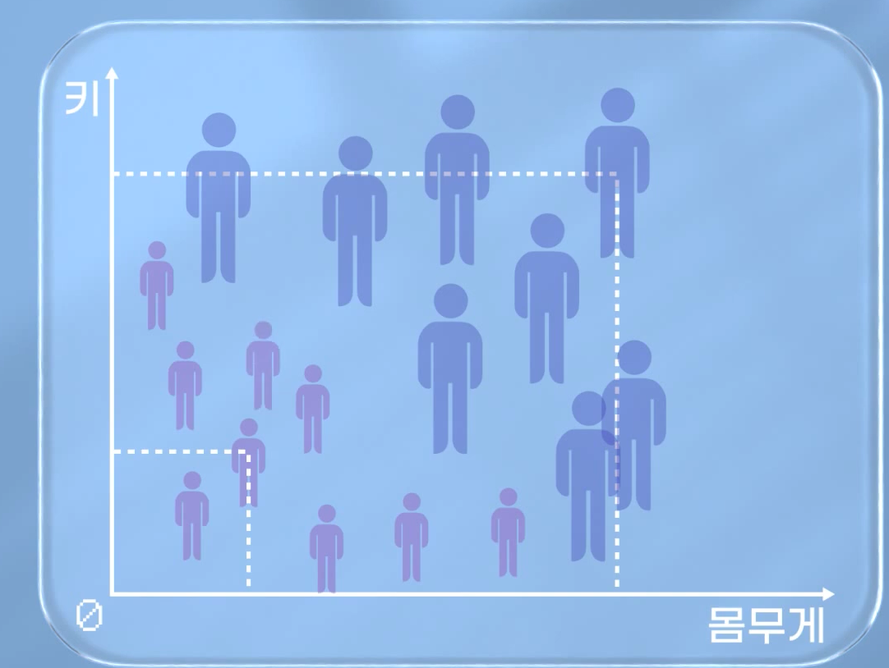
이미지 해설 (pre001) : 가로축이 몸무게, 세로축이 키인 평면에 사람 아이콘이 흩어져 있습니다. 키도 크고 몸무게도 큰 어른(큰 파란 아이콘)은 오른쪽 위에, 작은 아이(작은 보라색 아이콘)는 왼쪽 아래에 모여 있고, 점선이 각 무리의 범위를 표시합니다. 데이터를 점으로 찍어 보면 어른과 아이가 자연스럽게 두 무리로 나뉘는데, 이 두 무리를 가르는 경계를 찾는 것이 곧 "학습"입니다. 캡션 그대로 "키 + 몸무게가 클수록 어른일 확률이 높다"는 경향일 뿐, 키·몸무게만으로 실제 나이를 확정할 수 있다는 뜻은 아닙니다(장난감 예시).
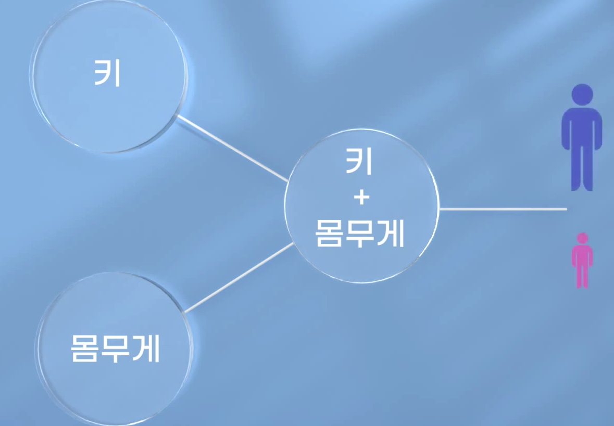
이미지 해설 (pre002) : "키"와 "몸무게" 두 개의 원이 선으로 합쳐져 "키 + 몸무게"라는 원 하나가 되고, 그 오른쪽에서 어른/아이로 갈라집니다. 즉 입력 두 개를 합쳐서 출력 하나를 만드는, 신경(뉴런) 하나의 구조입니다.
기준 — 가중치를 곱해서 더하고, 역치를 넘으면 1
- 기준 : 키와 몸무게에 가중치를 곱하고 더해서, 역치를 넘어가면 1(어른)
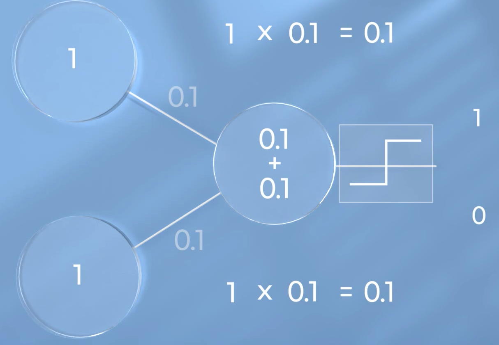
이미지 해설 (pre003) : 입력 두 개가 모두 1이고 연결선(가중치)이 둘 다 0.1입니다. 위쪽은 1 × 0.1 = 0.1, 아래쪽도 1 × 0.1 = 0.1, 가운데 원에서 0.1 + 0.1로 더합니다. 오른쪽 계단 모양 그래프(계단 함수)는 "합이 어느 문턱을 넘기 전에는 0, 넘으면 1"로 바꿔 주는 장치이고, 출력 축에는 1과 0이 적혀 있습니다. 순서는 ① 입력 × 가중치 → ② 전부 더하기 → ③ 문턱(역치)과 비교해 0 또는 1 입니다.
예시 — 숫자를 0~1로 단순화하고 역치는 0.5
- 예시 : 키,몸무게를 편의상 표기하고, 역치는 일단 0.5로 설정함

이미지 해설 (pre004) : 이 이미지는 내려받은 파일을 열어 보면 거의 전체가 흰 화면이라 내용을 읽을 수 없었습니다(원래 이미지가 비어 있는지, 불러오는 중 빠진 것인지는 구분하지 못했습니다). 그림의 내용을 지어내지 않고, 본문 설명(키·몸무게를 계산하기 쉽게 0~1 사이 숫자로 적고 역치를 0.5로 정한다)과, 바로 다음 그림(pre005)에서 같은 설정(키·몸무게 7명분 표, 역치 0.5)이 그대로 보이는 것으로 갈음합니다.
[보강] 이 장난감 모델은 가장 단순한 형태입니다. 실제 신경망은 계단 함수 대신 부드러운 곡선 형태의 활성화 함수(시그모이드, ReLU 등)를 쓰고, 합산에 편향(bias)이라는 상수도 더합니다. 또 합산 점수가 곧 확률인 것도 아닙니다. 지금 단계에서는 "곱해서 더하고, 문턱과 비교한다"만 기억하면 충분합니다.
필수 사전 지식 · 영상 메모 ② 가중치 조정으로 오차 줄이기
영상 메모는 같은 7명의 데이터로 "가중치를 잘못 잡으면 어떻게 틀리고, 고치면 어떻게 맞는지"를 보여 줍니다. 7명의 데이터는 아래와 같습니다(정답 1=어른, 0=아이). 이 파트에서 쓰는 모든 계산은 이 표를 기준으로 합니다.
| # | 키 | 몸무게 | 정답 |
|---|---|---|---|
| 1 | 0.7 | 0.8 | 1 (어른) |
| 2 | 0.8 | 0.6 | 1 (어른) |
| 3 | 0.3 | 0.2 | 0 (아이) |
| 4 | 0.1 | 0.2 | 0 (아이) |
| 5 | 0.6 | 0.7 | 1 (어른) |
| 6 | 0.3 | 0.4 | 0 (아이) |
| 7 | 0.2 | 0.1 | 0 (아이) |
첫 시도 — 랜덤 가중치로는 어른을 못 맞힌다
- 첫 시도 : “어른 데이터 입력 x 처음 가중치는 랜덤(아래 키 0.3, 몸무게 0.2)” → 역치 계산 ⇒ 0 (아이) 잘못된 값이 출력됨
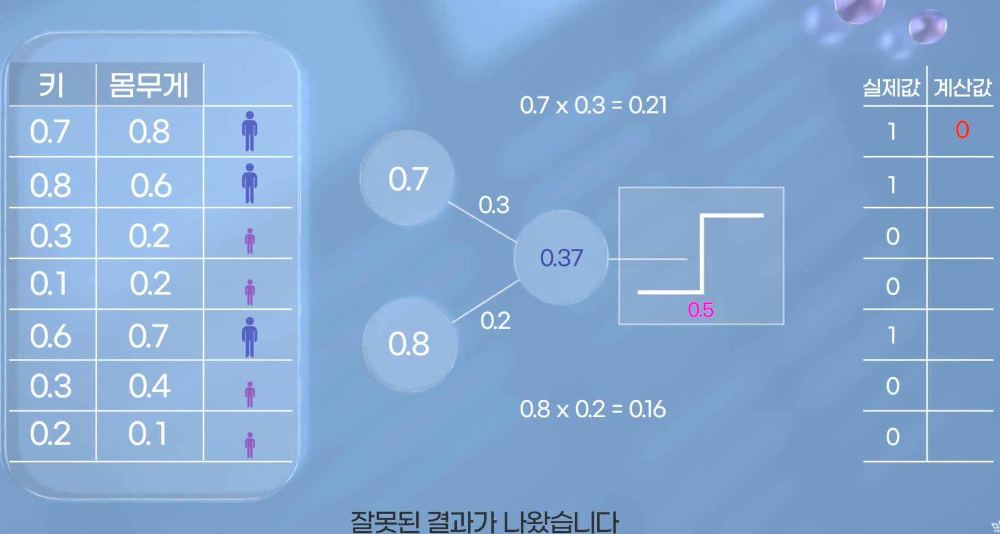
이미지 해설 (pre005) : 왼쪽에 위 7명의 표(키·몸무게), 가운데에 계산이 있습니다. 첫 어른 (키 0.7, 몸무게 0.8)에 가중치 0.3, 0.2를 곱하면 0.7 × 0.3 = 0.21, 0.8 × 0.2 = 0.16, 합 0.37입니다. 역치 0.5에 못 미치므로 계산값은 0(아이)이 되는데 실제값은 1(어른)이라 화면에 "잘못된 결과가 나왔습니다" 라고 표시됩니다. 오른쪽 "실제값 / 계산값" 표에서 어른 행이 빨갛게 표시됩니다.
- 두번째 시도도 어른인데 잘못된 값이 출력됨
- 결과 : 아이는 OK, 어른은 X
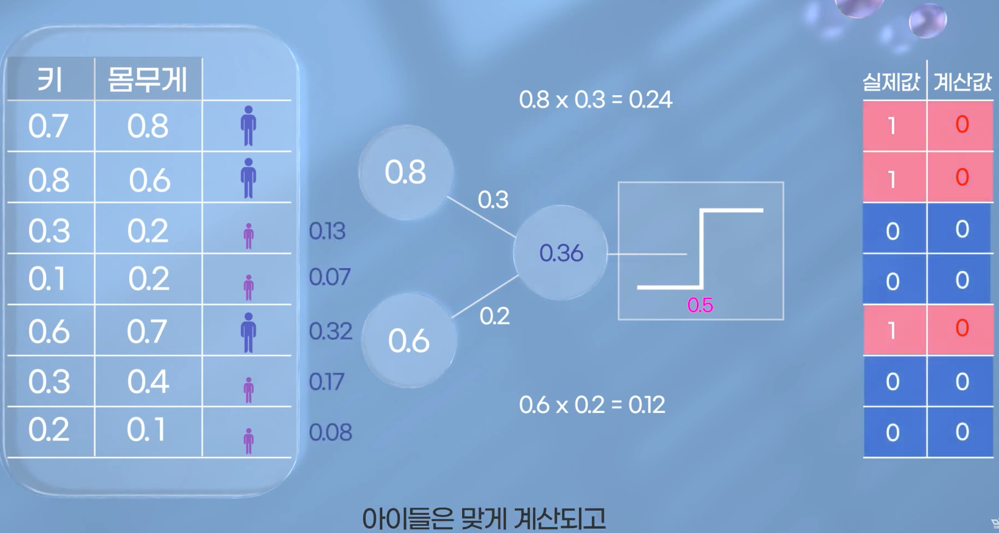
이미지 해설 (pre006) : 이번엔 두 번째 어른 (0.8, 0.6)입니다. 0.8 × 0.3 = 0.24, 0.6 × 0.2 = 0.12, 합 0.36으로 역시 0.5 미만이라 0(아이)이 나옵니다. 표 옆에는 나머지 행의 합(0.13, 0.07, 0.32, 0.17, 0.08)도 보이는데, 전부 0.5 미만이라 모든 행이 0으로 판정됩니다. 그래서 정답이 0인 아이 4명은 우연히 맞고(자막: "아이들은 맞게 계산되고"), 정답이 1인 어른 3명(1·2·5번 행)은 모두 틀립니다. 신호는 하나입니다: 가중치가 너무 작다.
오차 해결 — 가중치를 0.5로 올려 보자
- 오차 해결해보기 : 가중치를 0.5로 올려보자! ⇒ 해당 데이터에서 최적의 가중치를 확인!
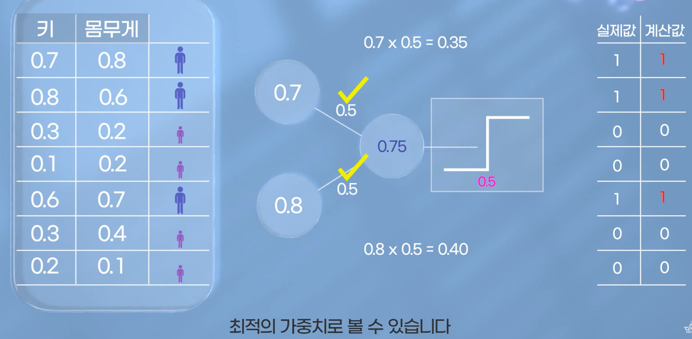
이미지 해설 (pre007) : 두 가중치를 모두 0.5로 바꾸자(노란 체크 표시) 첫 어른 0.7 × 0.5 = 0.35, 0.8 × 0.5 = 0.40, 합 0.75로 역치 0.5를 넘어 1이 됩니다. 오른쪽 "실제값 / 계산값" 표의 일곱 행이 모두 일치하고, 자막은 "최적의 가중치로 볼 수 있습니다"입니다.
두 가중치 설정의 전체 결과를 한 표로 비교하면 다음과 같습니다(합 = 키 × w키 + 몸무게 × w몸무게, 합 > 0.5 이면 1).
| # | 정답 | w=(0.3, 0.2) 합 | 판정 | w=(0.5, 0.5) 합 | 판정 |
|---|---|---|---|---|---|
| 1 | 1 | 0.37 | 0 ✗ | 0.75 | 1 ✓ |
| 2 | 1 | 0.36 | 0 ✗ | 0.70 | 1 ✓ |
| 3 | 0 | 0.13 | 0 ✓ | 0.25 | 0 ✓ |
| 4 | 0 | 0.07 | 0 ✓ | 0.15 | 0 ✓ |
| 5 | 1 | 0.32 | 0 ✗ | 0.65 | 1 ✓ |
| 6 | 0 | 0.17 | 0 ✓ | 0.35 | 0 ✓ |
| 7 | 0 | 0.08 | 0 ✓ | 0.15 | 0 ✓ |
| 오답 수 | 3개 (1·2·5번) | 0개 |
직접 만져 보기 — 가중치 슬라이더
아래 위젯은 위 7명 데이터를 그대로 사용합니다. 슬라이더를 움직이면 7개 행의 합·판정·정답 일치 여부가 즉시 다시 계산됩니다. (0.3, 0.2) 로 두면 1·2·5번 행이 틀리고, (0.5, 0.5) 로 두면 오답이 0개가 됩니다.
위젯을 해 보면 "학습"의 정체가 보입니다. 사람이 슬라이더를 손으로 움직이는 대신, 컴퓨터가 "오답 수(오차)가 줄어드는 방향으로 가중치를 조금씩 바꾸는 계산"을 자동으로 반복하는 것이 머신러닝의 학습입니다.
컴퓨터는 학습을 통해 최적의 가중치를 찾는다
- 컴퓨터는 학습을 통해서 최적의 가중치를 찾는다!
- 가중치를 변경해가면서, 오차가 없어질 때까지 계속 계산!
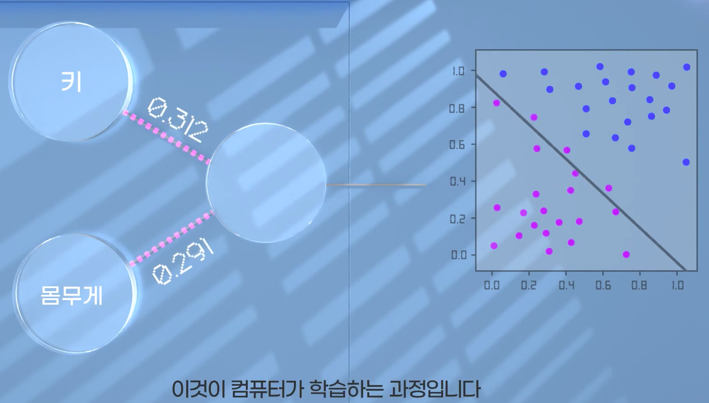
이미지 해설 (pre008) : 키·몸무게 두 축(0~1.0)이 있는 그래프 위에 가중치 후보 값들(0.291, 0.01 등)이 표시되고, 자막이 "이것이 컴퓨터가 학습하는 과정입니다" 입니다. 가중치를 조금씩 바꿔 가며 어른/아이 점들을 가르는 경계가 이동하는 모습을 보여 주는 장면으로, 슬라이더를 움직이는 과정을 컴퓨터가 빠르게 대신 하고 있다고 이해하면 됩니다. 그래프 속 개별 숫자의 의미까지는 그림만으로 확정하지 못했습니다.
- 최적의 가중치를 찾게 되면, 이후부터는 어떤 데이터를 넣어도 어른/아이를 구분함!
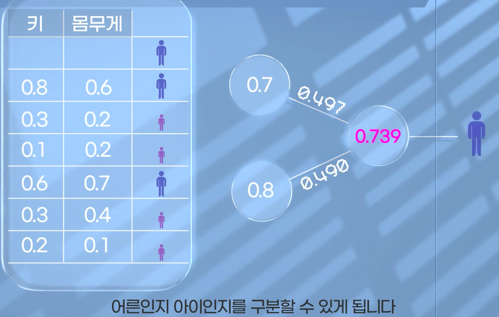
이미지 해설 (pre009) : 학습이 끝난 뒤의 모습입니다. 가중치가 0.497, 0.490처럼 학습으로 얻은 값으로 고정되어 있고, 새 입력 (0.7, 0.8)을 넣으면 0.7 × 0.497 + 0.8 × 0.490 ≈ 0.74(화면에는 0.739)로 역치를 넘어 어른 아이콘이 출력됩니다. 자막은 "어른인지 아이인지를 구분할 수 있게 됩니다". 이렇게 학습이 끝난 가중치로 새 입력의 답을 계산하는 것이 뒤에서 나오는 인퍼런스입니다. 가중치는 정확히 0.5가 아니라 학습 결과로 나온 값(약 0.5)이라는 점도 눈여겨보세요.
⚠ 바로잡기: 위 문장 "이후부터는 어떤 데이터를 넣어도 어른/아이를 구분함"(그리고 "오차가 없어질 때까지 계속 계산")은 그대로 믿으면 안 됩니다. 오차 0은 훈련에 쓴 7명에서 확인한 결과일 뿐, 처음 보는 모든 데이터의 정답을 보장하지 않습니다. 새 데이터에서 얼마나 맞는지는 따로 평가해야 합니다. 같은 메모 뒤쪽(책 발췌)도 "100% 정확도에는 도달하지 못할 수 있다"고 말합니다. 또 [보강] 이 7명을 모두 맞히는 가중치 조합은 하나가 아닙니다(예: 0.4/0.4, 0.5/0.5, 0.6/0.6, 0.7/0.7 모두 오답 0개). 그래서 "최적"은 "이 예시에서 오차가 없는 설정" 정도의 뜻으로 읽어야 합니다.
정리 — 입력 + 모델의 규칙(최적의 가중치) ⇒ 결과
- 위 예시는 내가 입력(데이터셋)을 준비하고 이후 출력되는 결과의 정답을 알고 있는 상황으로, 모델의 규칙(최적의 가중치) 찾는 과정.
- 결국 사람이 최적의 규칙을 발견 후, 이후 새로운 데이터 입력 시 모델을 통해 예측/판단을 내릴 수 있게 됨.
- 입력 + 모델의 규칙(최적의 가중치) ⇒ 결과
⚠ 바로잡기: "사람이 최적의 규칙을 발견"은 바로 위 메모("컴퓨터는 학습을 통해서 최적의 가중치를 찾는다")와 모순되는 표현입니다. 정확히는 사람은 문제·데이터·정답·채점 방식(오차를 어떻게 잴지)을 정하고, 가중치를 찾아내는 것은 컴퓨터의 학습 알고리즘입니다. 이 예시에서 사람이 0.5로 올려 본 것은 원리를 설명하기 위한 장면입니다.
flowchart LR
S["처음 가중치<br/>랜덤 0.3 과 0.2"] --> C["키x w1 + 몸무게x w2 계산"]
C --> T["역치 0.5 와 비교해 0 또는 1"]
T --> E{"정답과 같은가"}
E -- "틀림 있음" --> U["가중치를 바꾼다"]
U --> C
E -- "오차 없음" --> D["가중치 고정<br/>새 입력에 사용 인퍼런스"]필수 사전 지식 · 영상 메모 ③ 층 쌓기와 역전파
신경 1개가 아니라 층을 쌓으면 — 딥(deep)러닝
- 신경 1개가 아닌 더 복잡하게 층을 더 많이 쌓아서 복잡한 데이터를 처리 ⇒ 딥(deep)러닝
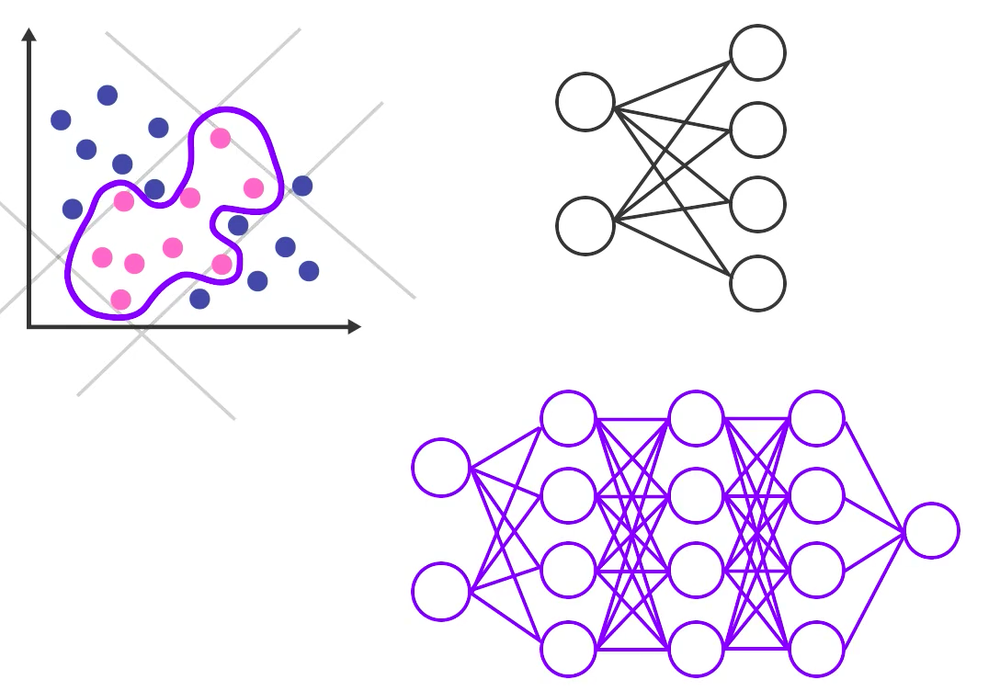
이미지 해설 (pre010) : 왼쪽 위에는 어른/아이 점을 직선 하나로는 가를 수 없어서 보라색 곡선으로 가른 산점도가 있습니다. 오른쪽 위는 층이 얕은(2→4) 신경망, 오른쪽 아래는 층을 여러 겹 쌓은 깊은 신경망입니다. 신경 하나는 "곱해서 더하고 문턱과 비교"라서 직선 경계만 그을 수 있지만, 층을 쌓으면 곡선처럼 복잡한 경계도 표현할 수 있습니다. 층이 "깊다(deep)"고 해서 딥러닝입니다.
- 데이터 흐름 : 입력층 → 은닉층 → 출력층으로 전파
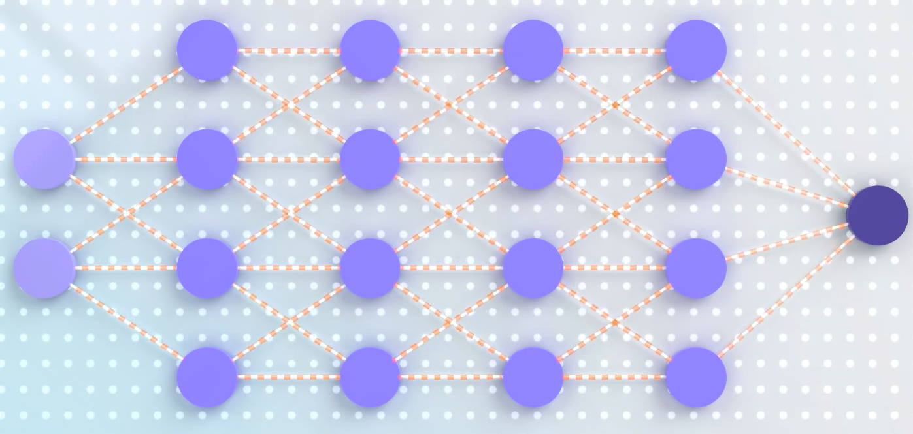
이미지 해설 (pre011) : 글자가 거의 없는 그림이라 글로는 판독하지 못했고, 본문 설명(입력층 → 은닉층 → 출력층)과 구조로 볼 때 왼쪽 입력에서 오른쪽 출력으로 값이 층을 차례로 통과하는 모습으로 보입니다. 이렇게 앞으로 값을 계산해 나가는 것을 순전파라고 합니다. 은닉층은 입력층과 출력층 사이에 있어서 밖에서는 직접 보이지 않는 중간 계산층입니다.
- 출력값에 오차가 생기면 가중치를 수정 ⇒ 출력값에 가까이 있는 것부터 수정/전파
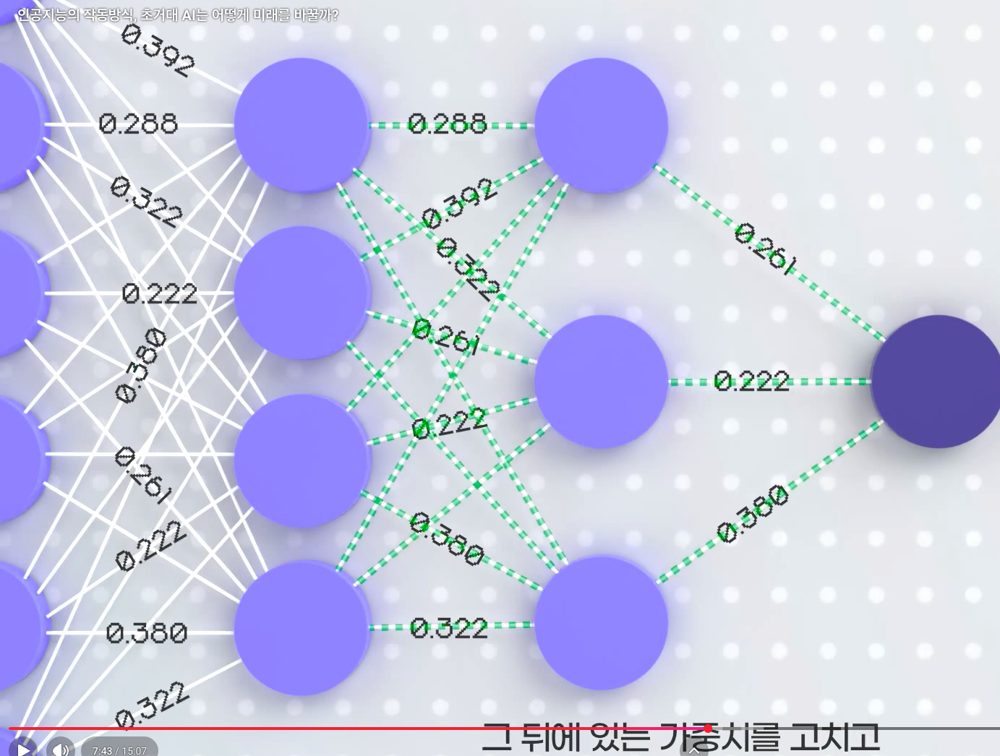
이미지 해설 (pre012) : 영상 화면 캡처입니다(제목 "인공지능의 작동방식, 초거대 AI는 어떻게 미래를 바꿀까?", 재생 시각 7:43 / 15:07). 노드 사이에 0.392, 0.288, 0.322, 0.222, 0.380 같은 가중치 값이 보이고, 자막은 "그 뒤에 있는 가중치를 고치고" 입니다. 오차는 출력층 쪽에서 가장 먼저 확인되므로, 출력에 가까운 가중치부터 고치고 점점 입력 쪽으로 거슬러 올라가며 수정한다는 뜻입니다.
- 가중치가 모두 수정되면, 데이터를 다시 앞으로 전파하면서 계산하고 오차가 생기면 다시 뒤로 전파하면서 가중치를 수정!
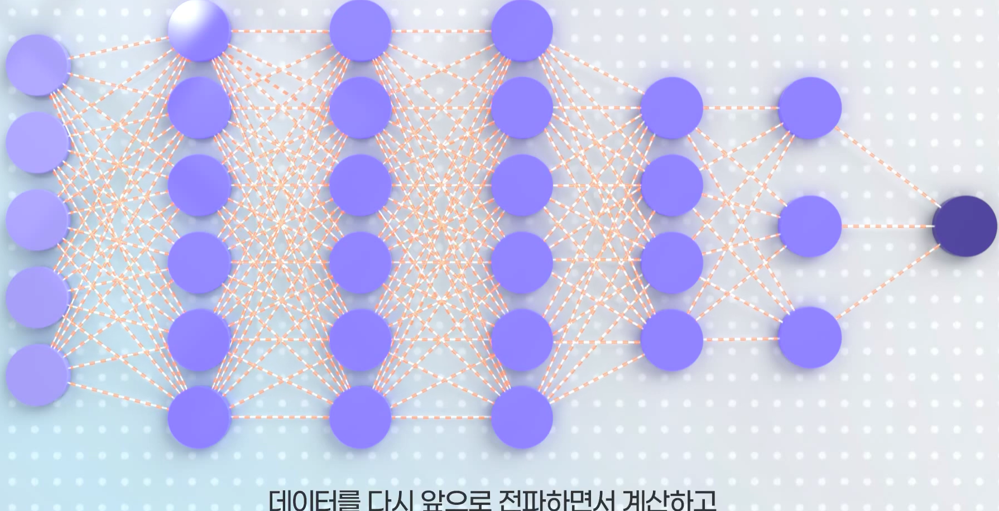
이미지 해설 (pre013) : 자막이 "데이터를 다시 앞으로 전파하면서 계산하고" 입니다. 앞으로 계산(순전파) → 오차 확인 → 뒤로 수정(역전파) → 다시 앞으로 계산…을 반복한다는 장면입니다.
flowchart LR
X["입력층"] --> H1["은닉층 1"] --> H2["은닉층 2"] --> O["출력층 예측"]
O --> L["오차 계산<br/>예측과 정답 비교"]
L -. "출력에 가까운 층부터 가중치 수정" .-> H2
H2 -. "수정 전파" .-> H1
H1 -. "수정 전파" .-> X[보강] 정확히는 역전파는 "각 가중치가 오차에 얼마나 영향을 줬는지(기울기)"를 계산하는 알고리즘이고, 그 값을 보고 실제로 가중치를 고치는 일은 옵티마이저(예: 경사하강법)가 합니다. 본문의 "뒤로 전파하면서 가중치를 수정"은 이 두 단계를 한 문장으로 묶은 입문용 표현입니다.
- 참고 그림 (아래 두 장은 본문에 붙은 외부 글의 도식입니다. 출처: 트랜스포머를 Go로 직접 만들어보며 이해한 것 : 훈련시 역전파 사용 — 링크는 열어 보지 못해 확인 못함, 이미지만 확인)
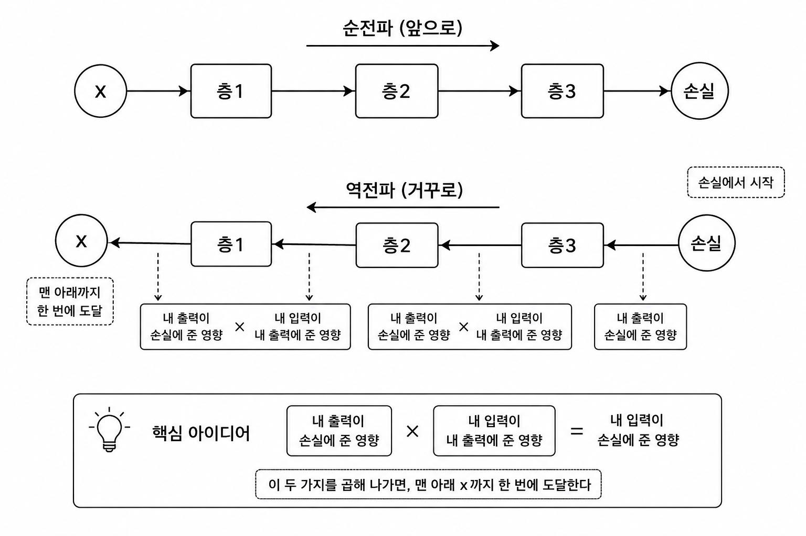
이미지 해설 (pre014) : 위쪽은 순전파(앞으로): 층1 → 층2 → 층3 → 손실. 아래쪽은 역전파(거꾸로): 손실에서 시작해 층3 → 층2 → 층1로 되돌아옵니다. 핵심 문구는 "내 출력이 손실에 준 영향 × 내 입력이 내 출력에 준 영향 = 내 입력이 손실에 준 영향" 이고, "이 두 가지를 곱해 나가면, 맨 아래 x까지 한 번에 도달한다"고 적혀 있습니다. 즉 층마다의 영향도를 곱해서 거슬러 가면(수학의 연쇄 법칙) 맨 앞 입력까지 "오차에 미친 영향"이 전달됩니다.
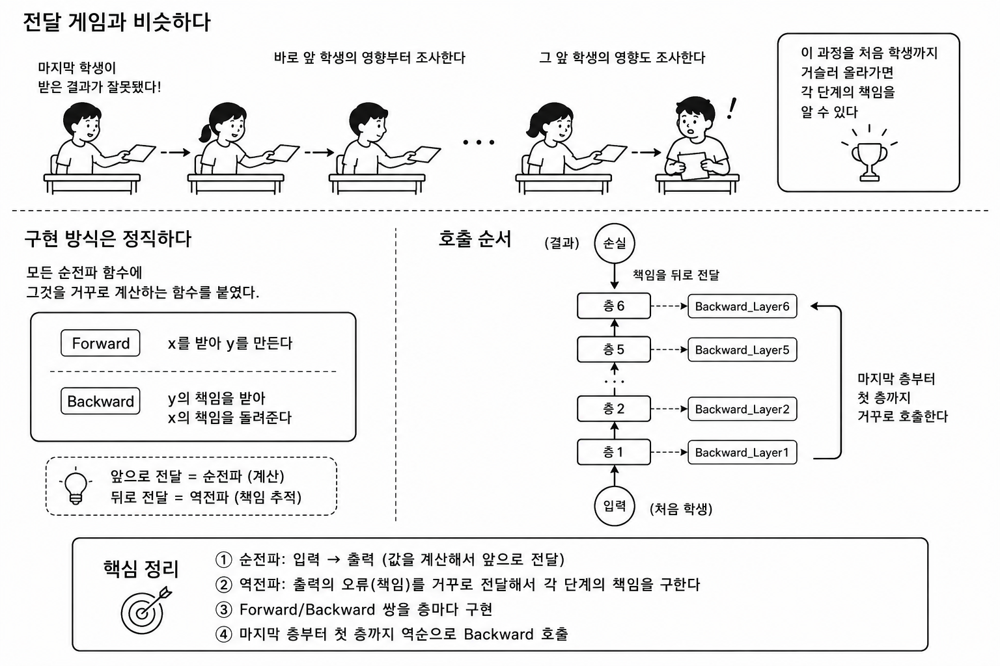
이미지 해설 (pre015) : 같은 글의 다음 도식으로, 제목이 "전달 게임과 비슷하다" 입니다. "마지막 학생이 받은 결과가 잘못됐다! → 바로 앞 학생의 영향부터 조사한다 → 그 앞 학생의 영향도 조사한다". 구현은 정직해서 모든 순전파 함수(Forward)에 그것을 거꾸로 계산하는 함수(Backward)를 붙이고, 마지막 층부터 첫 층까지 역순으로 Backward를 호출합니다. 핵심 정리: ① 순전파는 값을 계산해 앞으로 전달, ② 역전파는 출력의 오류(책임)를 거꾸로 전달해 각 단계의 책임을 구함, ③ 층마다 Forward/Backward 쌍을 구현, ④ 마지막 층부터 역순 호출.
필수 사전 지식 · 영상 메모 ④ 이미지 특징·언어 처리·가중치
규칙을 사람이 쓰는 대신 데이터를 보여 준다
- 규칙을 사람이 쓰는 게 아니라 데이터를 보여주면 컴퓨터가 스스로 규칙을 찾아낼 순 없을까?
- 데이터로부터 패턴을 학습해서 새로운 데이터에 대한 예측/판단을 내릴 수 있음!
- 입력(충분한 데이터) + 결과(정답) → 모델(규칙)*
앞의 "입력 + 규칙 ⇒ 결과"(사용할 때)와 비교하면 방향이 반대입니다. 학습할 때는 입력과 정답을 주고 규칙(=가중치)을 얻고, 사용할 때는 새 입력과 그 규칙을 주고 결과를 얻습니다.
flowchart TB
subgraph TRAD["전통 프로그래밍"]
I1["입력"] --> R1["사람이 쓴 규칙"]
R1 --> O1["결과"]
end
subgraph LEARN["머신러닝 학습"]
I2["입력 데이터"] --> L["가중치 조정"]
Y["정답 레이블"] --> L
L --> W["학습된 가중치 = 규칙"]
end
subgraph USE["머신러닝 사용 인퍼런스"]
I3["새 입력"] --> W2["학습된 가중치"]
W2 --> O3["예측 결과"]
end
W --> W2딥러닝 — 이미지에서 스스로 특징을 추출한다
- 딥러닝(이미지 예측 예시) : 스스로 학습해서 특징을 추출!
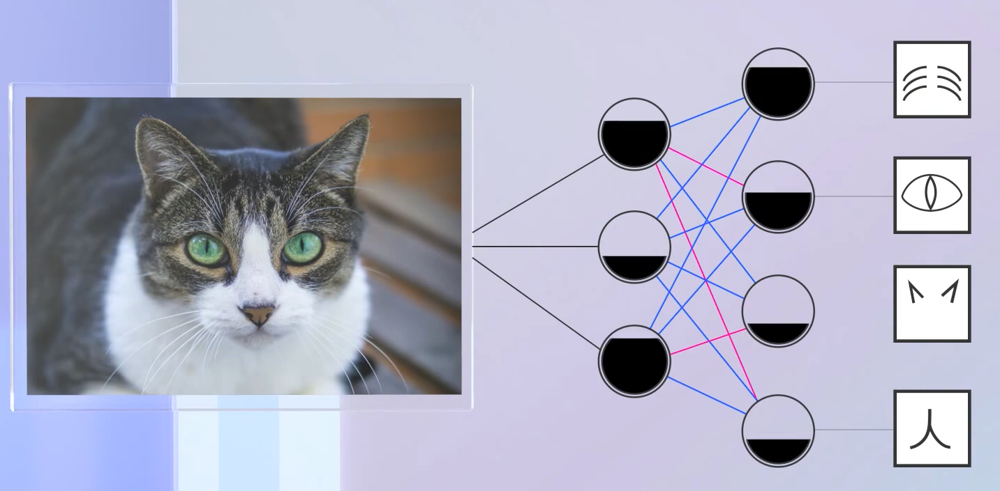
이미지 해설 (pre016) : 고양이 사진과, 사진에서 뽑히는 눈·귀·수염 같은 특징이 노드로 이어지는 개념도로 보입니다(글자가 없어 세부는 판독하지 못했습니다). 사람이 "고양이는 뾰족한 귀가 있다"고 규칙을 일일이 쓰는 대신, 신경망이 데이터에서 스스로 특징을 학습한다는 점을 강조하는 그림이며, 이 캡처만으로 합성곱(CNN) 구조까지 특정할 수는 없습니다.
- 특징의 추출은 필터를 사용 → 필터를 사용해서 이미지를 다양하게 변경 ⇒ 다시 이를 통해 많은 특징을 뽑아낼수 있음
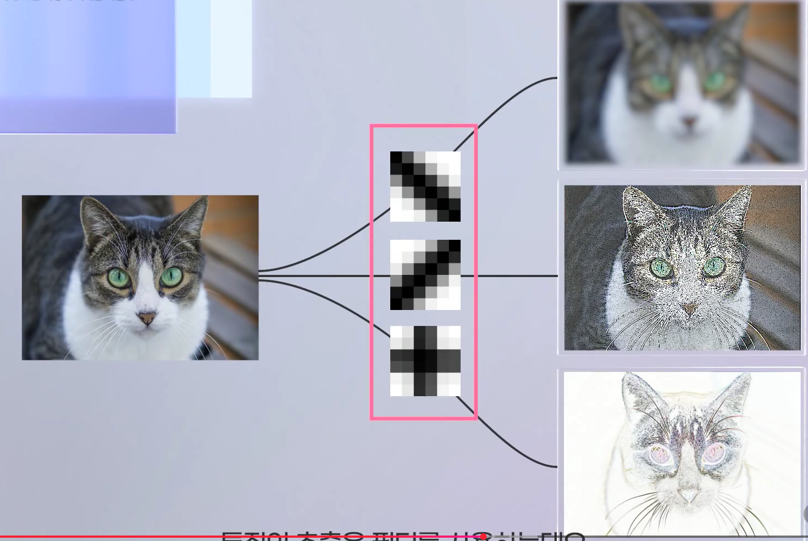
이미지 해설 (pre017) : 고양이 원본 사진에 서로 다른 필터(작은 숫자 격자)를 적용하자, 흐릿해지거나 윤곽선만 강조되는 등 서로 다른 변환 이미지가 생기는 그림입니다. 필터는 선·모서리·질감 같은 패턴 탐지기이고, 필터마다 다른 특징이 강조됩니다.
- 숫자를 인식하는 인공지능에, 각각 직선과 곡선 인식 필터 사용 시, 1은 직선 출력값이 높아지고, 2는 곡선 출력값이 높아짐 ⇒ 출력된 특징으로 어떤 숫자인지 확률적으로 예측가능!
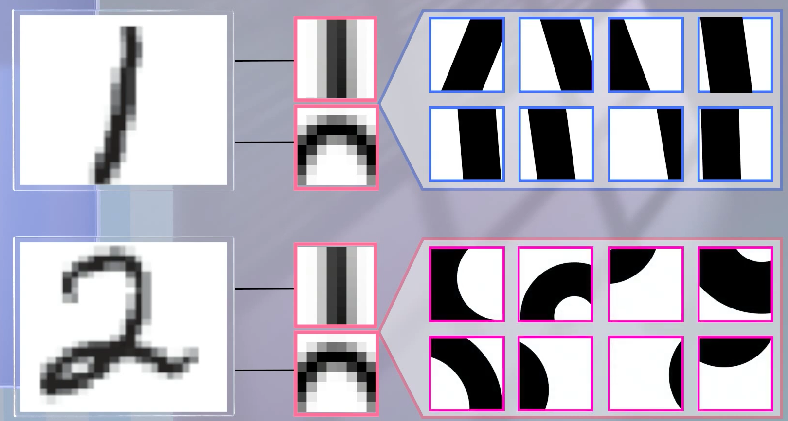
이미지 해설 (pre018) : 숫자 1, 2와 직선 모양 필터 / 곡선 모양 필터가 나란히 있고, 필터를 겹쳤을 때 반응하는 패턴이 묶여 있습니다. 1에는 직선 필터가, 2에는 곡선 필터가 크게 반응한다는 설명을 그림으로 보여 줍니다. 이 그림 자체에는 0.90 같은 수치가 없으니, 숫자 예시는 뒤의 pre028과 섞어 읽지 마세요.
- 숫자 인식 인공지능에 2 입력 시, 특징을 뽑아내고 배열해서, 결국 확률적으로 2라는 숫자를 뽑아냄
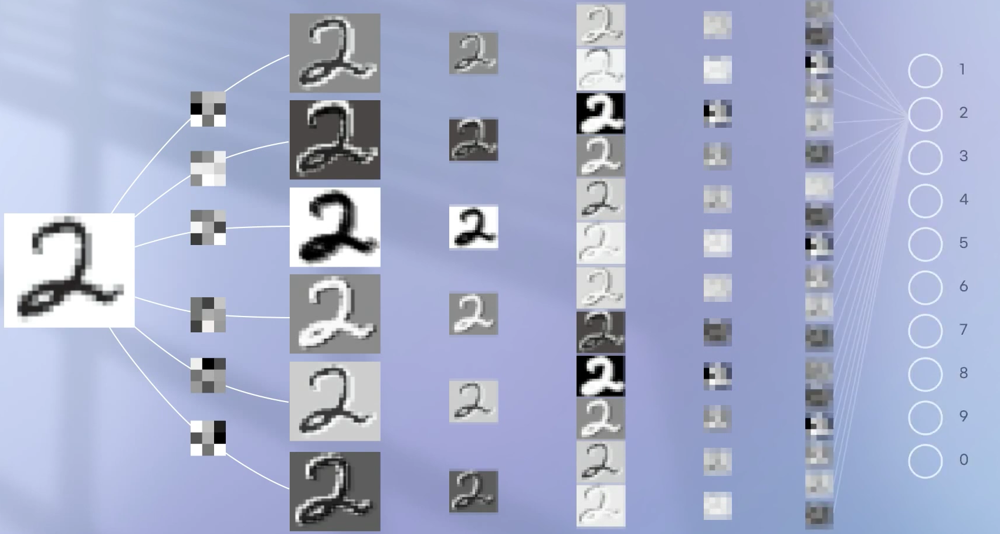
이미지 해설 (pre019) : 입력 숫자 2가 왼쪽에 있고, 여러 특징 맵을 거쳐 오른쪽에 0~9 열 개 숫자 칸이 있는 출력 쪽으로 이어집니다. 마지막에는 열 개 후보 중 2일 가능성이 가장 높게 나옵니다. 신경망의 출력은 "정답은 2다"라는 단정이 아니라 후보별 확률(점수) 이고, 그중 가장 높은 것을 답으로 고릅니다.
[보강] 실제 합성곱 신경망(CNN)의 필터는 사람이 직선·곡선 필터를 지정하는 것이 아니라 데이터로 학습됩니다. "1은 직선, 2는 곡선"은 원리를 이해시키기 위한 교육용 예시이고, 실제 분류는 수많은 특징의 조합으로 이루어집니다.
언어를 처리하는 인공지능
- 언어를 처리하는 인공지능 : (한번의 예측이 아님), 언어는 입력값이 하나의 단어가 될 수 도 있고, 문장으로 바꿀수도 있음 → 유연한 구조가 필요함 ⇒ 앞 단어를 기억해서, 다시 인식하는 과정을 반복 ⇒ 토큰(단어) 결과에 가중치는 다음 단어 예측에 활용됨!
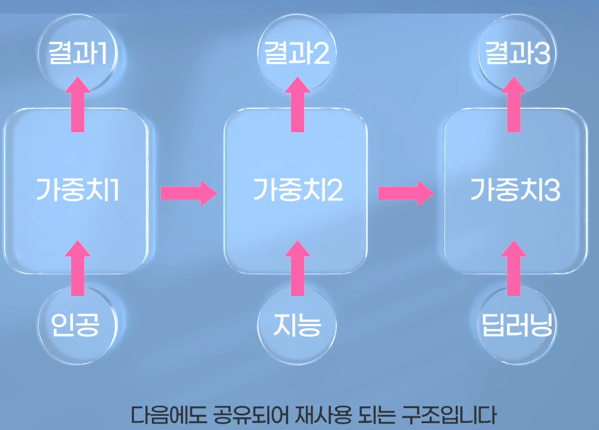
이미지 해설 (pre020) : 결과1 → 결과2 → 결과3과 가중치1 → 가중치2 → 가중치3이 이어져 있고, 아래에는 입력 인공 / 지능 / 딥러닝이 놓여 있습니다. 하단 문구는 "…다음에도 공유되어 재사용 되는 구조입니다" 입니다. 즉 이 그림이 말하는 것은 "단어를 하나씩 처리할 때마다 같은 가중치가 공유되어 재사용된다"는 구조입니다.
왜 언어는 유연한 구조가 필요할까요? 숫자 이미지는 입력 크기가 늘 같지만(예: 32×32 픽셀), 언어는 입력이 한 단어일 수도, 한 문장일 수도, 긴 글일 수도 있어 길이가 제각각이기 때문입니다. 그래서 한 번에 결과를 내는 것이 아니라 단어(토큰)를 하나씩 처리하며 앞에서 처리한 내용을 반영하는 과정을 되풀이하는 구조를 씁니다.
⚠ 바로잡기(오독 방지): 본문 문장은 "토큰(단어) 결과에 가중치는 다음 단어 예측에 활용됨!"입니다. 이것을 "가중치가 다음 단어로 넘어간다"거나 "답을 만들 때마다 가중치를 새로 학습한다"로 읽으면 안 됩니다. 그림의 설명대로 가중치는 한 벌이 공유되어 재사용되는 것이고, 단어를 이어 갈 때 앞쪽으로부터 전달되는 것은 가중치가 아니라 앞 단어들의 처리 결과(문맥·상태)입니다. 또 [보강] 토큰이 곧 단어는 아닙니다(단어의 일부나 글자 조각일 수 있음). "앞 단어를 기억해 반복"은 순환 신경망(RNN)식의 쉬운 비유이고, 오늘날의 LLM(트랜스포머)은 어텐션으로 앞 문맥을 참조합니다. 이 장에서는 "가중치는 학습이 끝나면 고정되고, 답을 만들 때 그것을 재사용한다" 정도로 이해하면 충분합니다.
- (참고) 가중치는 모델에 있어 두뇌와 같은 역할을 함. 가중치들이 학습되고, 그로 인해 모델이 어떻게 동작할지가 결정됨.
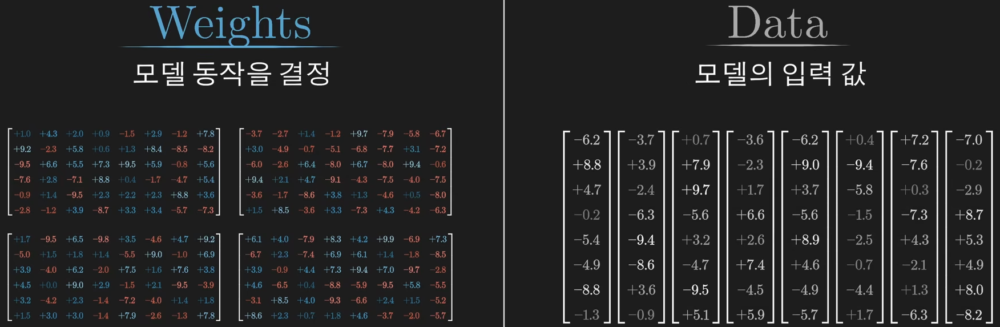
이미지 해설 (pre021) : +1.0, -7.6, +19.2처럼 정말 많은 숫자가 격자로 늘어서 있고, 가운데 라벨이 "Weights — 모델 동작을 결정" 입니다. 모델 파일의 실체는 이런 숫자 묶음입니다. 이 숫자들이 학습으로 정해지고, 그 숫자가 곧 모델이 어떻게 반응할지를 결정합니다.
임성훈 님 도식화: 전통 프로그래밍 vs 머신러닝, 가중치의 역할
이 구간은 본문에 "임성훈님이 ML 기초/수명주기 등 도식화 내용 일부"로 소개된 그림 모음입니다. 출처 링크는 두 번 인용된 ssungz.tistory.com/109 입니다(링크 본문은 열어 보지 못해 확인 못함. 그림만 확인). 앞의 영상 내용을 표와 도식으로 다시 정리한 자료라고 보면 됩니다.
전통 프로그래밍 vs 머신러닝
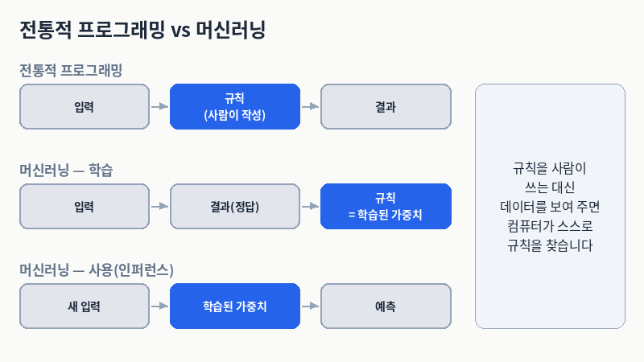
이미지 해설 (pre022) : 세 줄의 흐름이 있습니다.
- 전통적 프로그래밍 : 입력 + 규칙(사람이 작성) → 결과
- 머신러닝 - 학습 : 입력 + 결과(정답) → 규칙 (= 학습된 가중치)
- 머신러닝 - 사용(인퍼런스) : 새 입력 + 학습된 가중치 → 예측
아래 문구는 "규칙을 사람이 쓰는 대신 데이터를 보여 주면 컴퓨터가 스스로 규칙을 찾습니다"입니다. 규칙의 출처가 '사람'에서 '데이터'로 바뀐 것이 핵심이며, 여기서 "규칙 = 학습된 가중치"라는 등식을 기억해 두세요.
머신러닝으로 AI 만드는 3단계
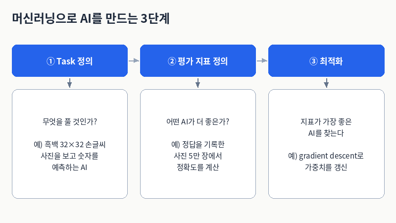
이미지 해설 (pre023) : AI를 만들 때 필요한 세 가지입니다(그림 속 질문 문구 그대로).
- ① Task 정의 — "무엇을 풀 것인가?" 예) 흑백 32×32 손글씨 사진을 보고 숫자를 예측하는 AI
- ② 평가 지표 정의 — "어떤 AI가 더 좋은가?" 예) 정답을 기록한 사진 5만 장에서 정확도를 계산
- ③ 최적화 — "지표가 가장 좋은 AI를 찾는다" 예) gradient descent(경사하강법)로 가중치를 갱신
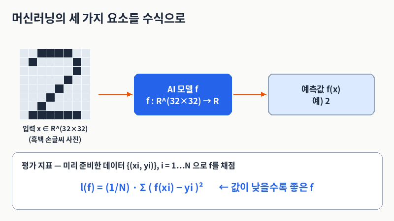
이미지 해설 (pre024) : 같은 세 가지를 수식으로 쓴 그림입니다. AI 모델은 함수 f : R^(32×32) → R(32×32 흑백 사진을 넣으면 실수 하나를 내놓음), 입력은 x ∈ R^(32×32)이고 예측값은 f(x)입니다(예: 2). 평가 지표는 미리 준비한 데이터 {(xi, yi)}, i = 1…N으로 f를 채점하는 식 L(f) = (1/N) · Σ (f(xi) − yi)² 이며, 값이 낮을수록 좋은 f 입니다. 판독한 식은 오차를 제곱해 평균 낸 평균제곱오차(MSE) 형태입니다. N은 예시 개수, yi는 정답, f(xi)는 모델 예측이며, 제곱은 +/- 오차가 서로 상쇄되지 않게 합니다.
[보강] 이 그림은 숫자를 실수 하나로 예측하는 설명용 단순화입니다. 분류 문제가 항상 이 손실(MSE)을 쓰는 것은 아니며, 정답 숫자 사이의 크기 차이가 곧 오류의 심각도라는 뜻도 아닙니다.
모델 학습 과정에서 가중치의 역할
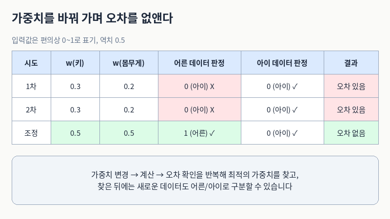
이미지 해설 (pre025) : 앞 영상 예시를 표 하나로 요약한 그림입니다("입력값은 편의상 0~1로 표기, 역치 0.5").
| 시도 | 1차 | 2차 | 조정 |
|---|---|---|---|
| W(키) | 0.3 | 0.3 | 0.5 |
| W(몸무게) | 0.2 | 0.2 | 0.5 |
| 어른 데이터 판정 | 0(아이) ✗ | 0(아이) ✗ | 1(어른) ✓ |
| 아이 데이터 판정 | 0(아이) ✓ | 0(아이) ✓ | 0(아이) ✓ |
| 결과 | 오차 있음 | 오차 있음 | 오차 없음 |
아래 문구: "가중치 변경 → 계산 → 오차 확인을 반복해 최적의 가중치를 찾고, 찾은 뒤에는 새로운 데이터도 어른/아이로 구분할 수 있습니다". (이 마지막 문장에는 앞서 본 '새 데이터 보장' 주의가 그대로 적용됩니다.)
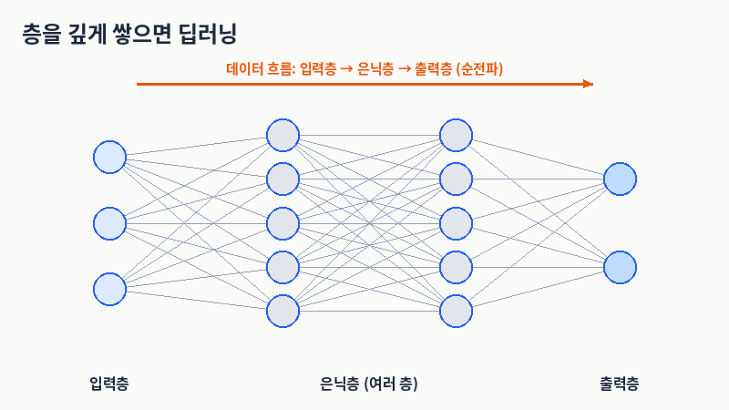
이미지 해설 (pre026) : 제목 "층을 깊게 쌓으면 딥러닝". 데이터 흐름은 입력층 → 은닉층(여러 층) → 출력층(순전파)입니다.
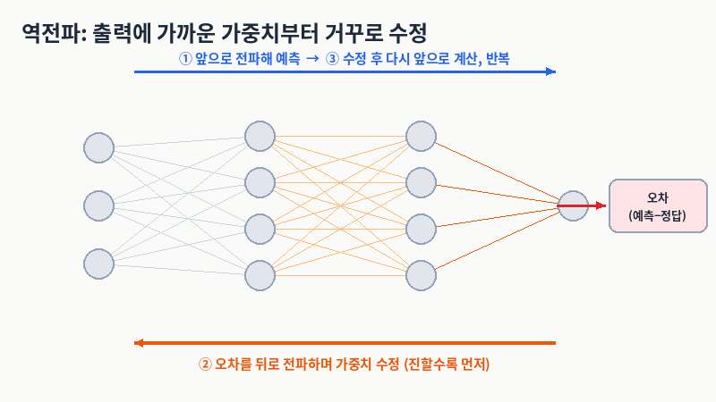
이미지 해설 (pre027) : 제목 "역전파: 출력에 가까운 가중치부터 거꾸로 수정". ① 앞으로 전파해 예측 → ② 오차(예측 − 정답)를 뒤로 전파하며 가중치 수정(진할수록 먼저) → ③ 수정 후 다시 앞으로 계산, 반복. 영상 속 순전파·역전파 장면의 세 단계 요약입니다.
딥러닝과 언어 모델
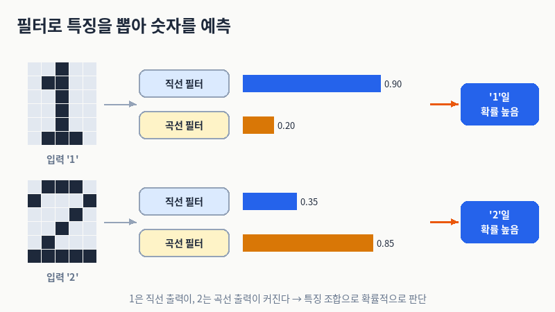
이미지 해설 (pre028) : 제목 "필터로 특징을 뽑아 숫자를 예측". 입력 1에 직선 필터는 0.90, 곡선 필터는 0.20이어서 "'1'일 확률 높음"; 입력 2에는 직선 0.35, 곡선 0.85여서 "'2'일 확률 높음". 결론 "1은 직선 출력이, 2는 곡선 출력이 커진다 → 특징 조합으로 확률적으로 판단". 필터 반응값을 예로 든 숫자일 뿐 합이 1이 되는 최종 확률은 아닙니다.
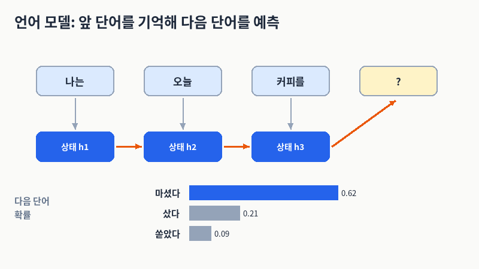
이미지 해설 (pre029) : 제목 "언어 모델: 앞 단어를 기억해 다음 단어를 예측". "나는 → 오늘 → 커피를"이 차례로 들어가며 각 단계에 상태 h1, h2, h3(앞 단어를 요약해 들고 있는 값)이 있고, 마지막에 다음 단어 후보와 확률이 표시됩니다: 마셨다 0.62, 샀다 0.21, 쏟았다 0.09. 언어 모델의 본질은 "앞의 말을 보고 다음 말의 확률을 매기는 것" 이라는 점을 보여 줍니다. 세 후보의 합은 0.92이므로 전체 확률분포가 아니라 일부 후보만 보여 준 그림이고, 순환 구조를 단순화한 도식입니다(위 pre020 정정 참고).
- 본문의 마지막 글머리표
~는 뒤에 내용이 없는 항목입니다(생략 표시로만 남아 있음).
머신러닝 소개 ① AI와 생성형 AI, 두 가지 소프트웨어 스택
아래는 『그림으로 배우는 생성형 AI』(2026년 4월) 에서 발췌한 "머신러닝 소개"입니다. 책 링크는 교보문고 이며, 링크 본문은 열어 보지 못해 확인 못함(책 내용은 발췌문과 캡처 이미지 기준)입니다.
▶ 머신러닝 소개 : 그림으로 배우는 생성형 AI 책 (26년 4월) - Link
▶ AI, 기계에 인간의 능력을 부여하다
- AI, 즉 인공지능 artificial intelligence 은 기계(컴퓨터)에 인간과 유사한 능력을 부여하는 컴퓨터 과학의 한 분야입니다.
- ‘생성형 AI’ 또는 ‘GenAI’라는 용어는 모델, 제품, 연구 분야, 소프트웨어 프레임워크를 통칭하는 말입니다.
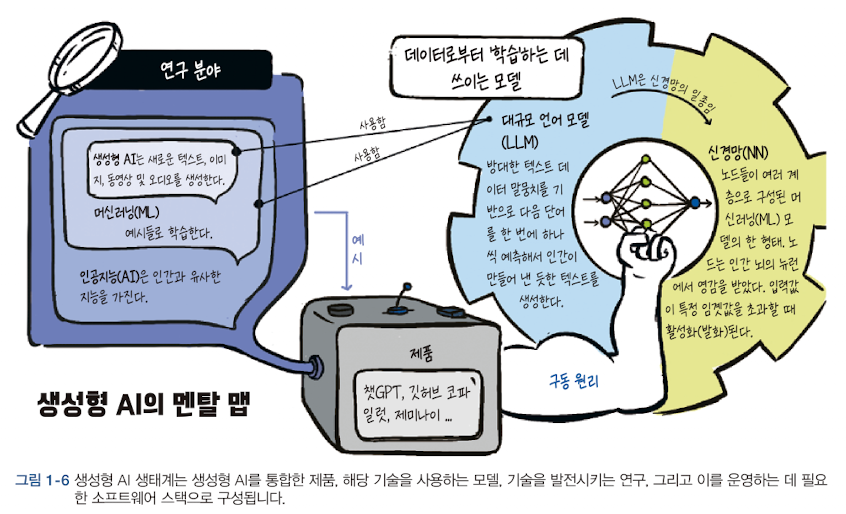
이미지 해설 (pre030) : 책의 그림 1-6 "생성형 AI의 멘탈 맵" 입니다. 한 장에 이런 말풍선들이 들어 있습니다.
- 인공지능(AI) : 인간과 유사한 지능을 가진다.
- 머신러닝(ML) : 예시들로 학습한다. 데이터로부터 학습하는 데 쓰이는 모델.
- 신경망(NN) : 노드들이 여러 계층으로 구성된 ML 모델의 한 형태. 노드는 인간 뇌의 뉴런에서 영감을 받았다. 입력값이 특정 임곗값을 초과할 때 활성화(발화) 된다.
- 대규모 언어 모델(LLM) : 방대한 텍스트 데이터 말뭉치를 기반으로 다음 단어를 한 번에 하나씩 예측해서 인간이 만들어 낸 듯한 텍스트를 생성한다.
- 생성형 AI : 새로운 텍스트, 이미지, 동영상 및 오디오를 생성한다.
- 연구 분야 / 제품 / 구동 원리(소프트웨어) 의 세 갈래. 제품 예시는 "챗GPT, 깃허브 코파일럿, 제미나이…".
- 캡션: "그림 1-6 생성형 AI 생태계는 생성형 AI를 통합한 제품, 해당 기술을 사용하는 모델, 기술을 발전시키는 연구, 그리고 이를 운영하는 데 필요한 소프트웨어 스택으로 구성됩니다."
쉽게 풀면: 신경망의 노드는 입력이 문턱(임곗값)을 넘으면 켜지는 스위치와 같고(앞 영상 예시의 '역치'와 같은 아이디어), LLM은 그런 신경망을 크게 만들어 "다음 단어를 하나씩 이어 붙이며" 글을 만들어 내는 모델입니다.
- 오픈AI가 만든 GPT-4 같은 생성형 AI 모델은 이미지와 텍스트를 생성하는 능력을 제공합니다.
- 챗GPT 같은 생성형 AI 제품 product 은 이러한 모델을 통합해서 멋진 사용자 인터페이스를 제공하고요.
- 생성형 AI 분야의 연구 research 는 모델의 성능을 발전시킵니다.
- 이러한 모델과 제품을 운영하려면 생성형 AI 소프트웨어 스택이 필요합니다.
- 이 모든 것이 함께 모여 생성형 AI 생태계를 이룹니다.
[보강] 첫 줄의 "GPT-4 … 이미지와 텍스트를 생성"은 정확히는 구분해서 읽어야 합니다. 최초 GPT-4 기술 보고서가 설명하는 모델은 이미지·텍스트를 입력으로 받고 텍스트를 출력합니다. 이미지를 만들어 주는 기능은 챗GPT 같은 제품이 별도 기능을 통합한 경우입니다. "모델"과 "제품"의 구분이 바로 위 문장들이 강조하는 포인트입니다.
- 연구 분야의 관점에서, 망막 스캔에는 머신러닝(ML)이 관여합니다.
- AI의 일종인 머신러닝에서는 기계가 수많은 예시를 통해서 학습합니다.
- 망막 스캔의 경우 머신러닝 모델은 레이블이 달린 수십만 장의 이미지로 학습합니다.
- 레이블은 이미지의 분류 정보인데, 망막 스캔 훈련용 이미지들에는 ‘정상’, ‘당뇨’, ‘녹내장’ 같은 레이블이 붙습니다.
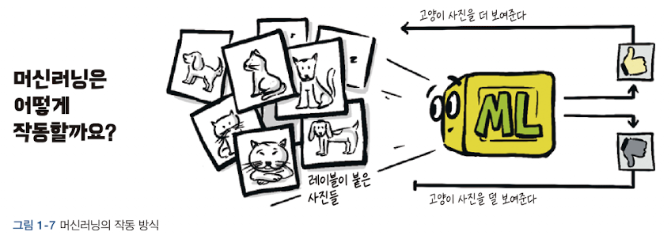
이미지 해설 (pre031) : 책의 그림 1-7 "머신러닝은 어떻게 작동할까요?" 입니다. 이 그림은 망막 스캔이 아니라 고양이 사진 비유로, "레이블이 붙은 사진들 → ML → '고양이 사진을 더 보여준다' / '고양이 사진을 덜 보여준다'"의 흐름을 그렸습니다. 레이블(정답표)이 달린 예시를 많이 보여 주면 ML이 그 패턴을 배운다는 뜻입니다. (본문의 "수십만 장"은 예시 규모이지, 모든 망막 모델에 필요한 장수가 아닙니다.)
- 신경망 neural net (NN)은 컴퓨터가 데이터에서 정보를 학습하는 데 쓰이는 일반적인 AI 모델입니다.
- 생물체의 신경계에 있는 뉴런 neuron 에서 영감을 얻었기 때문에 이런 이름이 붙었지요.
- 신경망은 따지고 보면 하나의 수학 함수인데, 흔히 코드로 구현됩니다.
- 그림으로 표현할 때는 노드들로 이루어진 계층 layer 형태가 주로 쓰이고요.
-
망막 스캔 이미지를 분류하는 예에서 신경망의 입력은 이미지이고, 출력은 ‘당뇨병’이나 ‘정상’ 처럼 아주 제한된 어휘 중 하나의 단어입니다.
-
생성형 AI도 대량의 데이터로 학습한다는 점에서 머신러닝의 일종입니다.
- 하지만 출력이 대부분의 ML 애플리케이션보다 휠씬 더 개방적 open-ended 인 경향이 있습니다.
- 생성형 AI 모델은 긴 텍스트는 물론이고 이미지나 동영상, 오디오도 출력할 수 있지요.
- 자연어 텍스트를 이해하고 생성하는 능력을 지닌 생성형 AI 모델을 흔히 언어 모델 language model 이라고 하는데요.
- 그 중 LLM, 즉 대규모 언어 모델 large language model 은 말 그대로 크기가 아주 큰 언어 모델로, 흔히 대량의 텍스트 데이터로 훈련됩니다.
- 챗GPT가 바로 LLM으로 구동되는 생성형 AI 제품의 한 예지요.
ML에 필요한 두 가지 소프트웨어 스택
- 머신러닝에는 두 가지 소프트웨어 스택이 필요합니다.
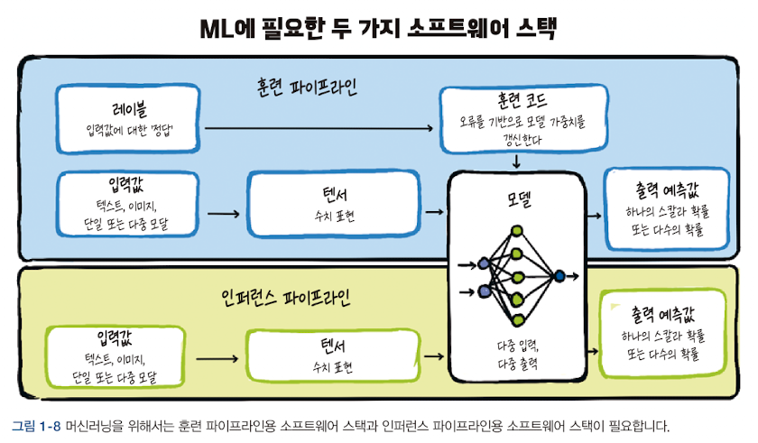
이미지 해설 (pre032) : 그림 1-8 "ML에 필요한 두 가지 소프트웨어 스택" 입니다.
- 훈련 파이프라인 : 입력값(텍스트·이미지, 단일 또는 다중 모달) + 레이블(입력값에 대한 정답) → 텐서(수치 표현) → 모델 → 출력 예측값(하나의 스칼라 확률 또는 다수의 확률). 이때 훈련 코드가 오류를 기반으로 모델 가중치를 갱신합니다.
- 인퍼런스 파이프라인 : 입력값 → 텐서(수치 표현) → 모델(다중 입력, 다중 출력) → 출력 예측값. 정답(레이블)도 없고 가중치를 고치지도 않습니다.
한 줄 요약: 훈련은 가중치를 고치는 쪽, 인퍼런스는 고쳐진 가중치를 쓰기만 하는 쪽입니다. 앞의 7명 예시에서 슬라이더를 움직이던 때가 훈련, 정해진 값으로 새 사람을 판정하던 때(pre009)가 인퍼런스입니다.
- 첫째는 대량의 데이터에 기반해서 모델의 가중치 weight 를 조정하는 훈련 파이프라인 training pipeline 입니다.
- ML 모델은 숫자만 처리할 수 있기 때문에, 훈련 파이프라인은 입력 데이터를 텐서 tensor 라고 부르는 다차원 수치로 변환합니다.
- 훈련을 마친 모델에 새로운, 즉 훈련 데이터에 없는 데이터를 입력하면 훈련 과정에서 배운 능력에 따라 특정한 출력을 생성합니다.
- 모델에 뭔가를 입력해서 출력을 생성하는 것을 예측 prediction 혹은 인퍼런스 inference 라고 표현하기도 합니다.
- 모델을 실행해서 출력을 얻는 행동을 inference 라고 부르는 것은 AI 모델의 주된 용도가 분류 classification 였던 시절의 유물이라고 할 수 있습니다. inference 와 reasoning 을 둘 다 ‘추론’ 이라고 부르는 탓에 혼동이 생기는 경우가 많은데, 이 번역서에서는 reasoning (1.2.1절과 4장 참고)을 ‘추론’으로 옮기기로 하고 inference 는 소리를 딴 ‘인퍼런스’로 표기하거나 문맥에 따라 ‘모델 실행’ 등으로 옮기기로 합니다.
| 구분 | Inference (인퍼런스 / 실행) | Reasoning (리즈닝 / 논리적 사고) |
|---|---|---|
| 본질 | 결과 중심: 이미 학습된 패턴을 이용해 빠르고 즉각적으로 정답을 도출 | 과정 중심: 문제를 분해하고 논리적 근거를 짚어가는 생각의 과정 |
| 목적 | 새로운 데이터에 대한 예측 및 응답 생성 | 복잡한 문제의 해결, 단계별 검증, 전략 수립 |
| 속도 | 매우 빠름 (단일 연산 경로) | 느림 (여러 번의 내부 생각 단계가 필요함) |
| 사례 | 이미지 분류, 챗봇의 즉각적인 답변 생성 | 복잡한 수학 문제 풀이, 코딩 작성, 논리적 증명 |
[보강] 이 표는 번역서의 용어 정리를 쉽게 대비한 것이어서 "둘이 서로 배타적인 실행 모드"는 아닙니다. 단계별로 생각하는 모델(reasoning 능력을 가진 모델)도 답을 만들어 낼 때는 인퍼런스로 실행됩니다. 또 인퍼런스도 출력이 길거나 검색·도구를 쓰면 오래 걸릴 수 있어, '인퍼런스는 항상 빠르고 reasoning은 항상 느리다'는 절대 규칙으로 읽지 마세요. 표는 "모델 실행(인퍼런스)"과 "논리적 사고(reasoning)"라는 두 단어를 헷갈리지 말자는 용어 구분으로 받아들이면 됩니다.
- 실제 환경에서 AI가 인간들과 잘 어울려서 작동하는지 검증하는 과정과 AI 시스템의 성능을 지속적이고 능동적으로 모니터링하는 과정도 필수라고 합니다.
머신러닝 소개 ② 작동 방식, 인퍼런스, 전이학습과 미세조정
▶ 어떻게 작동할까? 머신러닝의 작동 방식
규칙 대신 데이터 — 고양이 사진 분류
- 일반적으로 컴퓨터 프로그램은 다수의 규칙 rule 들로 구성됩니다.
- 주어진 이미지가 고양이 사진이라는 것을 컴퓨터가 어떻게 판단할 수 있을까요?
- 머신러닝은 이 문제를 데이터에 기반해서 해결합니다.
- 고양이 사진을 예로 들면 신경망에 고양이, 개, 기타 모델이 인식하기를 원하는 사물의 사진에 레이블을 붙인 대량의 이미지 데이터로 모델을 훈련합니다.
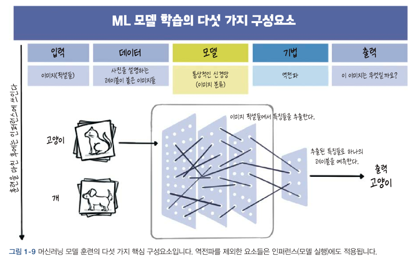
이미지 해설 (pre033) : 책의 그림 1-9 "ML 모델 학습의 다섯 가지 구성요소" 입니다.
- 입력 : 이미지(픽셀들)
- 데이터 : 사진을 설명하는 레이블이 붙은 이미지들
- 모델 : 통상적인 신경망(이미지 분류)
- 기법 : 역전파
- 출력 : "이 이미지는 무엇일까요?" → 고양이 / 개
그림 오른쪽에는 "훈련을 마친 후에는 인퍼런스에 쓰인다 — 이미지 픽셀들에서 특징들을 추출한다 → 추출된 특징들로 하나의 레이블을 예측한다"가 있고, 캡션은 "역전파를 제외한 요소들은 인퍼런스(모델 실행)에도 적용됩니다" 입니다. 즉 입력·데이터(훈련 때)·모델·출력은 사용할 때도 쓰이지만, 가중치를 고치는 역전파는 훈련 때만 필요합니다.
⚠ 바로잡기(두 맥락을 분리해서 읽기): 이 그림의 '기법' 칸은 역전파입니다. 즉 그림 1-9가 설명하는 것은 처음부터 훈련하는 경우입니다. 반면 이 절 뒤쪽 "다섯 가지 특징" 표(아래)의 '기법' 항목은 전이학습(기초 모델 미세조정)입니다. 두 곳의 '기법'은 서로 다른 상황을 가리키므로 같은 줄에 놓고 읽으면 안 됩니다. ① 그림 1-9 = 처음부터 훈련(기법: 역전파), ② 본문 표 = 현실적인 방법인 전이학습(기법: 전이학습).
훈련 — 가중치를 조정한다
- 머신러닝 모델에는 가중치라고 불리는 매개변수들이 있습니다. 가중치 값들은 훈련이라는 과정에서 조정됩니다.
- 훈련 과정에서는 입력에 대한 신경망의 출력을 평가해서 바람직한 출력이 나오도록 가중치들을 조정하는데요.
- 이미지의 경우 입력에 있는 레이블과 동일한 레이블을 출력했는지에 따라 가중치들을 적절히 갱신합니다.
- 가중치 조정에는 역전파 backpropagation 라는 기법이 쓰이는데, 다소 세부적인 주제이므로 이 책에서는 더 다루지 않습니다.
- 이런한 과정을 모델이 최대한 정확한 결과를 낼 때까지 반복합니다.
- 모델이 완벽하지는 않으며, 일부 이미지는 레이블이 잘못 붙었거나 모호할 수 있으므로 100% 정확도에는 도달하지 못할 수 있습니다.
- 그렇다고 훈련을 무한 반복해야 하는 것은 아닙니다. 정확도가 더 이상 개선되지 않으면 가중치 조정을 멈추면 되니까요.
앞의 7명 예시에서 "오답이 줄어드는 방향으로 가중치를 반복해서 고친다"는 것이 그대로 고양이 사진 분류에도 적용됩니다. 다만 7명 예시의 가중치는 2개였고, 사진 분류 모델은 가중치가 수백만~수십억 개입니다.
[보강] "정확도가 더 이상 개선되지 않으면 멈춘다"에서 한 가지를 더하면, 실무에서는 훈련 데이터의 점수만 보지 않고, 훈련에 쓰지 않은 검증 데이터의 성능이 더 오르지 않을 때 멈춥니다(훈련 점수만 계속 오르고 새 데이터에서 나빠지는 과적합을 막기 위해). 이 내용은 뒤 1장 본문(데이터 분할)에서 다시 나옵니다.
배포 후 사용 — 인퍼런스
- 훈련을 마치면 모델을 배포해서 애플리케이션 사용자가 사진을 업로드하게 합니다.
- 모델은 이전에는 본 적이 없는 이미지를 입력받아서 신경망으로 그 이미지를 잘 설명하는 레이블(고양이, 개 등)을 ‘인퍼런스’ 혹은 ‘예측’ 합니다.
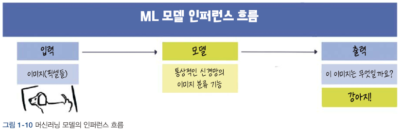
이미지 해설 (pre034) : 그림 1-10 "ML 모델 인퍼런스 흐름" 입니다. 입력(이미지 픽셀들) → 모델(통상적인 신경망의 이미지 분류 기능) → 출력("이 이미지는 무엇일까요?" → "강아지!"). 훈련 때와 달리 정답이 없고 가중치도 바뀌지 않으며, 입력이 모델을 지나 레이블로 나오는 한 방향 흐름만 있습니다.
- 이 예측 결과를 바탕으로 애플리케이션은 귀여운 고양이 사진을 보고 싶어 하는 사용자에게 해당 이미지를 보여줄지 말지를 결정하고요.
- 이처럼, 훈련된 머신러닝 모델을 훈련의 목적(이를테면 사진에 담긴 것이 무엇인지 분류하는 것)에 맞게 사용하는 것을 인퍼런스라고 부릅니다.
(모델의 예측 자체와 "그 사진을 보여줄지 말지"라는 앱의 결정은 서로 다른 단계입니다.)
인간 피드백과 RLHF
- 모델의 결과에 사람이 피드백을 제공할 수 있는 경우도 많은데요. 피드백은 암묵적으로 제공할 수도 있고 명시적으로 제공할 수도 있습니다.
- 예를 들어 관심 있는 사진을 더 오래 살펴보는 것은 암묵적인 피드백이고 ‘좋아요’ 버튼을 클릭하는 것은 명시적인 피드백입니다.
- 이런 종류의 인간 피드백은 강화학습 reinforcement learning 이라는 기법을 이용해서 모델을 좀 더 훈련하는 데 쓰입니다.
- 최근 AI 모델이 훨씬 더 똑똑해진 데에는 바로 이런 인간 피드백 기반 강화학습 reinforcement learning from human feedback RLHF 이 핵심적인 역할을 했습니다.
[보강] 사용자의 체류 시간이나 '좋아요' 데이터를 모은다고 해서 자동으로 RLHF가 되는 것은 아닙니다. 이런 신호는 추천·순위 평가나 일반 지도학습에도 쓰입니다. 대표적인 RLHF(예: InstructGPT 논문)는 ① 사람이 쓴 모범 답변으로 먼저 추가 훈련 → ② 사람이 여러 답변의 선호 순위를 매김 → ③ 그 선호를 보상 신호로 삼아 강화학습으로 더 훈련하는 단계를 거칩니다. 또 "AI가 똑똑해진 이유"를 RLHF 하나로만 설명하는 것은 입문용 단순화입니다.
처음부터 훈련 vs 전이학습 · 미세조정
- 그런데 머신러닝 모델을 이처럼 처음부터 훈련하려면 일반적으로 아주 많은 데이터가 있어야 합니다.
- 사진을 잘 분류할 수 있으려면 모델의 가중치가 수백만에서 수십억 개는 되는데, 그런 모델을 훈련하려면 대략 그만큼의 예시 데이터가 필요합니다.
- 다행이도, 고양이 사진을 식별하기 위해 수백만 장의 레이블이 붙은 고양이 사진이 꼭 필요한 것은 아닙니다.
- 전이학습 transfer learning 을 이용하면 다른 이미지 데이터셋으로 이미 훈련된 모델, 즉 사전훈련 모델 pre-trained model 에 고양이 식별 능력만 추가로 학습시킬 수 있는데요.
- 이런 용도로는 흔히 기초 모델 foundation model 이라고 부르는 범용 LLM 을 사용합니다.
- 세상에는 비용과 크기, 능력이 다양한 여러 가지 기초 모델이 나와 있습니다.
- 더 나아가서, 기초 모델의 모든 가중치를 갱신할 필요 없이 우리의 목적에 맞게 적은 수의 가중치 일부만 갱신하면 된다는 점도 매력적인데요.
- 이런 기법을 미세조정 find-tuning 이라고 부릅니다.
⚠ 바로잡기(세 군데): ① "가중치가 수백만~수십억 개면 대략 그만큼의 예시가 필요"는 일반 법칙이 아닙니다. 필요한 데이터 양은 과제·데이터 품질·모델 구조·사전훈련 여부에 따라 달라지며, 가중치 수와 예시 수가 1:1로 대응하지는 않습니다. "처음부터 큰 모델을 훈련하려면 많은 데이터와 연산이 필요하다" 정도로 읽으세요. ② "기초 모델로 범용 LLM을 사용"은 이 이미지 분류 예시와 맞지 않습니다. 바로 아래 그림 1-11이 기초 모델을 "인터넷 이미지로 훈련된 이미지 분류 모델"로 그리고 있듯이, 고양이 식별에는 사전훈련된 이미지 모델을 씁니다. ③ "미세조정 = 일부 가중치만 갱신"은 이 그림(동결 + 새 출력층 학습)의 맥락에서는 성립하지만 일반화하면 부정확합니다. 미세조정에는 전체 가중치를 갱신하는 방식도 있고, LoRA 같은 PEFT처럼 원래 가중치는 고정하고 추가로 붙인 작은 값만 학습하는 방식도 있습니다. 표기 "find-tuning"은 "fine-tuning"의 오타입니다.
- 아래는 기초 모델을 사전훈련하는 과정이고, ← 최초 과정
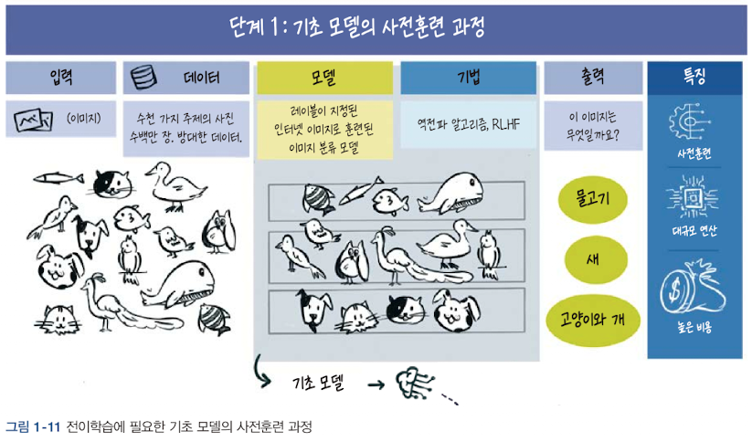
이미지 해설 (pre035) : 그림 1-11 "전이학습에 필요한 기초 모델의 사전훈련 과정" (단계 1)입니다.
- 입력 : (이미지)
- 데이터 : 수천 가지 주제의 사진 수백만 장, 방대한 데이터
- 모델 : 레이블이 지정된, 인터넷 이미지로 훈련된 이미지 분류 모델
- 기법 : 역전파 알고리즘, RLHF (그림 표기 그대로)
- 출력 : "이 이미지는 무엇일까요?" → 물고기 / 새 / 고양이와 개 …
- 특징 : 사전훈련, 대규모 연산, 높은 비용
즉 기초 모델은 한 번 비싸게 만들어 두는 토대입니다. 처음부터 하는 훈련이라 대량 데이터·큰 연산·높은 비용이 듭니다.
[보강] 이 그림의 '기법' 칸에 적힌 RLHF는 이미지 분류 모델의 사전훈련에는 비표준적인 표기입니다. RLHF는 보통 언어 모델을 사람 선호에 맞게 맞추는 사전훈련 이후 단계에서 쓰이고, 대규모 사전훈련 자체는 정답 레이블이나 텍스트의 다음 단어 같은 목표로 역전파를 통해 이뤄집니다. 이 그림에서는 "역전파 알고리즘"이 핵심 기법이라고 읽으면 됩니다.
- 아래는 위에서 출력된 기초 모델을 우리의 목적에 맞게 미세조정하는 과정입니다.
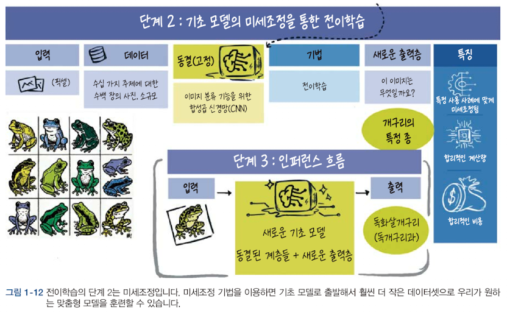
이미지 해설 (pre036) : 그림 1-12 "전이학습의 단계 2는 미세조정" 입니다. 왼쪽 단계 2(미세조정): 데이터는 "수십 가지 주제에 대한 수백 장의 사진, 소규모", 모델은 "이미지 분류 기능을 위한 합성곱 신경망(CNN)", 기법은 전이학습입니다. 그림 아래 "새로운 기초 모델 = 동결된 계층들 + 새로운 출력층", 특징은 "특정 사용 사례에 맞게 미세조정됨". 오른쪽 단계 3(인퍼런스 흐름): 입력 "이 이미지는 무엇일까요? 개구리의 특정 종" → 출력 독화살개구리(독개구리과), 합리적인 계산량·합리적인 비용입니다. 캡션: "미세조정 기법을 이용하면 기초 모델로 출발해서 훨씬 더 작은 데이터셋으로 우리가 원하는 맞춤형 모델을 훈련할 수 있습니다."
여기서 핵심은 동결(고정) 입니다. 앞쪽 계층(이미 배운 일반적인 시각 특징)은 얼려서 바꾸지 않고, 맨 끝에 붙인 새 출력층(개구리 종 목록)만 학습합니다. 이것이 바로 본문이 말하는 "적은 수의 가중치 일부만 갱신"과 같은 맥락입니다.
flowchart LR
A["단계 1 사전훈련<br/>수천 주제 사진 수백만 장<br/>대규모 연산 높은 비용"] --> B["기초 모델<br/>인터넷 이미지 분류 모델"]
B --> C["단계 2 미세조정<br/>앞쪽 계층 동결 + 새 출력층<br/>수십 주제 수백 장 소규모"]
C --> D["단계 3 인퍼런스<br/>독화살개구리 등 종 분류<br/>합리적 연산 비용"]- 이 결과로 만들어지는 모델은 우리가 해결하려는 문제에 초점을 맞춘 새로운 출력층 output layer (출력 계층)이 추가된 형태입니다.
[보강] "새 출력층 추가"는 전이학습·미세조정의 여러 방식 중 하나입니다(책의 그림이 보여 주는 방식). 앞쪽 계층까지 일부 풀어서 함께 학습하는 방식도 흔합니다.
머신러닝 모델의 다섯 가지 핵심 특징
- 머신러닝 모델의 몇 가지 핵심적인 특징을 짚어보겠습니다. 머신러닝 활용 사례를 접할 때마다 이 다섯 가지 특징을 파악해 보면 쉽게 이해할 수 있습니다.
- 입력
- 모델의 입력은 이미지(정확히는 이미지의 픽셀들)입니다.
- 데이터
- 모델 훈련에 필요한 데이터는 실제 사진과 그림 등을 담은 이미지들과 그 이미지에 무엇이 있는지 알려주는 레이블들의 집합입니다.
- 모델
- 합성곱 신경망 convolutional neural network (CNN) 처럼 이미지 분류를 아주 잘 수행하는 수학 함수입니다.
- 기법
- 모델에는 수백만 개의 매개변수가 있는데, 우리는 목적(고양이 식별)에 특화된 수백만 개의 레이블 지정 이미지를 구하기는 아무래도 어렵겠지요.
- 전이학습을 이용해서 기초 모델을 미세조정하는 것이 현실적인 방안입니다.
- 출력
- 이미지에 대한 출력은 제한된 어휘 목록 중 하나의 단어(고양이, 개, 호랑이 등)입니다.
| 다섯 가지 | 고양이 이미지 분류에서의 값 | 그림 1-9(pre033)와의 차이 |
|---|---|---|
| 입력 | 이미지의 픽셀들 | 같음 |
| 데이터 | 사진·그림과 정답 레이블 | 같음 (단, 전이학습에서는 훨씬 소규모) |
| 모델 | CNN 같은 이미지 분류 수학 함수 | 그림은 '통상적인 신경망' |
| 기법 | 전이학습(기초 모델 미세조정) | 그림 1-9는 '역전파'(처음부터 훈련) |
| 출력 | 제한된 어휘 중 하나(고양이, 개, 호랑이…) | 같음 |
AI > ML > DL ≥ GenAI ≥ LLM 소개
▶ AI > ML > DL ≥ (GenAI) ≥ LLM 소개 : 밑바닥부터 만들면서 배우는 LLM 책 (25년 9월) - Link , 원서
서지 메모: 본문의 "25년 9월"은 한국어 번역서 표기이며 실제 출간일은 확인 못함(링크 본문을 열지 못함). 원서는 Sebastian Raschka의 Build a Large Language Model (From Scratch)(Manning)이고, 출판사 페이지 기준 2024년 9월 출간입니다. 번역서와 원서의 날짜를 혼동하지 마세요.
- 인공지능 분야 : AI > ML > DL ≥ (GenAI) ≥ LLM
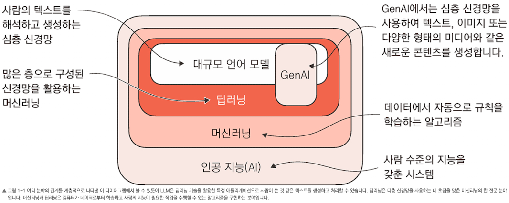
이미지 해설 (pre037) : 책의 그림 1-1, 여러 분야의 관계를 계층적으로 나타낸 겹친 원 그림입니다(바깥 → 안쪽).
- 인공 지능(AI) : 사람 수준의 지능을 갖춘 시스템
- 머신러닝(ML) : 데이터에서 자동으로 규칙을 학습하는 알고리즘
- 딥러닝 : 많은 층으로 구성된 신경망을 활용하는 머신러닝
- GenAI : 심층 신경망을 사용하여 텍스트, 이미지 또는 다양한 형태의 미디어와 같은 새로운 콘텐츠를 생성
- 대규모 언어 모델(LLM) : 사람의 텍스트를 해석하고 생성하는 심층 신경망
캡션 요지: "LLM은 딥러닝 기술을 활용한 특정 애플리케이션으로 사람이 쓴 것 같은 텍스트를 생성하고 처리할 수 있습니다. 딥러닝은 다층 신경망을 사용하는 데 초점을 맞춘 머신러닝의 한 전문 분야입니다."
flowchart TB
AI["AI 인공지능<br/>사람 수준 지능을 갖춘 시스템"] --> ML["ML 머신러닝<br/>데이터에서 규칙을 자동 학습"]
ML --> DL["DL 딥러닝<br/>많은 층의 신경망"]
DL --> GEN["GenAI 생성형 AI<br/>텍스트 이미지 등 새 콘텐츠 생성"]
GEN --> LLM["LLM 대규모 언어 모델<br/>텍스트를 해석하고 생성"][보강] 이 제목의>,≥기호는 숫자 크기를 비교하는 수식이 아니라 "어느 분야가 어느 분야를 포함하는가"를 나타내는 학습용 도식 기호입니다. 모든 모델에 적용되는 엄밀한 순서로 외우지 마세요. 예를 들어 모든 딥러닝 모델이 생성형인 것은 아니고(이미지 분류기는 딥러닝이지만 생성형이 아님), 모든 언어 모델이 챗봇인 것도 아닙니다.
- 사전 훈련 (pretraining) : LLM의 첫 번째 훈련 단계 → 베이스 모델 or 파운데이션 모델 ⇒ 추가 훈련 : 미세 튜닝
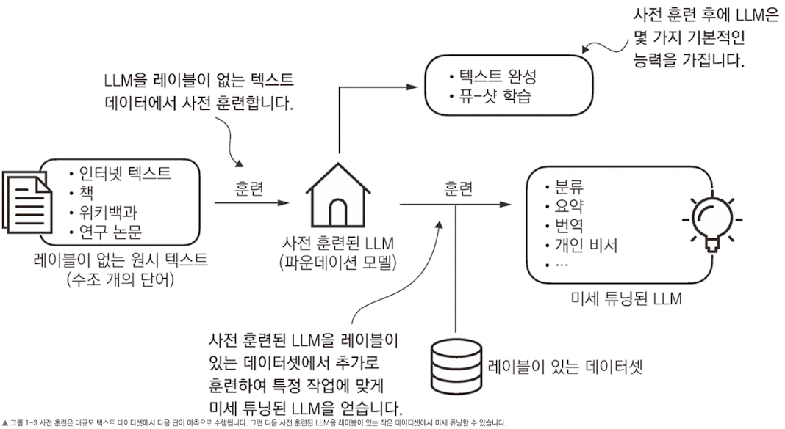
이미지 해설 (pre038) : 책의 그림 1-3. 왼쪽에 레이블이 없는 원시 텍스트(수조 개의 단어) — 인터넷 텍스트, 책, 위키백과, 연구 논문 — 를 넣어 훈련하면 사전 훈련된 LLM(파운데이션 모델) 이 되고, 이 모델은 텍스트 완성과 퓨-샷 학습(예시 몇 개만 보여 줘도 따라 하기) 같은 기본 능력을 갖습니다. 여기에 레이블이 있는 데이터셋으로 추가 훈련(미세 튜닝)하면 분류, 요약, 번역, 개인 비서 같은 특정 작업용 LLM이 됩니다. 캡션: "사전 훈련은 대규모 텍스트 데이터셋에서 다음 단어 예측으로 수행됩니다. 그런 다음 사전 훈련된 LLM을 레이블이 있는 작은 데이터셋에서 미세 튜닝할 수 있습니다."
[보강] 사전 훈련의 "다음 단어 예측"은 사람이 정답표를 따로 붙이지 않아도, 텍스트 자체에서 "앞 글을 주고 다음을 맞히게" 하여 학습 목표를 만들 수 있다는 점이 핵심입니다. 실제 모델이 맞히는 단위는 단어가 아니라 토큰(단어 일부일 수 있음)입니다. 이는 앞의 pre036(이미지 기초 모델의 사전훈련 → 미세조정)과 같은 "먼저 크게 학습한 뒤 목적에 맞게 추가 학습"이라는 패턴이 LLM에서도 반복되는 것입니다.
- LLM 구현 3단계
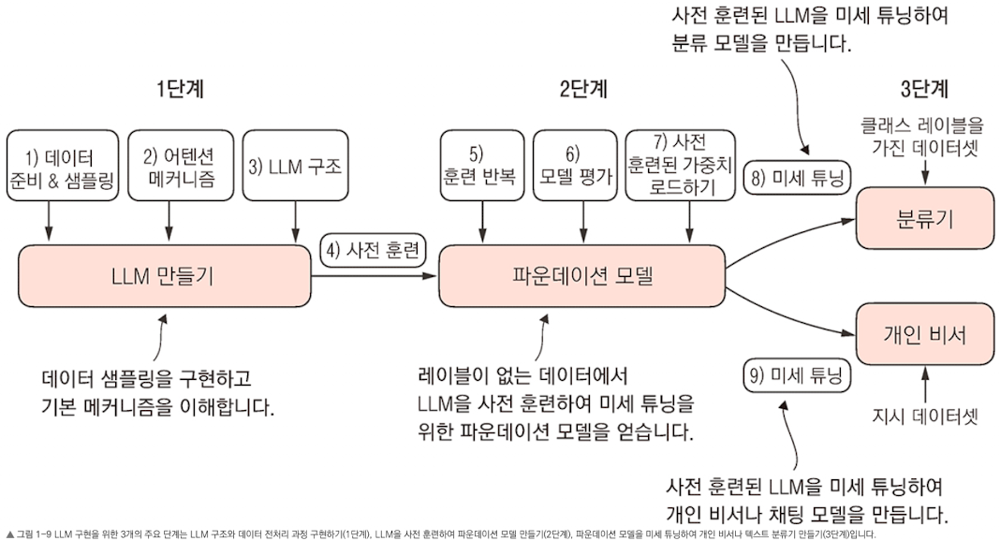
이미지 해설 (pre039) : 책의 그림 1-9, LLM을 직접 구현하는 큰 흐름 3단계입니다.
- 1단계 (구현) : 1) 데이터 준비 & 샘플링 → 2) 어텐션 메커니즘 → 3) LLM 구조. "데이터 샘플링을 구현하고 기본 메커니즘을 이해합니다."
- 2단계 (사전 훈련) : 4) 사전 훈련 LLM 만들기 → 5) 훈련 반복 → 6) 모델 평가 → 7) 사전 훈련된 가중치 로드하기. "레이블이 없는 데이터에서 LLM을 사전 훈련하여 미세 튜닝을 위한 파운데이션 모델을 얻습니다."
- 3단계 (미세 튜닝) : 8) 미세 튜닝 — 클래스 레이블을 가진 데이터셋 → 분류기; 9) 미세 튜닝 — 지시 데이터셋 → 개인 비서(챗 모델). "사전 훈련된 LLM을 미세 튜닝하여 개인 비서나 채팅 모델을 만듭니다."
번호는 책에서 배우는 순서(1)~9))일 뿐이고, "사전 훈련을 마쳤다 = 서비스 운영이 끝났다"는 뜻이 아닙니다.
- AI 모델 훈련 vs 추론
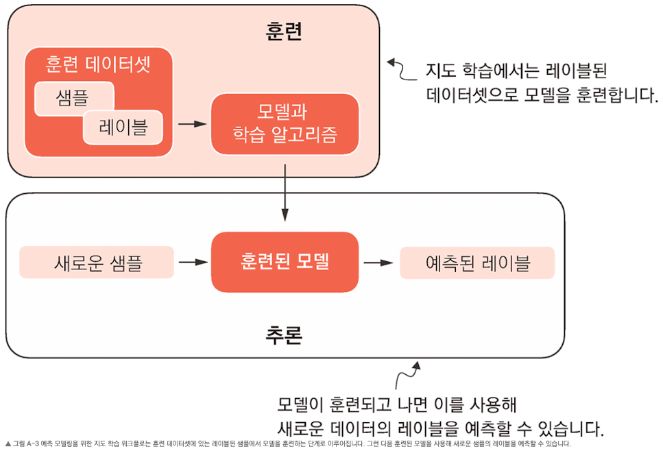
이미지 해설 (pre040) : 책의 그림 A-3, 지도학습의 전체 흐름입니다. 훈련: 레이블된 훈련 데이터셋(샘플 + 레이블)을 모델과 학습 알고리즘에 넣어 훈련된 모델을 얻습니다. 추론: 훈련이 끝난 모델에 새로운 샘플을 넣으면 예측된 레이블이 나옵니다. 캡션: "모델이 훈련되고 나면 이를 사용해 새로운 데이터의 레이블을 예측할 수 있습니다."
여기서 그림의 "추론"은 바로 앞(그림으로 배우는 생성형 AI 책)에서 말한 인퍼런스(inference, 모델 실행) 와 같은 뜻입니다. 번역서마다 inference를 '추론'으로 옮기기도 하고, reasoning(논리적 사고)을 '추론'으로 옮기기도 하므로, 이 학습 문서에서는 inference = 인퍼런스/모델 실행, reasoning = 논리적 추론으로 구분해 적습니다. 또 이 그림은 지도학습(레이블이 있는 경우)의 개요이므로 모든 LLM 사전훈련에 수작업 레이블이 필요하다는 뜻은 아닙니다.
이 파트 한 장 정리
| 용어 | 한 줄 설명 |
|---|---|
| 가중치(weight) | 입력을 얼마나 중요하게 볼지 정하는 숫자. 학습으로 정해지며 '모델의 두뇌' |
| 역치(문턱값) | 합계가 이 값을 넘으면 켜지는 기준 (예시에서는 0.5) |
| 순전파 / 역전파 | 입력→출력으로 계산 / 출력의 오차를 거꾸로 전파해 각 가중치의 책임 계산 |
| 훈련 vs 인퍼런스 | 가중치를 고치는 단계 vs 고쳐진 가중치로 새 입력의 답을 계산하는 단계 |
| 처음부터 훈련 vs 전이학습 | 큰 데이터·연산으로 모든 것을 배움 vs 이미 배운 모델에 새 능력만 추가 |
| 기초 모델(파운데이션 모델) | 폭넓은 데이터로 사전훈련되어 여러 작업에 적응시킬 수 있는 토대 모델 |
| 미세조정(fine-tuning) | 사전훈련 모델을 우리 목적에 맞게 추가 학습 (동결 + 새 출력층은 그 한 방식) |
| AI > ML > DL ≥ GenAI ≥ LLM | 분야의 포함 관계를 보여 주는 도식 |
CH1. MLOps와 ML 엔지니어링 시작 — 들어가며
1장 한 줄 소개 — 머신러닝 수명주기, 필수 MLOps 기술, 그리고 프로덕션 머신러닝 플랫폼을 처음부터 구축하는 데 필요한 기본 컴포넌트를 소개합니다.
▶ 들어가며
책은 독자에게 이렇게 묻습니다. "프로덕션 수준의 머신러닝 시스템을 자신 있게 구축할 준비가 되셨습니까?" 여기서 프로덕션(production) 은 연습용 노트북이 아니라 실제 고객이 쓰는 운영 환경을 뜻합니다. 이 책은 여러분을 머신러닝 프로젝트를 기획 단계부터 프로덕션 배포까지 성공적으로 이끌 수 있는 유능한 머신러닝 엔지니어로 성장시키는 것을 목표로 하며, 실습 예제와 실제 시나리오를 통해 다음을 배웁니다.
- 프로덕션 환경에서 실제로 작동하는 안정적인 머신러닝 시스템을 설계하고 구현하는 방법
- 문제 정의부터 모니터링까지 이어지는 머신러닝 수명주기 전체
- 견고한 머신러닝 파이프라인과 서비스를 구축하기 위한 핵심 패턴
- 기업 현장에서 실제로 필요로 하는 실용적인 MLOps 역량
- 대규모 머신러닝 시스템을 유지/운영하기 위한 실전 기법
대상 독자와 책의 태도는 다음과 같습니다.
- 모델을 자신 있게 배포(본문 표기 "배고")하고자 하는 데이터 과학자든, 머신러닝 분야로의 전환을 꿈꾸는 소프트웨어 엔지니어든, 프로덕션 역량을 한 단계 높이고자 하는 머신러닝 엔지니어든, 이 책은 실제 머신러닝 시스템을 성공적으로 구축하는 데 필요한 실용적인 지식을 제공합니다. 이론으로 독자를 압도하기보다는 실용적인 접근 방식을 취합니다.
- 각 장은 이전 장을 토대로 구성되며, 필요에 따라 새로운 개념과 도구를 소개합니다. 이 책의 여정은 명확한 흐름을 따릅니다.
- MLOps와 안정적인 시스템 설계의 기초 확립
- 머신러닝 플랫폼 구축 및 머신러닝 파이프라인 오케스트레이션 학습
- 데이터 준비, 모델 훈련(training), 검증(validation)에 대한 심층 탐구
- 모델 서빙(serving), 모니터링, 설명 가능성(explainability) 완전 정복
- 현대적인 LLM 파이프라인 구축 방법
- 이 여정을 구체적으로 살펴보기 위해, 실제 프로덕션 시스템에서 영감을 받은 두 가지 실세계 프로젝트를 함께 진행합니다. 여러분의 프로젝트와는 다소 다를 수 있지만, 여기서 배우는 패턴·실천 방법·기술은 다양한 도메인에 폭넓게 적용할 수 있습니다.
- 무엇보다 중요한 것은, 앞으로 마주칠 어떤 머신러닝 엔지니어링 과제도 자신 있게 해결할 수 있는 역량을 기르게 된다는 점입니다. 지금부터 머신러닝 수명주기를 이해하는 것으로 시작합니다. 머신러닝 수명주기는 프로덕션 머신러닝 시스템을 구축하는 과정을 안내하는 프레임워크(틀)입니다.
⚠ 바로잡기(내부 불일치): 위 문단은 "두 가지 실세계 프로젝트"라고 하지만, 같은 장 뒤쪽(1.4절)에서는 OCR · 추천 · RAG의 세 가지 프로젝트를 소개합니다. 이 파트에서는 그대로 "두 가지"로 옮겼으며, 실제 프로젝트 수는 1.4절 기준으로 읽으시면 됩니다.
1.1 머신러닝 수명주기
1.1. 머신러닝 수명주기
- 머신러닝 프로젝트는 저마다 다르지만, 머신러닝 모델을 개발하고 배포하는 단계는 대체로 비슷합니다. 머신러닝 프로젝트는 본질적으로 반복적인 성격을 띱니다. 저자는 "첫 번째 배포로 프로젝트가 마무리된 사례를 아직 본 적이 없다"고 말합니다.
본문에는 수명주기를 요약한 그림 네 장이 이어서 붙어 있습니다. 첫 번째 그림 아래에는 출처 링크(https://velog.io/@chaujin00/TIL-261018)가 달려 있고, 네 번째 GIF 아래에는 https://ssungz.tistory.com/109 가 달려 있습니다. 두 링크의 글 본문은 직접 열어 확인하지 못했습니다(확인 못함). 아래 해설은 그림 자체를 직접 보고 쓴 것입니다.
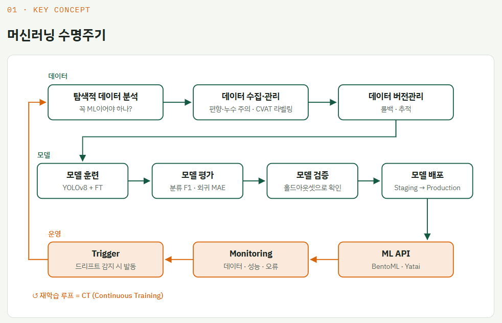
이미지 해설 — 수명주기를 "데이터 → 모델 → 운영" 세 묶음으로 묶은 요약. 맨 위 줄(데이터)은 탐색적 데이터 분석("꼭 ML이어야 하나?") → 데이터 수집·관리(편향·누수 주의, CVAT 라벨링) → 데이터 버전관리(롤백·추적) 입니다. 가운데 줄(모델)은 모델 훈련(YOLOv8 + FT) → 모델 평가(분류는 F1, 회귀는 MAE) → 모델 검증(홀드아웃셋으로 확인) → 모델 배포(Staging → Production) 입니다. 맨 아래 줄(운영)은 ML API(BentoML · Yatai) → Monitoring(데이터·성능·오류) → Trigger(드리프트 감지 시 발동) 이고, 트리거가 맨 처음 단계로 되돌아가는 화살표에 "재학습 루프 = CT(Continuous Training)"라고 적혀 있습니다. 쉬운 풀이: 책 본문의 그림 1.1·1.2를 한 장으로 합치고 도구 이름(CVAT: 라벨링 도구, YOLOv8: 물체 인식 모델, BentoML·Yatai: 모델을 API로 서비스하는 도구)을 덧붙인 글쓴이의 정리본입니다. 이 도구들은 이 그림에만 나오며 본문이 요구하는 것은 아닙니다. 핵심은 "한 번 지나가고 끝나는 직선이 아니라 되돌아오는 고리"라는 점입니다.
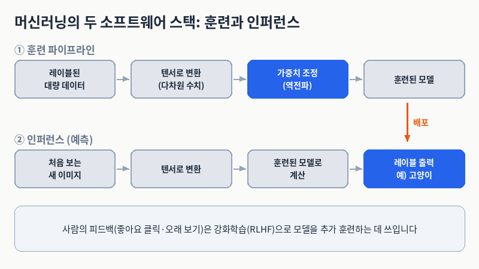
이미지 해설 — 머신러닝에는 소프트웨어 줄기가 두 개 있다는 그림. ① 훈련 파이프라인: 레이블된 대량 데이터 → 텐서(다차원 숫자 배열)로 변환 → 가중치 조정(역전파) → 훈련된 모델. 이것을 "배포"하면 ② 인퍼런스(예측): 처음 보는 새 이미지 → 텐서로 변환 → 훈련된 모델로 계산 → 레이블 출력(예: "고양이"). 맨 아래 메모는 사람의 피드백(좋아요 클릭, 오래 보기)이 강화학습(RLHF)으로 모델을 추가 훈련하는 데 쓰인다고 적습니다. 쉬운 풀이: 훈련은 "공부", 인퍼런스는 "시험 보기(실제 문제 풀기)" 입니다. 공부(훈련)는 한 번에 오래, 시험(인퍼런스)은 요청이 올 때마다 빠르게 일어납니다. 이 두 줄기를 따로 관리해야 한다는 것이 뒤 장들의 출발점입니다. (이 그림은 앞부분 사전 지식 정리를 한 장으로 요약한 것입니다.)
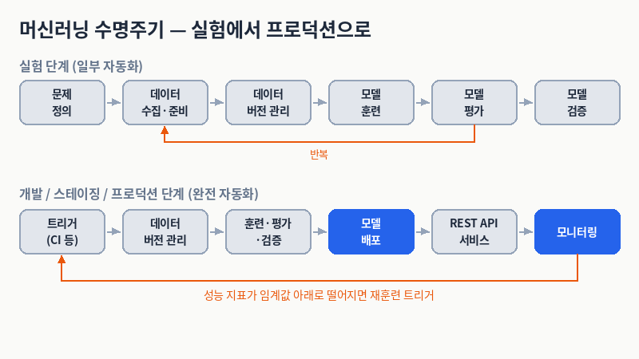
이미지 해설 — 그림 1.1과 1.2를 한 화면에 합친 요약. 위 줄 "실험 단계(일부 자동화)": 문제 정의 → 데이터 수집·준비 → 데이터 버전 관리 → 모델 훈련 → 모델 평가 → 모델 검증, 그리고 평가에서 데이터 수집·준비로 돌아가는 주황색 "반복" 화살표. 아래 줄 "개발 / 스테이징 / 프로덕션 단계(완전 자동화)": 트리거(CI 등) → 데이터 버전 관리 → 훈련·평가·검증 → 모델 배포(파란색) → REST API 서비스 → 모니터링(파란색), 그리고 "성능 지표가 임계값 아래로 떨어지면 재훈련 트리거"라는 화살표가 맨 앞 트리거로 돌아갑니다. 쉬운 풀이: 위 줄은 "사람이 만지작거리며 방법을 찾는 단계", 아래 줄은 "찾아낸 방법을 기계가 알아서 돌리는 단계"입니다. 파란 두 칸(배포·모니터링)이 아래 줄에서 새로 생긴 것입니다.
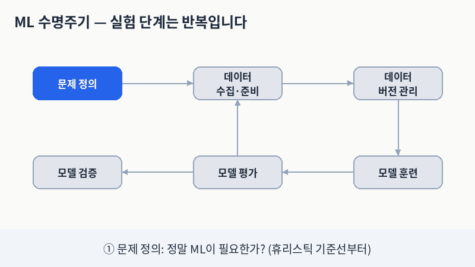
이미지 해설 — 실험 단계가 도는 모양을 보여 주는 GIF. 화면에는 문제 정의 → 데이터 수집·준비 → 데이터 버전 관리 → 모델 훈련 → 모델 평가 → 모델 검증이 원형으로 배치되어 있고, 모델 평가에서 데이터 수집·준비로 올라가는 화살표가 있습니다. 하단 자막은 "① 문제 정의: 정말 ML이 필요한가? (휴리스틱 기준선부터)"입니다. 단계가 차례로 강조되는 애니메이션으로 보이며, 직접 확인한 것은 첫 화면 한 장입니다. 나머지 프레임의 내용은 화면에서 판독하지 못함. 쉬운 풀이: 책이 말하는 "순서대로 가지만 되돌아오는" 성질을 시각화한 것입니다. 시작은 항상 "정말 ML이 필요한가?"라는 질문입니다.
한눈에 보는 전체 수명주기 (실험 → 개발/스테이징/프로덕션 → 반복)
아래 그림은 이 파트(1.1.1~1.1.2)에서 풀어 쓰는 모든 단계를 한 장에 모은 것입니다. 이후 절을 읽다가 길을 잃으면 여기로 돌아오세요.
flowchart LR
subgraph EXP["실험 단계 - 일부 자동화"]
A["문제 정의"] --> B["탐색적 데이터 분석"]
B --> C["데이터 수집과 준비"]
C --> D["데이터 버전 관리"]
D --> E["모델 훈련"]
E --> F["모델 평가"]
F --> G["모델 검증"]
F -. "기준 미달" .-> C
F -. "다른 구조 시도" .-> E
end
subgraph PROD["개발 스테이징 프로덕션 - 완전 자동화"]
T["트리거 CI 또는 일정"] --> P["자동화 파이프라인"]
P --> H["모델 배포"]
H --> I["REST API 서비스"]
I --> J["성능 모니터링"]
J -- "임계값 아래로 하락" --> T
end
G --> T1.1.1 실험 단계 — 소개
▶ 1.1.1 실험 단계
소개
- 대부분의 머신러닝 프로젝트는 수많은 시행착오를 동반하는 지속적인 실험의 연속입니다. 이러한 반복 실험이 필요한 이유는, 올바른 접근 방식을 찾기 위해서는 복잡한 데이터를 이해하고 실제 현장의 문제를 효과적으로 해결할 수 있도록 모델을 조정해야 하기 때문입니다.
- 그림 1.1은 머신러닝 수명주기의 실험 단계에서 일반적으로 활용되는 워크플로(workflow, 일의 흐름)를 보여줍니다.
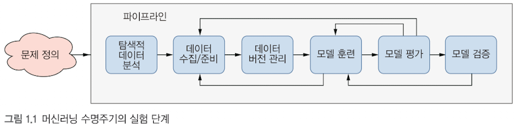
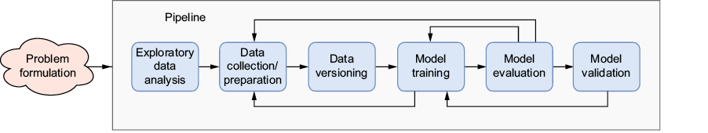
이미지 해설 — 두 장은 같은 그림의 한국어판과 영문 원서판입니다. 왼쪽 구름 모양 "문제 정의(Problem formulation)"에서 화살표가 큰 상자 "파이프라인(Pipeline)"으로 들어갑니다. 상자 안에는 탐색적 데이터 분석(Exploratory data analysis) → 데이터 수집/준비(Data collection/preparation) → 데이터 버전 관리(Data versioning) → 모델 훈련(Model training) → 모델 평가(Model evaluation) → 모델 검증(Model validation) 이 차례로 있습니다. 그리고 상자 위·아래로 되돌아가는 화살표가 있습니다. 직접 확인한 바로는 ① 모델 훈련에서 데이터 수집/준비로(아래쪽), ② 모델 평가에서 모델 훈련으로(위쪽 작은 고리), ③ 모델 평가에서 데이터 수집/준비로(위쪽 큰 고리), ④ 모델 검증에서 모델 훈련으로(아래쪽)입니다. 쉬운 풀이: 직선 컨베이어 벨트가 아니라 "안 되면 앞으로 돌아가는" 도로입니다. 영문판은 용어 대응을 확인할 때 쓰세요(예: validation = 검증, evaluation = 평가로 구분됩니다).
- 화살표가 단방향을 가리키고 있지만, 실제로는 거의 모든 단계에서 반복이 빈번히 발생합니다. 예를 들어, 모델 훈련과 모델 평가(evaluation) 단계 사이에 있다고 가정해 보겠습니다(본문 문장 그대로). 평가 지표가 기준에 미치지 못한다면, 다른 모델 아키텍처를 검토하거나 더 앞 단계로 돌아가 충분한 고품질 데이터가 확보되었는지 확인할 수도 있습니다. 각 단계는 상당히 복잡할 수 있으며, 단계 간 흐름은 루프를 포함한 비선형 구조인 경우가 많다는 점에 유의하십시오.
- 바로 이런 이유로, 이 모든 단계를 하나의 오케스트레이션 파이프라인으로 통합합니다. 오케스트레이션 파이프라인을 구성하면 처음부터 자동화가 내재되므로, 추적하기 어려운 실수를 저지를 가능성을 벗어날 수 있습니다.
[보강] 자동화는 실수를 줄이지만 틀린 로직을 자동으로 반복할 수도 있습니다. 그래서 입력 검사, 실행 로그, 실패 처리도 파이프라인에 같이 넣어야 합니다.
flowchart LR P0["문제 정의"] --> EDA["탐색적 데이터 분석"] EDA --> COL["데이터 수집과 준비"] COL --> VER["데이터 버전 관리"] VER --> TRN["모델 훈련"] TRN --> EVA["모델 평가"] EVA --> VAL["모델 검증"] TRN -. "데이터 다시 확인" .-> COL EVA -. "다른 구조 검토" .-> TRN EVA -. "데이터 품질 의심" .-> COL VAL -. "기대에 못 미침" .-> TRN
위 그림의 점선이 "되돌아가기"입니다. 이후 절에서 각 상자를 본문 순서대로(문제 정의 → 데이터 수집·준비 → 데이터 버전 관리 → 모델 훈련 → 모델 평가 → 모델 검증) 풀어 봅니다. (참고: 그림 1.1에는 탐색적 데이터 분석 상자가 있으나, 본문은 이 상자를 별도 항목으로 설명하지 않습니다.)
문제 정의 — 정말 머신러닝이 필요한가
문제 정의
- 머신러닝 프로젝트를 마주했을 때 가장 먼저 던져야 할 질문(본문 표기 "질무")은 "과연 머신러닝을 사용해야 하는가?"입니다. 때로는 휴리스틱(heuristic)으로도 충분히 문제를 해결할 수 있으며, 아무리 유혹적이더라도 이른바 '머신러닝이라는 만능 망치'를 꺼내 들고 싶은 충동은 억눌러야 합니다.
▶ 휴리스틱 설명
본문의 이 토글은 코드블록 표기가 bash로 되어 있지만, 실제 내용은 한국어 설명 + 비교표 + 파이썬 코드 조각이 섞인 교육용 글입니다. 셸에서 실행하는 명령이 아니니 그대로 복사해 실행하지 마세요. 아래에 내용을 구조별로 복원합니다.
휴리스틱이란? 휴리스틱은 데이터로 학습하지 않고 사람이 직접 정한 규칙이나 경험칙으로 문제를 푸는 방식입니다. 최적화를 보장하지는 않지만 "충분히 좋은 답"을 빠르고 싸게 냅니다. 코드로는 대개 if/else, 임계값(기준 숫자), 점수 공식, 조회 테이블(표를 찾아보는 방식)입니다.
머신러닝과 비교하면 이렇습니다. (본문 표 전체)
| 구분 | 휴리스틱 | 머신러닝 |
|---|---|---|
| 규칙의 출처 | 사람이 설계 | 데이터에서 학습 |
| 필요한 것 | 도메인 지식 | 라벨 데이터, 학습·배포·모니터링 인프라 |
| 설명 가능성 | 높음 (규칙을 그대로 읽으면 됨) | 모델에 따라 낮음 |
| 유지보수 | 규칙을 직접 수정 | 재학습, 드리프트 감시 |
| 잘 맞는 경우 | 규칙이 단순하고 안정적 | 규칙이 복잡하고 패턴이 데이터에 있음 |
[보강] 위 표의 "라벨 데이터가 필요하다"는 지도학습에 해당하는 설명입니다. 라벨 없이 학습하는 방법도 있으므로 "ML이면 반드시 수작업 라벨이 필요하다"는 뜻은 아닙니다. 또 드리프트(drift) 는 시간이 지나 실제 데이터의 성질이 학습 때와 달라지는 현상이며, 1.1.2의 "모델 모니터링"에서 다시 나옵니다.
휴리스틱으로 충분한 예시 5가지 (그대로)
① 스팸 필터 초기 버전
def is_spam(subject: str, body: str) -> bool:
keywords = {"무료 당첨", "대출 승인", "클릭하세요"}
return any(k in subject or k in body for k in keywords) or body.count("http") > 5
본문의 설명: "출시 첫날부터 동작하고 디버깅이 쉽습니다."
줄별 풀이:
| 줄 | 뜻 |
|---|---|
def is_spam(subject: str, body: str) -> bool: |
is_spam이라는 함수를 만듭니다. 메일 제목(subject)과 본문(body) 두 문자열을 받아 True(스팸)/False(정상)를 돌려줍니다. |
keywords = {"무료 당첨", "대출 승인", "클릭하세요"} |
스팸에 자주 나오는 문구 세 개를 모은 집합입니다. |
any(k in subject or k in body for k in keywords) |
세 문구를 하나씩(k) 꺼내 "제목에 있거나 본문에 있나?"를 검사하고, 하나라도 맞으면 True입니다. any(...)는 "하나라도 참이면 참"이라는 뜻입니다. |
or body.count("http") > 5 |
또는, 본문에서 "http"라는 글자 덩어리가 5번보다 많이(6번 이상) 나오면 True입니다. |
⚠ 바로잡기(읽을 때 주의): ①body.count("http") > 5는 본문(body)에서만 셉니다(제목은 세지 않음). ② "http"라는 글자 덩어리를 세는 것이라https://…도 한 번씩 셉니다. ③ 이는 "링크 개수"를 정확히 세는 것이 아니라 문자열 등장 횟수 근사입니다. 이 함수는 완성된 스팸 필터가 아니라 첫날 쓸 수 있는 규칙 예시이며, 정상 메일을 잘못 걸러내거나(오탐) 문구를 살짝 바꿔 피하는 스팸은 놓칠 수 있습니다.
② 신용카드 이상 거래 1차 차단
if amount > 5 * user_avg_amount and country != user_home_country:
flag_for_review()
줄별 풀이:
| 줄 | 뜻 |
|---|---|
if amount > 5 * user_avg_amount and country != user_home_country: |
이번 결제 금액(amount)이 이 사용자의 평균 결제액(user_avg_amount)의 5배보다 크고, 그리고(and) 결제 국가(country)가 사용자의 거주 국가(user_home_country)와 다르면. 두 조건이 모두 참이어야 합니다. |
flag_for_review() |
그 거래에 "검토 대상" 표시를 합니다. |
이 코드는 거래를 자동으로 막는다는 것이 아니라, 사람이 다시 살펴볼 대상으로 표시(flag)하는 예시입니다. 책은 이를 "1차 차단"이라 부르지만 코드가 하는 일은 "검토 표시"입니다. 변수(amount등)와 함수(flag_for_review)는 따로 정의해야 하는 설명용 조각이라 이것만으로는 실행되지 않습니다. 예: 평소 월 평균 결제가 4만 원인 사람이 해외에서 25만 원을 결제하면(4만×5=20만 초과 + 국가 다름) 표시됩니다.
③ 수요 예측 기준선(baseline): "내일 판매량 = 지난주 같은 요일 판매량". 계절성이 강한 단순 패턴이면 이것만으로도 꽤 정확합니다.
④ 추천 초기 버전: "최근 7일 가장 많이 팔린 상품 상위 10개", 즉 인기순 추천입니다. 콜드 스타트 상황에서는 이게 정답일 때도 많습니다.
콜드 스타트(cold start)는 신규 사용자나 신상품이라 아직 기록이 부족해서 "이 사람이 뭘 좋아할지" 학습할 재료가 없는 상황입니다. 이럴 땐 개인화 모델보다 "요즘 제일 잘 팔리는 10개"를 보여 주는 편이 단순하고 안전합니다.
⑤ 이탈 고객 알림: "30일간 로그인이 없으면 이탈 위험으로 표시"합니다.
그래서 "ML을 쓸지" 어떻게 판단하나 (그대로)
- 휴리스틱 baseline을 먼저 만들어 측정합니다. 이 baseline이 ML 모델이 넘어야 할 기준선이 됩니다.
- ML 모델이 baseline보다 비즈니스 지표에서 의미 있게 좋아지는지 봅니다. 정확도가 1~2%p 오르는 정도로는 학습 파이프라인, 피처 스토어, 서빙, 모니터링을 운영하는 비용을 정당화하기 어렵습니다.
- 아래 조건이면 ML이 필요한 쪽입니다. - 규칙이 너무 많거나 복잡해서 사람이 다 쓸 수 없는 경우(이미지 인식, 자연어) - 규칙이 시간에 따라 자주 변하는 경우 - 라벨 데이터가 충분히 있는 경우
[보강] "1~2%p로는 비용을 정당화하기 어렵다"는 보편 법칙이 아닙니다. 거래 규모나 실패 비용이 크면 작은 개선도 매우 가치 있을 수 있습니다. 반대로 "고차원 데이터면 무조건 ML 필수"라고 단정할 수도 없습니다. 결국 기준선 대비 사업 지표로 판단하라는 것이 핵심입니다. (feature store 등 용어는 이후 절에서 설명합니다.)
flowchart TD
Q["문제가 들어왔다"] --> H["휴리스틱 기준선을 먼저 만들고 측정"]
H --> C{"ML이 기준선보다 사업 지표에서 의미 있게 좋은가"}
C -- "아니오" --> K["휴리스틱 유지 - 단순하고 싸다"]
C -- "예" --> R{"규칙이 복잡하거나 자주 변하고 라벨이 충분한가"}
R -- "예" --> ML["ML 도입 - 문제를 명확히 정의"]
R -- "아니오" --> K머신러닝이 맞다고 결론 난 뒤: 문제를 명확히 정의
- 반면, 휴리스틱이 효율적인 해결책을 제시할 수 있는 경우도 있지만, 패턴이 복잡하고 비선형적인 고차원 데이터를 다룰 때는 정확한 분석과 예측을 위해 좀 더 정교한 접근 방식이 요구되므로 머신러닝이 필수적입니다.
- 따라서 비즈니스/제품 담당자와 기술 담당자로 구성된 팀이 충분히 고민한 끝에 머신러닝 모델이 최선의 방법이라는 결론을 내렸다면, 첫 번째 단계는 해당 모델이 풀어야 할 문제를 명확히 정의하는 것입니다. 예를 들어, 광학 문자 인식(OCR) 모델은 신분증에서 ID 번호를 추출합니다. 사기 탐지 분야에서는 OCR을 활용해 위양성(false positive)을 최소화하면서 부정 거래를 신속하게 포착할 수 있습니다.
- 위양성(False Positive, 거짓 양성)은 실제로는 음성(질병 없음, 정상, 스팸 아님 등)인데, 검사나 진단, 프로그램 결과는 양성(질병 있음, 이상 있음, 스팸 등)으로 잘못 판정하는 오류를 뜻함. (본문의 각주)
⚠ 덧붙임: OCR은 서류에서 글자·번호를 읽어 내는 구성요소이지, 그 자체가 사기를 판별하거나 위양성을 줄여 준다고 보장하는 기술은 아닙니다. 문제 정의 때는 비즈니스 담당자와 기술 담당자가 목표, 오탐(정상을 사기로)·미탐(사기를 놓침) 비용, 성공 조건을 함께 정해야 합니다.
데이터 수집 및 준비 — 애노테이션, 레이블, 데이터셋
데이터 수집 및 준비
- 다음으로, 모델을 훈련하고 평가하는 데 필요한 데이터를 어디서 확보할지 파악해야 합니다. OCR의 경우에는 유효한 신분증 이미지가 필요합니다. 실제 데이터를 구하기 어렵다면 합성 데이터(synthetic data) 생성을 고려할 수 있습니다. 충분한 훈련 데이터를 수집했다면 애노테이션(annotation)을 통해 레이블(라벨, label) 을 붙여야 합니다(본문 표기 "붙어야").
- 합성 데이터(Synthetic Data)는 실제 환경에서 수집한 데이터가 아니라, 인공지능(AI)과 통계적 기법을 활용해 실제 데이터의 통계적 특성과 패턴을 모방하여 인위적으로 생성한 가상 데이터입니다. (본문의 각주)
- [보강] 합성 데이터는 AI만이 아니라 템플릿·렌더링·통계 시뮬레이션으로도 만들 수 있습니다.
- OCR 예제에서는 애노테이터(annotator, 라벨을 붙이는 사람)가 관심 영역, 즉 ID 번호 주변에 경계 상자(bounding box)를 그린 다음 ID 번호를 직접 입력합니다. 이 모든 과정이 번거롭게 들린다면, 실제로 그렇습니다! 사기 탐지의 경우, 고객 불만이 접수된 거래에 사기 레이블을 붙이는 것뿐만 아니라 도메인 전문가의 도움을 받아 합성 데이터를 생성하는 방안도 고려해 볼 수 있습니다. 레이블이 붙은 데이터가 준비되면, 데이터를 훈련, 검증, 테스트 데이터셋으로 구성해야 합니다.
▶ 애노테이션, 레이블, 데이터셋 설명
이 토글도 bash로 표시되어 있으나 실행용 명령이 아니라 설명 글입니다.
애노테이션으로 레이블을 붙이는 일
머신러닝 모델(지도학습)은 "문제와 정답이 짝지어진 예제"를 많이 보면서 배웁니다. 그런데 신분증 사진이나 거래 내역 같은 원본 데이터에는 정답이 없습니다. 사람이 원본 데이터에 정답을 붙여 주는 작업이 애노테이션이고, 붙인 정답이 레이블(label) 입니다.
OCR 예시에서 애노테이터는 이렇게 작업합니다.
- 신분증 이미지를 연다.
- ID 번호가 있는 부분에 사각형(경계 상자, bounding box)을 그린다. "숫자는 여기에 있다"를 알려 주는 것이다.
- 그 번호를 직접 타이핑한다. "읽으면 이 값이다"를 알려 주는 것이다.
이미지 수천 장에 이 작업을 하니 번거롭고, 책도 "실제로 그렇다"고 인정합니다. 사기 탐지에서는 고객이 "이 결제 내가 안 했어요"라고 신고한 거래에 사기 레이블을 붙이는 방법이 있습니다. 이 경우 별도의 애노테이션 작업 없이 레이블이 생깁니다.
[보강] 신고가 곧 "확정된 사기 판정"은 아닙니다. 신고된 건이 실제로는 사기가 아닐 수도 있고, 신고되지 않은 거래를 무조건 "정상"이라 처리하면 레이블이 치우칠 수 있습니다. 그래서 검토 상태와 판정 시각을 함께 관리하는 편이 안전합니다.
데이터와 레이블 비교 (본문 표 전체)
| 구분 | 데이터(입력 X) | 레이블(정답 y) |
|---|---|---|
| OCR 예시 | 신분증 이미지 | 경계 상자 좌표 + 입력한 ID 번호 |
| 사기 탐지 예시 | 거래 내역(금액, 시간, 장소) | 사기 / 정상 |
| 스팸 필터 예시 | 이메일 본문 | 스팸 / 정상 |
| 역할 | 모델이 보고 판단하는 재료 | 모델이 맞혀야 할 정답 |
| 배포 후 | 항상 존재 | 없는 경우가 많음 |
레이블이 붙은 데이터는 (X, y) 쌍입니다. 모델은 X를 보고 y를 예측하도록 학습하고, 예측과 실제 y의 차이로 성능을 평가합니다. 배포 후에는 실시간 요청에 정답이 없습니다. 나중에 레이블이 도착하기까지 시간이 걸리는 경우가 많아서(사기는 신고까지 며칠), 이 점이 모니터링의 어려움으로 이어집니다.
훈련·검증·테스트 데이터셋 비교 (본문 표 전체)
| 구분 | 훈련(train) | 검증(validation) | 테스트(test) |
|---|---|---|---|
| 비유 | 교과서·문제집 | 모의고사 | 수능 |
| 용도 | 모델이 패턴을 학습 | 하이퍼파라미터 조정, 모델 선택 | 최종 성능 1회 측정 |
| 학습에 사용? | 예 | 아니오(간접적으로 영향) | 절대 아니오 |
| 사용 횟수 | 반복 | 여러 번 | 마지막에 한 번 |
| 통상 비율 | 60~80% | 10~20% | 10~20% |
나누는 이유는 모델이 처음 보는 데이터에서 얼마나 잘하는지 알아야 하기 때문입니다. 훈련 데이터로 평가하면 문제를 외운 학생에게 같은 문제를 내는 것과 같아서 점수가 부풀려집니다(과적합). 검증 데이터로 이것저것 시도해 보다 보면 검증 데이터에도 조금씩 맞춰지므로, 한 번도 손대지 않은 테스트 데이터로 마지막에 정직한 점수를 냅니다. 시계열이나 사기 탐지처럼 시간 순서가 있는 데이터는 무작위로 섞지 않고 시간 순서로 나누는 것이 안전합니다. 미래 정보가 훈련에 새어 들어가면 안 되기 때문입니다.
🟡 표를 읽을 때 주의 (보완)
① 비율은 관행적 예시입니다. 세 비율의 합이 100%가 되기만 하면 되고, 데이터가 아주 많으면 검증·테스트 비율을 더 줄이기도 합니다. 고정 규칙이 아닙니다.
② 표의 "테스트는 한 번"은 최종 평가의 원칙(개발 중 반복 최적화 대상에서 격리)이지 "절대로 두 번 실행하면 안 된다"는 물리적 제한이 아닙니다. 결과를 보고 모델을 고치기 시작하면 테스트셋도 사실상 검증셋이 되어 점수가 부풀 수 있다는 경고입니다. 모델을 크게 바꿨다면 새로운 독립 테스트셋으로 다시 재는 것이 정석입니다.
③ 하이퍼파라미터는 사람이 훈련 전에 정해 주는 설정값(학습 속도, 모델 크기 등)이고, 학습으로 조정되는 파라미터(가중치)와 다릅니다.
④ [보강] 같은 사람·같은 신분증·중복 사진이 훈련과 테스트에 나뉘어 들어가면 점수가 거짓으로 높아집니다. "무엇 단위로 나눌지"(사람 단위, 시간 단위 등)를 먼저 정하세요.
데이터 분할 직접 만져 보기
슬라이더로 훈련·검증 비율을 바꿔 보세요. 나머지가 테스트가 됩니다. (슬라이더가 동작하지 않는 화면에서는 기본값 70 / 15 / 15 를 참고하세요. 1,000건이면 훈련 700건, 검증 150건, 테스트 150건.)
훈련 비율(%)
검증 비율(%)
훈련 700건 · 검증 150건 · 테스트 150건
🟦 훈련(교과서) · 🟧 검증(모의고사) · 🟥 테스트(수능) — 관행 예시는 60~80 / 10~20 / 10~20%
flowchart LR ALL["라벨이 붙은 데이터 X와 y"] --> TR["훈련 세트 60 - 80 퍼센트"] ALL --> VA["검증 세트 10 - 20 퍼센트"] ALL --> TE["테스트 세트 10 - 20 퍼센트"] TR -->|"패턴 학습 반복"| M["모델"] VA -->|"하이퍼파라미터 조정과 모델 선택 여러 번"| M M -->|"모든 선택을 끝낸 뒤 마지막에 한 번"| TE TE --> S["최종 성능 보고"]
데이터 버전 관리와 모델 훈련
데이터 버전 관리
- 머신러닝 프로젝트는 데이터와 코드로 구성됩니다. 코드를 변경하면 소프트웨어의 동작이 달라집니다. 머신러닝에서는 데이터를 변경해도 마찬가지입니다. 데이터 버전 관리(data versioning)는 재현성을 보장합니다. 동일한 데이터와 코드가 주어졌을 때 모델이 기대한 대로 동작한다는 것을 100% 확신할 수 있어야 합니다.
- 코드는 버전 관리를 통해 간단히 관리할 수 있습니다. 반면 데이터의 버전을 관리하는 일은 전혀 다른 문제입니다. 데이터는 이미지, CSV 파일, 판다스(pandas) 데이터 프레임 등 다양한 형태로 존재하며, 머신러닝 커뮤니티는 아직 깃(Git)처럼 보편적으로 통용되는 도구를 정착시키지 못한 상황입니다.
🟡 보완: 본문의 "Git 같은 보편적 도구가 아직 없다"는 저자의 시점(생태계 판단)이며, 절대적 사실로 외울 필요는 없습니다. [보강] 또한 "100% 확신"을 위해서는 데이터 버전뿐 아니라 코드·라벨·분할 방식·변환 규칙·실행 환경까지 함께 기록해야 합니다. 데이터 버전 관리만으로 결과가 항상 비트 단위로 똑같다고 보장되지는 않습니다.
모델 훈련
- 모델 훈련은 머신러닝 모델에 대량의 데이터를 공급하는 과정입니다. 훈련이 진행되면서 모델 파라미터(또는 가중치)가 조정되어, 모델이 예측한 값과 실젯값 사이의 오차가 최소화됩니다.
- 엔지니어가 데이터셋과 훈련 전략을 정의하고 나면, 모델 훈련은 자동화할 수 있습니다. 처음부터 자동화를 도입해 두면 데이터 과학자들이 여러 실험을 한 번에 손쉽게 실행할 수 있습니다. 또한 자동화는 파라미터와 아티팩트(artifact, 훈련된 모델·데이터 등)가 추적되므로 실험의 재현성을 보장합니다.
- 머신러닝을 처음 접하는 사람들은 훈련 단계에 가장 많은 시간이 소요된다고 생각하는 경우가 많습니다. 하지만 저희 경험상 실제로는 그 반대입니다. 이 책의 주된 초점은 모델 훈련에 있지 않습니다. 다만 프로젝트를 진행하면서 흥미로운 모델을 몇 가지 훈련해 볼 것입니다.
책은 "훈련이 가장 오래 걸린다는 통념과 실제는 반대"라고만 말하며, 무엇에 더 많은 시간이 든다고 구체적으로 적지는 않았습니다. 저자의 경험이고 프로젝트마다 실제 시간 배분은 다릅니다.
🟡 일반화에 관한 주석 박스 — 훈련이 잘 됐다고 끝이 아닙니다
① 위 문장의 "오차가 최소화"는 오차가 0이 될 때까지 학습한다는 뜻이 아닙니다. 학습의 목표는 훈련 데이터에서 손실(loss, 예측이 틀린 정도를 숫자로 만든 것)을 줄이는 것이며, 오차를 0으로 만드는 것은 대개 목표도 아니고 가능하지도 않습니다.
② 흐름은 일반적으로 예측 계산(순전파) → 정답과 비교해 손실 계산 → 파라미터별 기울기 계산(역전파) → 파라미터 업데이트 → 독립된 데이터로 품질 확인입니다. 역전파는 "틀린 답을 정답으로 고쳐 쓰는 규칙"이 아니라 어느 다이얼을 얼마나 돌릴지 알려 주는 계산 방법입니다.
③ 훈련 데이터에서 성공했다고 새 데이터에서도 맞는다는 보장은 없습니다. 훈련 데이터만 외우면(과적합) 배운 것처럼 보여도 처음 보는 데이터에서 실패합니다. 이것이 바로 앞 절에서 데이터를 나눠 놓는 이유이고, 다음 절 "모델 평가"가 필요한 이유입니다.
모델 평가와 모델 검증
모델 평가
- 모델이 훈련되는 동안, 올바르게 동작하는지 확인하기 위해 훈련 세트에 포함되지 않은 데이터셋을 기준으로 모델 성능을 평가해야 합니다. 이를 통해 모델이 학습하지 않은 데이터에 대해 어느 정도의 성능을 발휘할지 합리적으로 가늠할 수 있습니다. 평가에는 정밀도(precision), 재현율(recall), AUC(area under the curve) 등 다양한 지표를 활용할 수 있습니다. 책은 AUC 옆에 참고 블로그 링크 https://bioinformaticsandme.tistory.com/328 를 달아 두었습니다(링크 본문은 확인 못함).
사기 탐지처럼 "찾아내야 할 대상"을 양성(Positive) 이라고 부를 때, 아래 네 칸을 먼저 알아야 지표가 읽힙니다.
| 용어 | 뜻 | 사기 탐지 예 |
|---|---|---|
| TP (진짜 양성) | 사기를 사기라고 맞힘 | 사기 80건을 잡음 |
| FP (위양성) | 정상을 사기라고 잘못 경보 | 정상 20건을 잘못 잡음 |
| FN (위음성) | 사기를 놓침 | 사기 20건을 놓침 |
| TN (진짜 음성) | 정상을 정상이라고 맞힘 | 나머지 정상 거래 |
| 지표 | 계산 | 읽는 방법 | 위 예시 |
|---|---|---|---|
| 정밀도(precision) | TP / (TP + FP) | 경보 중 진짜 사기의 비율 | 80 / (80+20) = 0.8 |
| 재현율(recall) | TP / (TP + FN) | 실제 사기 중 잡은 비율 | 80 / (80+20) = 0.8 |
| AUC | 곡선 아래 면적 | 양성에 더 높은 점수를 주는 순위 구분 능력 | 0.5=무작위 수준, 1에 가까울수록 좋음 |
[보강] 위 예시의 숫자는 이해를 위한 가상 값입니다. AUC 0.7이 "70% 맞힌다"는 뜻은 아닙니다. 사기처럼 양성이 매우 드문 문제에서는 정확도만 보면 "전부 정상이라 답해도 99%"처럼 속기 쉬우니 정밀도·재현율을 함께 봅니다.
모델 검증
- 모델이 평가를 통과하면, 다음 단계는 모델이 기대한 대로 동작하는지 확인하는 것입니다(본문 표기 "모델"). 이 경우 검증은 모델을 개발한 팀과는 다른 비즈니스 이해관계자**들이 수행하는 경우가 많습니다.
⚠ 용어 주의: 여기서 "모델 검증"은 앞의 표에 나온 validation 데이터셋(검증 데이터)과 다른 이야기입니다. 데이터셋 이름의 validation은 "모델을 고르고 설정을 조정할 때 쓰는 데이터", 이 절의 검증은 "업무 관점에서 기대를 만족하는가를 확인하는 단계"입니다. 예를 들어 분류 점수는 좋아도 정상 고객의 결제를 너무 많이 막는다면 출시 조건을 통과하지 못할 수 있습니다.
| 단계 | 누가 / 무엇으로 | 질문 |
|---|---|---|
| 모델 평가 | 개발팀, 훈련에 쓰지 않은 데이터 | 숫자 지표(정밀도, 재현율, AUC)가 기준을 넘는가? |
| 모델 검증 | 개발팀과 다른 비즈니스 이해관계자 | 실제 업무 기대대로 동작하는가? |
1.1.2 개발/스테이징/프로덕션 단계 — 소개
▶ 1.1.2 개발/스테이징/프로덕션 단계
소개
- 실험 단계와 프로덕션 단계의 구분은, 모델을 탐색하고 다듬는 작업에서 실제 환경에 배포하는 단계로의 전환을 알린다는 점에서 매우 중요합니다. 실험이 완전히 종료되는 일은 없더라도 초점이 순수한 탐색에서 프로덕션 환경의 모델 성능 유지 및 지속적인 개선으로 이동하므로, 이러한 전환을 이해하는 것은 매우 중요합니다. 바로 이 지점에서 윤리적 제약, 보안, 확장성, 견고성, 실시간 성능 등의 고려사항이 우선되어야 합니다. 이러한 변화를 인식하면 두 단계에 필요한 책임과 리소스를 적절히 분배하여 머신러닝 모델의 원활한 배포와 유지보수를 보장하는 데 도움이 됩니다.
- 이 단계에서 작동하는 모델을 확보했더라도 아직 해야 할 일이 많습니다! 우선, 모델을 아직 배포하지 않았습니다. 하지만 본론으로 넘어가기 전에(본문 표기 "넘어가지 전에"), 그림 1.2에서 이 단계가 어떤 모습인지 살펴보겠습니다.
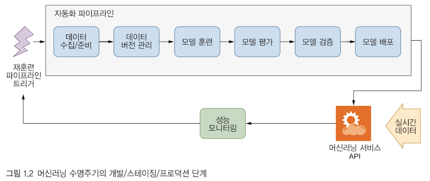
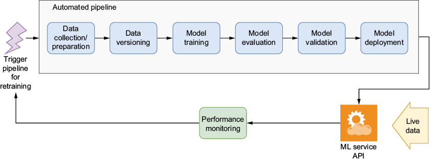
이미지 해설 — 두 장은 같은 그림의 한국어판과 영문판입니다. 위쪽의 큰 상자 "자동화 파이프라인(Automated pipeline)" 안에는 데이터 수집/준비 → 데이터 버전 관리 → 모델 훈련 → 모델 평가 → 모델 검증 → 모델 배포 가 한 줄로 늘어서 있습니다. 모델 배포에서 나온 화살표가 아래로 내려가 주황색 아이콘의 머신러닝 서비스 API로 이어지고, 이 API에는 오른쪽에서 실시간 데이터(Live data) 가 들어옵니다. API에서 왼쪽으로 성능 모니터링(초록 상자)이 이어지고, 거기서 다시 맨 왼쪽의 번개 모양 재훈련 파이프라인 트리거(Trigger pipeline for retraining)로 화살표가 올라가 파이프라인 시작점과 연결됩니다. 쉬운 풀이: 그림 1.1에는 탐색적 데이터 분석이 있고 배포는 없었는데, 이번에는 EDA가 빠지고 배포가 맨 끝에 추가되었으며 가장 큰 차이는 고리가 닫힌다는 점입니다. 서비스가 돌고 → 모니터링이 보고 → 나빠지면 트리거가 다시 파이프라인을 깨우는 순환입니다.
- 언뜻 보면 앞서 제시한 그림 1.1과 비슷해 보입니다. 데이터 버전 관리, 모델 훈련, 모델 평가, 모델 검증이 두 그림 모두에 포함되어 있습니다. 실험 단계에서는 어느 정도 자동화된 오케스트레이션 파이프라인을 갖추게 됩니다. 이 단계에서는 이를 완전히 자동화합니다.
- 트리거는 지속적 통합(CI) 또는 어떤 형태의 프로그래밍 방식 호출에서 발생할 수 있습니다. 이것이 파이프라인 단계들을 순차적으로 시작시킵니다. 여기서 새로운 점은 파이프라인 끝에 모델 배포가 추가된다는 것입니다(그림 1.2 참고). 이 단계의 결과물은 대체로 REST API 형태로 배포되는 머신러닝 서비스입니다. 또한 어느 형태로든 성능 모니터링을 설정하고 싶을 것입니다. 더욱 정교한 사용 사례에서는 성능 지표가 특정 임계값 아래로 떨어지면 트리거가 다시 발동되어 전체 프로세스가 반복됩니다.
| 용어 | 쉬운 설명 |
|---|---|
| 트리거(trigger) | 파이프라인을 "시작해!" 하고 깨우는 신호. 코드가 올라오거나(CI), 다른 프로그램이 부르거나, 일정 시각이 되면 발동 |
| CI (지속적 통합) | 코드를 합칠 때마다 자동으로 빌드·검사를 돌려 주는 개발 습관과 도구 |
| REST API | 다른 프로그램이 인터넷 주소로 "이 입력으로 예측해 줘"라고 요청하고 결과를 받는 창구 |
| 임계값(threshold) | "이 아래로 떨어지면 조치한다"의 기준 숫자 |
| 구분 | 실험 단계 | 개발/스테이징/프로덕션 단계 |
|---|---|---|
| 자동화 | 어느 정도 | 완전 자동화 |
| 시작 | 사람이 실행 | 트리거(CI·프로그램 호출) |
| 파이프라인 끝 | 모델 검증 | 모델 검증 + 모델 배포 |
| 결과물 | 쓸 만한 모델 | 보통 REST API 형태의 ML 서비스 |
| 되돌아오기 | 사람이 판단해 앞 단계로 | 성능 모니터링 → 임계값 아래면 트리거 재발동 |
| 중요한 것 | 방법 탐색 | 윤리, 보안, 확장성, 견고성, 실시간 성능 |
[보강] 자동 재훈련과 자동 승격(출시) 은 다릅니다. 새 모델이 곧바로 서비스에 들어가려면 평가·안전·업무 조건을 통과해야 하며, 위험이 큰 서비스는 사람의 승인 절차를 둡니다. "개발/스테이징/프로덕션"은 코드를 개발 환경 → 실서비스와 똑같이 꾸민 리허설 환경(스테이징) → 실제 서비스(프로덕션) 순으로 올려 가며 확인한다는 뜻의 일반적인 소프트웨어 용어이고, 책은 이를 하나의 "단계"로 묶어 설명합니다.
flowchart LR TRG["트리거 CI 또는 호출"] --> PIPE["수집 준비 - 버전 관리 - 훈련 - 평가 - 검증"] PIPE --> DEP["모델 배포"] DEP --> API["ML 서비스 API"] LIVE["실시간 데이터"] --> API API --> MON["성능 모니터링"] MON -- "임계값 아래로 하락" --> TRG
모델 배포 · 모니터링 · 재훈련
모델 배포
- 훈련된 모델이 어느 정도 성능을 발휘한다면, 고객이 사용할 수 있도록 배포하는 것이 다음 단계입니다. 일부 조직에서는 이 시점에 IT 또는 DevOps/MLOps 팀으로 업무가 이관됩니다. 그러나 데이터 과학자들도 이 과정에 참여시킬 때 이점이 있음을 경험으로 확인했습니다.
- 모델 배포의 가장 간단한 방법 중 하나는 모델 추론(model inference)을 수행하는 REST API를 연결하는 것입니다. 그 다음 단계는 도커(Docker)와 같은 도구로 컨테이너화한 뒤, AWS나 GCP 같은 클라우드 플랫폼에 배포하는 것입니다. 그러나 배포가 완료되었다고 해서 작업이 끝난 것은 아닙니다. 서비스가 예상 부하를 감당할 수 있는지 확인하기 위해 부하 테스트(load test)를 수행해야 합니다. 서비스에 급격한 부하가 발생하는 경우를 대비해 자동 스케일링도 고려해야 할 수 있습니다. 각 모델 배포에는 버전 관리가 필요하며, 문제 발생 시 롤백할 수 있는 전략도 마련해야 합니다.
| 용어 | 쉬운 설명 | 비유 |
|---|---|---|
| 모델 추론(inference) | 훈련된 모델에 새 입력을 넣어 예측값을 얻는 것 | 공부를 마친 학생이 실제 시험 문제를 푸는 일 |
| 컨테이너화(Docker) | 프로그램과 필요한 환경을 한 상자에 포장해 어디서든 같게 돌리는 방법 | 이삿짐을 상자에 담아 어느 집에서든 같은 배치로 푸는 것 |
| 클라우드(AWS, GCP) | 인터넷으로 빌려 쓰는 서버 | 필요할 때 빌리는 렌터카 |
| 부하 테스트 | 요청이 몰릴 때 서비스가 버티는지 미리 시험 | 개업 전에 손님 100명이 동시에 와도 되는지 예행연습 |
| 자동 스케일링 | 요청이 늘면 서버를 자동으로 늘리고 줄이는 것 | 손님이 몰리면 계산대를 자동으로 더 여는 마트 |
| 버전 관리 / 롤백 | 배포마다 번호를 매기고, 문제가 생기면 이전 버전으로 되돌림 | 새 메뉴가 망하면 어제 메뉴로 즉시 복귀 |
🟡 보완: [보강] REST API는 배포 방식 중 하나일 뿐이며, 한꺼번에 처리하는 배치 예측, 실시간 스트리밍, 기기 안에서 도는 방식도 있습니다. 또 컨테이너 도구(예: 쿠버네티스)가 모델의 정확성이나 보안을 자동 보장해 주지는 않습니다.
모델 모니터링
- 머신러닝 모델은 실전에 첫발을 내딛는 순간을 버텨내지 못하는 경우가 많습니다. 모델이 프로덕션 환경에 배포되어 실제 데이터를 만나면 모델 평가 때만큼의 성능을 내지 못하는 것이 일반적이므로, 프로덕션 환경 투입 이후에도 모델 성능을 측정할 수 있는 체계를 마련해야 합니다.
- 시스템/운영 지표와 머신러닝 전용 지표라는 두 가지 주요 성능 지표 범주를 모니터링해야 하는데, 초당 요청 수(request per second, RPS), HTTP 상태 코드 집계 등을 측정하는 항목들이 이에 해당합니다.
- 머신러닝 프로젝트에서는 방치할 경우 모델 성능에 악영향을 줄 수 있는 데이터 및 모델 드리프트(model drift)를 측정하는 것도 중요하며, 고객 이탈율, 유지율처럼 모델이 창출하는 비즈니스 가치를 측정하기 위해 설계된 핵심 비즈니스 지표도 함께 모니터링해야 합니다.
| 범주 | 본문 항목 | 무엇을 판단하는가 |
|---|---|---|
| 시스템/운영 지표 | 초당 요청 수(RPS), HTTP 상태 코드 집계 | 서비스가 응답하는가. 예: 200은 성공, 5xx(500번대)는 서버 오류. [보강] 지연 시간·자원 사용도 함께 확인 |
| 머신러닝 전용 지표 | 데이터 드리프트, 모델 드리프트 | 입력 데이터나 예측의 분포가 변했는가, 정답 기반 성능이 떨어졌는가 |
| 핵심 비즈니스 지표 | 고객 이탈율, 유지율 | 모델이 실제로 사업에 도움이 되는가 |
모델 재훈련
- 아무리 견고한 모델이라도 때로는 재훈련이 필요할 수 있습니다. 그렇다면 모델을 언제 재훈련해야 하는지 어떻게 알 수 있을까요? 이처럼 복잡한 질문이 대개 그렇듯, 상황에 따라 다릅니다.
- 모델 재훈련이 필요할 때는 가능한 한 자동화해야 합니다. 모델 훈련 과정에서 파이프라인을 이미 자동화했다면 훌륭한 출발점이 되지만, 그것만으로는 충분하지 않습니다. 새 모델이 훈련되는 즉시 자동으로 배포될 수 있도록 모델 배포도 함께 자동화해야 합니다. 모델 재훈련은 고정된 일정(예: 매월) 에 따라 트리거되거나, 특정 임계값이 충족될 때(예: 대출 승인 건수가 갑자기 급감할 때) 트리거될 수 있습니다.
| 재훈련 트리거 | 본문 예시 | 장점 | 주의 |
|---|---|---|---|
| 고정 일정 | 매월 | 단순하고 예측 가능 | 문제가 없어도 돌리거나, 문제가 생겨도 다음 달까지 기다릴 수 있음 |
| 임계값 충족 | 대출 승인 건수가 갑자기 급감 | 이상이 생겼을 때 반응 | [보강] 승인 감소가 트래픽·정책 변경·장애·입력 변화 때문일 수도 있으니 원인 확인이 먼저 |
🟡 보완: [보강] 안전한 흐름은 경보 → 원인 분석 → 데이터 확인 → 필요하면 재훈련 → 평가·검증 통과 후 배포입니다. 성능이 떨어졌다는 이유만으로 새 모델을 곧바로 자동 출시하지는 않습니다.
flowchart LR
SRV["모델 서비스 운영"] --> MON["모니터링 - 시스템과 ML과 비즈니스 지표"]
MON --> CHK{"임계값 이탈 또는 정해진 일정"}
CHK -- "아니오" --> SRV
CHK -- "예" --> WHY["원인 확인"]
WHY --> RT["자동 재훈련 파이프라인"]
RT --> GATE["평가와 검증 통과"]
GATE --> DEP["자동 배포 - 버전 기록과 롤백 준비"]
DEP --> SRV이 파트 요약 체크리스트
- 머신러닝 프로젝트는 반복이다. 한 번의 배포로 끝나지 않는다.
- 첫 질문은 "정말 ML이 필요한가?" — 휴리스틱 기준선을 먼저 만든다.
- 데이터 → 훈련 → 평가 → 검증 순으로 가되 언제든 앞으로 되돌아간다.
- 훈련·검증·테스트는 반드시 나눈다(비율은 관행, 테스트는 최종 평가용으로 격리).
- 실험 단계는 일부 자동화, 개발/스테이징/프로덕션 단계는 완전 자동화 + 배포 + 모니터링 + 재훈련 트리거.
- 배포 후에는 부하 테스트, 자동 스케일링, 버전 관리, 롤백, 그리고 시스템/ML/비즈니스 지표 모니터링이 필요하다.
1.2 MLOps에 필요한 역량 — 소개 (그림 1.3)
▶ 소개
머신러닝 엔지니어로서 자신감을 키우려면 여러 도메인에 걸친 다양한 기술을 복합적으로 익혀야 합니다. 처음에는 막막하게 느껴질 수 있지만, 처음부터 모든 것을 완벽히 알 필요는 없습니다. 중요한 것은 이러한 기술들이 어떻게 맞물려 신뢰할 수 있는 머신러닝 시스템을 만들어내는지 이해하는 것입니다(그림 1.3 참고). 이 책에서는 각 도메인의 성공적인 적용 사례를 실제 예제를 통해 하나씩 살펴볼 것입니다.
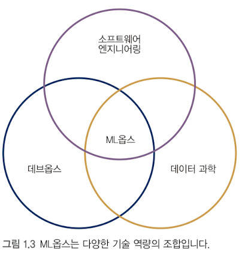
이미지 해설 (그림 1.3) — 세 개의 큰 원이 서로 겹쳐 있습니다. 위쪽 원은 소프트웨어 엔지니어링, 왼쪽 아래 원은 데브옵스(DevOps), 오른쪽 아래 원은 데이터 과학이고, 세 원이 모두 겹치는 한가운데에 ML옵스가 적혀 있습니다. 캡션은 "ML옵스는 다양한 기술 역량의 조합입니다"입니다. 쉬운 말로 풀면, MLOps는 "새로운 한 가지 기술"이 아니라 소프트웨어를 잘 만들고(소프트웨어 엔지니어링), 안정적으로 배포·운영하고(DevOps), 데이터와 모델을 다루는(데이터 과학) 세 가지 능력이 만나는 자리라는 뜻입니다. 세 원의 크기가 비슷하다는 점에서, 어느 한쪽만 잘해서는 부족하다는 메시지로 읽을 수 있습니다.
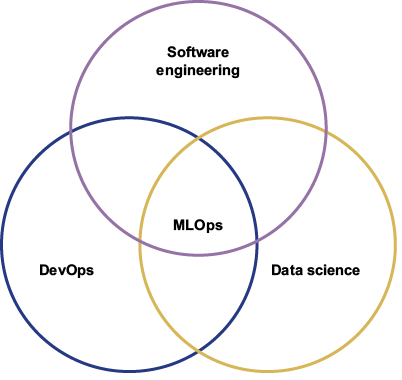
이미지 해설 — 같은 그림의 영문 원본입니다. 검은 배경에 세 개의 겹치는 원이 있고 라벨은 Software engineering / MLOps / DevOps / Data science입니다. 글자 대비가 낮아 작은 글씨는 화면에서 또렷이 판독하지 못했고, 원이 겹치는 구조만 확인했습니다. 한국어판(위 그림)과 같은 내용입니다.
flowchart TB
SE["소프트웨어 엔지니어링 배포 경험 디버깅"]
DO["DevOps 자동화 CI CD 운영"]
DS["데이터 과학 ML 프레임워크 데이터 다루기"]
ML["MLOps 신뢰할 수 있는 ML 시스템"]
SE --> ML
DO --> ML
DS --> ML머신러닝 엔지니어에게 필요한 역량
▶ 머신러닝 엔지니어에게 필요한 역량
책은 시작 전에 갖춰야 할 역량을 네 덩어리로 말합니다. 본문 문장을 그대로 옮기고 풀이를 붙입니다.
① 소프트웨어 엔지니어링 — 배포 경험과 디버깅
시작하기 전에 갖춰야 할 역량은 다음과 같습니다. 가장 기본적인 조건으로, 단순하지 않은 다양한 소프트웨어 시스템을 성공적으로 배포해 본 경험이 있는 역량 있는 소프트웨어 엔지니어야 합니다. 그 범위는 모바일 애플리케이션부터 엔터프라이즈 시스템까지 다양합니다. 디버깅에 능숙해야 하며, 성능 문제가 어디서 발생하는지 파악하고 이를 해결하는 방법도 알고 있어야 합니다.
- 풀이: 배포란 만든 프로그램을 사용자가 실제로 쓸 수 있는 환경에 올리는 일입니다. 디버깅은 프로그램의 오류 원인을 찾아 고치는 일입니다. "성능 문제가 어디서 발생하는지 파악"한다는 것은, 예를 들어 서비스가 느릴 때 데이터베이스 때문인지, 네트워크 때문인지, 코드 때문인지 병목을 찾아낸다는 뜻입니다.
② 머신러닝·데이터 과학 이해 — 알고리즘 전문가일 필요는 없다
다음 전제 조건은 머신러닝과 데이터 과학에 대한 이해입니다. 조직마다 차이가 있지만, 머신러닝 엔지니어라면 머신러닝 알고리즘의 전문가일 필요는 없으며 역전파 backpropagation 의 세부적인 내용까지 알 필요도 없습니다. 다만 텐서플로 TensorFlow, 파이토치 PyTorch, 사이킷런 scikit-learn 과 같은 주요 머신러닝 프레임워크를 능숙하게 다루고, 새롭고 낯선 프레임워크도 거리낌없이 익힐 수 있어야 합니다.
- 풀이: 역전파는 모델이 틀렸을 때 오차를 거꾸로 거슬러 올라가며 가중치를 고치는 학습 방식입니다(앞선 사전 지식 파트 참고). 그 수학을 직접 유도할 수 있어야 하는 것은 아닙니다. 대신 프레임워크(TensorFlow, PyTorch, scikit-learn처럼 모델을 만들고 학습시키는 도구 모음)를 능숙하게 쓰고, 새 프레임워크가 나와도 금방 익히는 능력이 요구됩니다.
③ 데이터 엔지니어링 — 가장 어려운 것은 데이터
모델을 구축하는 방법을 아는 것과 머신러닝 수명주기를 이해하고 그 복잡성과 도전 과제를 파악하는 것은 별개의 문제입니다. 대부분의 머신러닝 실무자들은 데이터 관련 문제가 가장 까다로우며, 그중에서도 양질의 훈련 데이터를 충분히 확보하는 것이 가장 어려운 과제라는 데 동의합니다. 이를 위해서는 일정 수준의 데이터 엔지니어링 역량이 필요합니다.
- 풀이: 데이터 엔지니어링은 데이터를 모으고, 정리하고, 안정적으로 흘려보내는 파이프라인을 만드는 일입니다. "모델 코드를 짜는 능력"과 "모델이 쓸 좋은 데이터를 꾸준히 공급하는 능력"은 다른 능력입니다.
(본문 표기 정리: 본문에는 "까다로우여"라는 오타가 있어 위 인용에서는 문맥에 맞게 "까다로우며"로 적었습니다.)
④ 자동화와 실험 재현성
MLOps의 상당 부분은 자동화입니다. 자동화는 실수를 줄이고 빠른 반복을 가능하게 하여 더 신속한 피드백으로 이어집니다. 또한 개발/스테이징/프로덕션 환경 전반에 걸쳐 모델이 동일하게 동작하게 하려면 실험 재현성 experiment reproducibility 이 매우 중요해지며, 머신러닝 모델이 규제 준수 및 감사 대상이 될 때는 더욱 결정적인 요소가 됩니다. 궁극적으로 재현 가능한 결과는 신뢰로 이어집니다. 머신러닝 엔지니어는 그 외에도 더 많은 역량을 갖추거나 습득하도록 요구되지만, 이 정도가 좋은 출발점입니다.
- 풀이: 재현성은 "같은 재료와 같은 방법으로 다시 하면 같은 결과가 나오는 성질"입니다. 감사(audit) 는 외부 기관이나 내부 담당자가 "이 모델이 어떤 데이터와 코드로 만들어졌는지" 되짚어 보는 일입니다. 기록이 없으면 이 질문에 답할 수 없습니다.
⚠ 덧붙임: 위 문장의 "재현 가능한 결과는 신뢰로 이어진다"는 방향은 맞지만, 코드·데이터·설정을 기록한다고 해서 항상 비트 단위로 똑같은 모델이 나온다고 보장되지는 않습니다. 난수 시드, 라이브러리·장치(CPU/GPU) 버전, 비결정적 연산 등을 함께 통제해야 합니다(PyTorch 공식 문서도 버전·플랫폼·CPU/GPU 간 완전 재현을 보장하지 않는다고 설명). 이 문서에서는 "재현성 = 기록으로 추적·재실행할 수 있게 하는 것"으로 이해하고, "100% 같은 모델 보장"으로 읽지 않습니다. 감사 가능한 이력과 완전히 같은 훈련 결과는 별개의 목표입니다.
배포 경험을 강조하는 첫 항목은 이 책이 전제로 삼는 배경이지, 경험이 없는 초보자는 공부를 시작할 수 없다는 금지 조건이 아닙니다. 바로 다음 "사전 요구사항"에서 본문이 그 점을 직접 안심시킵니다.
사전 요구사항 — 코끼리를 먹는 법
▶ 사전 요구사항
지금까지 읽은 내용이 막막하게 느껴질 수도 있을 것입니다. 바로 그렇기 때문에 우리 저자진은 이 책을 집필했습니다. 코끼리를 먹는 방법에 관한 유명한 격언처럼, 복잡한 문제를 다루는 가장 좋은 방법은 한 번에 조금씩 해결해 나가는 것입니다. 마주치는 문제들은 대부분 관리 가능한 단위로 쪼갤 수 있습니다. 즉 이 모든 기술을 한꺼번에 갖출 필요도 없고, 모든 것을 미리 알아야 할 필요도 없습니다.
다음 장들에 대한 준비로, 먼저 쿠버네티스의 기본 개념을 간략히 살펴보겠습니다. 이를 통해 여러분은 직접 머신러닝 플랫폼을 구축할 수 있게 되고, 그 위에 머신러닝 시스템을 올릴 수 있는 기반을 마련하게 됩니다. 그 다음에는 MLOps 도구들을 빠르게 훑어보는 시간을 갖겠습니다.
(본문 오타 "마추지는"은 문맥상 "마주치는"으로 적었습니다.)
- 쿠버네티스(Kubernetes) 는 컨테이너(프로그램과 실행 환경을 한 상자에 담은 것)를 여러 대의 컴퓨터에 나누어 띄우고 관리해 주는 도구입니다. 책은 다음 장들에서 이것을 기본부터 소개한 뒤, 그 위에 ML 플랫폼을 올립니다.
- 이 "막막해도 안심하라"는 메시지는 1.4절에서 한 번 더 나옵니다: "플랫폼을 구축하고 프로젝트를 개발·배포하기에 앞서, 2장에서 핵심 MLOps 개념을 충분히 학습할 수 있으니 안심하십시오." 즉 다음 장(2장)가 바로 그 "충분한 학습" 자리입니다.
- [보강] 쿠버네티스 최소 개념(일반 지식이며 이번에 공식 문서를 새로 확인하지는 못함): 컨테이너 → Pod(컨테이너를 담는 최소 실행 단위) → Deployment(몇 개를 띄울지, 어떻게 갱신·되돌릴지 적은 운영 지침서) → Service(고정된 접근 주소). 이삿짐 컨테이너 → 상자 묶음 → 운영 지침서 → 대표 전화번호로 비유할 수 있습니다.
1.3 머신러닝 플랫폼 구축 — 소개와 그림 1.4
1.3 머신러닝 플랫폼 구축
▶ 소개
잘 설계된 머신러닝 플랫폼은 머신러닝 서비스를 자신 있게 개발하고 배포하는 데 핵심적입니다. 신뢰할 수 있는 머신러닝 시스템을 구축하기 위한 토대라고 생각하십시오(머신러닝 수명주기의 모든 필수 단계를 처리하는 데 필요한 도구와 인프라를 제공합니다). 머신러닝 플랫폼은 여러 컴포넌트로 이루어져 있지만, 그렇다고 지레 겁먹을 필요는 없습니다. 각 컴포넌트를 이해하면서 단계적으로 구축해 나갈 것입니다.
(본문 오타 "서비슬르"는 "서비스를"로 적었습니다.)
- 풀이: 플랫폼은 "모델 하나"가 아니라, 데이터 준비·훈련·기록·배포·감시에 쓰는 도구와 인프라의 묶음입니다. 공장에 비유하면 개별 기계가 아니라 공장 전체의 설비 배치도입니다.
그림 1.4는 머신러닝 플랫폼 아키텍처의 예시를 보여줍니다. 데이터 웨어하우스/데이터 레이크 배치 batch/스트리밍 streaming 프로세서, 다양한 데이터 소스 등 대부분의 다른 데이터 시스템은 점선 경계 바깥에 위치합니다. 이들은 머신러닝 플랫폼에 특화된 요소가 아니므로 자세히 다루지는 않지만, 스파크 spark 와 플링크 flink 같은 데이터 프로세서는 머신러닝 플랫폼의 주변부에 해당하므로 간략히 살펴볼 것입니다.
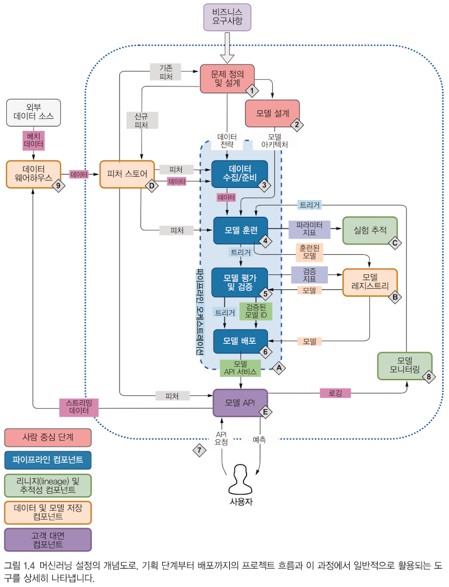
이미지 해설 (그림 1.4) — 이 책 전체의 "지도"입니다. 위에서 아래로 읽으면 됩니다.
- 맨 위 비즈니스 요구사항 → ① 문제 정의 및 설계, ② 모델 설계(분홍색 = 사람이 직접 하는 단계).
- 파란색 파이프라인 오케스트레이션(점선 세로 상자, 라벨 A) 안에 ③ 데이터 수집/준비 → ④ 모델 훈련 → ⑤ 모델 평가 및 검증 → ⑥ 모델 배포가 "트리거" 화살표로 이어집니다.
- D 피처 스토어가 "피처"를 데이터 수집/준비·훈련·모델 API에 공급하고, 그 앞에 ⑨ 데이터 웨어하우스와 외부 데이터 소스(배치 데이터)가 있습니다.
- C 실험 추적은 훈련의 "파라미터/지표"를 받고, B 모델 레지스트리는 훈련된 모델·검증 지표·검증된 모델 ID를 주고받으며 배포 단계에 모델을 내려 줍니다.
- 배포된 E 모델 API가 ⑦ 사용자의 "API 요청"에 "예측"으로 답하고, 그 "로깅"이 ⑧ 모델 모니터링으로 가서 다시 훈련 "트리거"가 됩니다. 모델 API에서 "스트리밍 데이터"가 웨어하우스로 되돌아가는 선도 있습니다.
- 왼쪽 아래 범례 5종: 사람 중심 단계(분홍) / 파이프라인 컴포넌트(파랑) / 리니지(lineage) 및 추적성 컴포넌트(초록) / 데이터 및 모델 저장 컴포넌트(주황) / 고객 대면 컴포넌트(보라). 리니지란 "이 결과가 어떤 데이터와 코드에서 나왔는지" 계보를 추적하는 것입니다.
- 번호·알파벳 대응(그림에서 직접 읽음): 숫자 ① 문제 정의 ② 모델 설계 ③ 데이터 수집/준비 ④ 훈련 ⑤ 평가·검증 ⑥ 배포 ⑦ 사용자 ⑧ 모니터링 ⑨ 데이터 웨어하우스 / 알파벳 A 파이프라인 오케스트레이션 B 모델 레지스트리 C 실험 추적 D 피처 스토어 E 모델 API.
- 점선 큰 테두리 바깥은 책이 "ML 플랫폼 고유가 아니다"라고 보는 영역(외부 데이터 소스, 웨어하우스 등)입니다. 다만 그림에서는 ⑨ 웨어하우스가 점선 경계 쪽에 걸쳐 있어 "주변부"라는 본문 설명과 맞습니다.
이미지 해설 — 같은 그림의 영문 원본입니다. 한국어판의 블록과 1:1로 대응합니다.
flowchart LR
BIZ["비즈니스 요구사항"] --> P1["1 문제 정의 설계"]
P1 --> P2["2 모델 설계"]
P1 --> P3["3 데이터 수집 준비"]
FS["D 피처 스토어"] --> P3
P3 --> P4["4 모델 훈련"]
P2 --> P4
P4 --> EXP["C 실험 추적"]
P4 --> P5["5 평가 검증"]
P5 --> REG["B 모델 레지스트리"]
P5 --> P6["6 모델 배포"]
REG --> P6
P6 --> API["E 모델 API"]
API --> USER["7 사용자"]
API --> MON["8 모델 모니터링"]
MON -.->|"트리거"| P4위 도식은 그림 1.4의 핵심 흐름만 단순화한 것입니다(오케스트레이션 A, 웨어하우스 9, 로깅 등은 생략).
점선 내부가 바로 본격적인 내용이 시작되는 곳입니다. 이 책에서는 머신러닝 플랫폼을 처음부터 구축하는 방법을 배웁니다. 먼저 쿠버네티스 위에서 동작하는 오픈소스 머신러닝 플랫폼인 큐브플로 Kubeflow 를 설치합니다. 큐브플로의 핵심 컴포넌트 중 하나인 큐브플로 파이프라인은 파이프라인 오케스트레이션 pipeline orchestration - Link 기능을 제공합니다. 각 장에 걸쳐 동일한 개념도를 사용하면서 현재 다루고 있는 컴포넌트를 강조 표시할 것입니다. 각 장을 진행하면서 그림 1.4의 개념도 안에 있는 각 블록에 집중할 것입니다. 인프라 요소에는 알파벳이, 데이터 컴포넌트에는 숫자가 태그로 붙어 있습니다. 이 순서는 책에서 컴포넌트가 소개되는 자연스러운 흐름이자, 파이프라인에서 데이터가 흐르는 일반적인 흐름을 나타냅니다.
- 풀이: 파이프라인 오케스트레이션은 여러 작업(데이터 준비 → 훈련 → 평가 …)의 실행 순서·재시도·연결을 자동으로 지휘하는 일입니다. 오케스트라 지휘자를 생각하면 됩니다.
- 링크: Kubeflow Pipelines 개요 — https://www.kubeflow.org/docs/components/pipelines/overview/ (공식 개요 문서; 컨테이너 기반 ML 워크플로를 정의·실행하는 플랫폼으로 소개합니다).
- [보강] 공식 문서는 Kubeflow Pipelines를 전체 Kubeflow와 별도로 설치할 수도 있다고 설명합니다. 책의 학습 경로는 "쿠버네티스 → Kubeflow 설치 → 주피터 노트북 → 파이프라인"이지만, 이 구성이 모든 프로젝트의 정답이라는 뜻은 아닙니다.
- [보강] 그림의 순환 화살표(모니터링 → 훈련 트리거)는 "여러 번의 실행이 반복된다"는 뜻입니다. 한 번의 파이프라인 실행(DAG) 안에 끝없는 순환 간선을 넣으라는 뜻으로 읽지 않습니다.
너무 벅차게 느껴지더라도 걱정하지 마십시오! 큐브플로 설치 과정을 안내한 다음, 주피터 노트북 Jupyter Notebooks 을 시작으로 큐브플로 파이프라인에 이르기까지 큐브플로의 다양한 기능을 소개해 드릴 것입니다. 다음으로, 머신러닝 플랫폼을 확장하는 방법을 배웁니다. 이 과정은 큐브플로가 충분히 지원하지 못하는 사용 사례에서 비롯됩니다. 예를 들어, 큐브플로는 피처 스토어 feature store 를 기본으로 제공하지 않는데, 피처 스토어란 머신러닝 모델 훈련 및 서빙에 사용할 정제된 피처를 저장하는 핵심 소프트웨어입니다.
- 풀이: 주피터 노트북은 코드를 한 칸씩 실행하며 결과를 바로 보는 웹 기반 실습 도구입니다. 이어지는 토글에서 "피처 스토어"가 무엇이고 왜 따로 붙이는지 설명합니다.
- [보강] "Kubeflow가 피처 스토어를 기본 제공하지 않는다"는 말은 책이 설치하는 구성 기준의 설명입니다. 다른 배포판·버전에서도 항상 그렇다고 일반화하지는 않습니다.
피처와 피처 스토어 (토글 메모)
▶ 피처와 피처 스토어
이 토글은 본문에서 코드 블록 안에 적힌 학습 메모입니다. 책 본문이라기보다 글쓴이가 덧붙인 설명으로 보이며(근거: 아래 마지막 항목이 "이 저장소의 …", "4장을 실습할 때 … 확인하겠습니다"라고 적음), 책의 주장과 구분해서 읽으세요. 단정할 수는 없습니다. 본문의 표와 문장은 아래에 그대로 복원했습니다.
피처(feature)란
피처는 모델이 입력으로 받는 가공된 값입니다. 원본 데이터 "거래 내역 10만 건"에서 뽑은 "최근 7일 평균 결제액", "이번 달 해외 결제 횟수" 같은 숫자가 피처입니다. 원본 데이터를 그대로 넣지 않고 모델이 쓰기 좋게 계산해 둔 값입니다. 앞에서 본 X가 바로 피처들입니다.
- 풀이: 원본 거래 10만 건을 모델에 그대로 넣는 대신 "최근 7일 평균 결제액 = 38,000원", "이번 달 해외 결제 횟수 = 2회"처럼 요약·가공한 숫자로 바꿔서 넣습니다. 이 숫자들이 입력 X(피처)입니다. (38,000원, 2회는 이해를 돕는 [보강] 예시 값입니다.)
피처 스토어는 왜 필요한가
피처 스토어가 없으면 이런 일이 생깁니다. - 데이터 사이언티스트는 훈련할 때 노트북에서 피처를 계산하는 코드를 짭니다. - 엔지니어는 서빙할 때 그 로직을 다시 구현합니다. 이때 미묘하게 달라지면 훈련 때 본 값과 서빙 때 받는 값이 달라져 성능이 떨어집니다. 이를 훈련-서빙 불일치(training-serving skew) 라고 합니다. - 다른 팀이 같은 피처를 또 계산합니다.
피처 스토어는 피처를 한 번 정의하고 계산해 저장한 뒤, 훈련과 서빙이 같은 곳에서 가져다 쓰게 하는 소프트웨어입니다. 비유하면 식당의 손질된 재료 보관소입니다. 요리사(모델)가 매번 원물을 손질하지 않고, 손질된 재료를 꺼내 씁니다. 훈련 주방과 서빙 주방이 같은 재료를 씁니다.
피처 스토어 유무 비교 (4행 정리)
| 구분 | 피처 스토어 없음 | 피처 스토어 사용 |
|---|---|---|
| 피처 계산 코드 | 훈련용·서빙용을 따로 작성 | 한 번 정의해 양쪽에서 재사용 |
| 훈련-서빙 불일치 | 생기기 쉬움 | 줄어듦 |
| 팀 간 재사용 | 복붙, 중복 계산 | 카탈로그에서 찾아 공유 |
| 과거 시점 재현 | 직접 구현해야 함 | 시점 기준 조회 지원 |
flowchart TB
subgraph NO["피처 스토어 없음"]
N1["노트북에서 훈련용 피처 코드"] --> N2["모델 훈련"]
N3["엔지니어가 서빙용으로 재구현"] --> N4["서빙 입력이 미묘하게 다름"]
N2 --> N5["성능 저하 skew"]
N4 --> N5
end
subgraph YES["피처 스토어 사용"]
Y1["피처를 한 번 정의"] --> Y2["오프라인 스토어 훈련 배치"]
Y1 --> Y3["온라인 스토어 실시간 서빙"]
Y2 --> Y4["같은 정의 줄어든 불일치"]
Y3 --> Y4
end⚠ 덧붙임: 표의 "줄어듦"이 정확한 표현입니다. 피처 스토어를 쓴다고 불일치가 자동으로 모두 사라지는 것은 아닙니다. 같은 정의여도 값을 최신으로 채우는 시점(materialization 지연)·신선도·버전 차이에 따라 훈련 때와 서빙 때 값이 다를 수 있습니다. 피처 스토어는 불일치를 줄이는 장치이지 보증서가 아닙니다. 또 "모든 ML 프로젝트에 피처 스토어가 필수"라는 뜻도 아닙니다.
구성: 오프라인 스토어와 온라인 스토어
대부분의 피처 스토어는 두 저장소를 함께 둡니다.
오프라인 vs 온라인 (5행 정리)
| 구분 | 오프라인 스토어 | 온라인 스토어 |
|---|---|---|
| 목적 | 모델 훈련·배치 추론용 대량 조회 | 실시간 서빙용 빠른 조회 |
| 데이터 양 | 과거 전체 이력(대용량) | 엔티티별 최신 값만 |
| 응답 속도 | 느려도 됨(분~초) | 밀리초 단위 |
| 저장소 예 | Parquet, S3, BigQuery | Redis, DynamoDB |
| 조회 방식 | 특정 시점 기준 과거 값(point-in-time) | 엔티티 키로 최신 값 |
피처 정의는 하나이고, 데이터는 오프라인에서 온라인으로 주기적으로 복사(materialize)해 최신 값을 유지합니다.
- 용어 풀이: 엔티티(entity) 는 피처가 붙는 대상(고객 ID, 상품 ID 등)입니다. Parquet은 대용량 표 데이터를 효율적으로 저장하는 파일 형식, S3는 AWS의 파일 저장소, BigQuery는 구글의 대용량 분석 데이터베이스, Redis는 메모리에 두고 아주 빠르게 읽는 저장소, DynamoDB는 AWS의 빠른 키-값 데이터베이스입니다.
- [보강] 두 저장소는 "같은 물리 저장소"가 아니라 같은 피처 정의에 맞춘 서로 다른 제공 경로입니다. 표의 "분~초", "밀리초"는 이해를 돕는 대략값이며, 실제 지연은 백엔드와 부하에 따라 달라지고 보장값이 아닙니다.
핵심 기능: 시점 기준 조회(point-in-time)
과거 데이터로 훈련할 때는 그 시점에 알 수 있었던 값만 써야 합니다. 3월 1일의 사기 여부를 학습하는데 3월 5일에 계산된 "최근 7일 평균"을 쓰면 미래 정보가 새어 들어가는 데이터 누수(leakage) 입니다. 피처 스토어는 타임스탬프를 기준으로 그때 값을 정확히 가져와서 이를 막아 줍니다. 앞에서 시간 순서로 데이터를 나눠야 한다고 한 이유와 같은 맥락입니다.
- 풀이(숫자 예시): 3월 1일에 일어난 결제가 사기였는지 맞히는 모델을 훈련한다고 합시다. 이때 입력으로 쓸 "최근 7일 평균 결제액"은 2월 23일~3월 1일 구간의 값이어야 합니다. 3월 5일에 다시 계산한 값(2월 27일~3월 5일 구간)에는 3월 1일 이후의 거래, 즉 그때는 알 수 없던 미래 정보가 섞여 있습니다. 시험 문제를 풀면서 정답지를 슬쩍 본 것과 같아서 훈련 성적은 좋아 보이지만 실서비스에서는 무너집니다. 이것이 데이터 누수입니다.
- [보강] Feast 공식 문서 기준:
get_historical_features에 넘기는event_timestamp는 그 행에 허용되는 피처 값의 시간 상한(같은 시각 포함)이고, 각 행마다 그 시각 이전의 최신 값만 조인하며 TTL도 각 행의 타임스탬프 기준입니다. 다만 이벤트 시각만 과거여도 나중에 생성·수정된 값이 섞일 수 있어, 백엔드가 지원하는 경우 생성 시각 조건(created_timestamp)도 함께 확인해야 합니다.
이 책과의 연결
책은 오픈소스 피처 스토어인 Feast를 씁니다. 이 저장소의 chapters/ch04-feast/에 예제가 있고, feast/(정의)와 feast_retrieval/(retrieve_features.py, retrieve_online_features.py)가 위의 오프라인·온라인 조회에 해당하는 것으로 보입니다. 4장을 실습할 때 코드로 직접 확인하겠습니다.
📎 저자의 저장소 메모: 위 경로chapters/ch04-feast/,feast/,feast_retrieval/,retrieve_features.py,retrieve_online_features.py는 글쓴이가 자신의 학습 저장소를 두고 적은 메모입니다. 해당 저장소와 코드는 공개 자료로 확인되지 않았습니다. 파일의 실제 존재 여부, 함수의 실제 동작, 이 문서와의 연결은 "확인 못함"입니다. 본문의 "해당하는 것으로 보입니다"라는 유보 표현도 그대로 유지합니다.
모든 상황에 들어맞는 아키텍처란 없다
💡 모든 상황에 들어맞는 머신러닝 플랫폼 아키텍처란 없다!
이 책 전반에 걸쳐 소개하는 머신러닝 플랫폼 아키텍처는 각자의 조직에서 성공적으로 활용해 온 것이지만, 모든 상황에 딱 맞는 단일 해법이란 존재하지 않습니다! 이 책에서 취하는 접근 방식은 머신러닝 플랫폼을 점진적으로 발전시켜 나가는 것이며, 특히 처음부터 구축하는 머신러닝 엔지니어링 여정을 시작할 때 이 방식을 적극 권장합니다. 이 책을 통해 머신러닝 플랫폼을 직접 구성해 보는 경험을 쌓고 나면, 팀과 조직의 요구에 맞는 자신만의 머신러닝 플랫폼을 훨씬 능숙하게 구축할 수 있게 될 것입니다.
- 풀이: 그림 1.4는 "이렇게 하면 된다"는 정답이 아니라 한 가지 성공 사례의 설계도입니다. 처음부터 완벽한 플랫폼을 짓지 말고, 작게 시작해 필요한 블록을 하나씩 붙여 가는 방식을 권합니다.
직접 구축 vs 온프레미스 구매
▶ 직접 구축 vs 온프레미스 구매
조직에서 Amazon SageMaker(AWS) 나 Vertex AI(GCP)처럼 특정 벤더의 머신러닝 플랫폼을 이미 도입해 사용하고 있다면, 굳이 번거롭게 머신러닝 플랫폼을 직접 구축해야 하는지 의문이 드실 수 있습니다. 그러나 저희 생각은 다릅니다. 다양한 장을 차례로 학습하면서 여러 오픈소스 라이브러리를 통합해 머신러닝 플랫폼을 발전시켜 나가는 과정에서, 처음부터 직접 머신러닝 플랫폼을 구축해 보는 경험은 매우 소중한 자산이 됩니다. 머신러닝 플랫폼을 직접 조립하고 자신의 요구에 맞게 커스터마이징하는 방법을 익히는 것은 중요한 역량이며, 다른 곳에서는 좀처럼 다루지 않는 내용이기도 합니다.
실습을 마치고 나면 머신러닝 플랫폼의 다양한 도구들이 어떻게 함께 동작하는지 훨씬 깊이 이해하게 되며, 한계에 부딪혔을 때 이를 극복하는 방법도 익히게 됩니다.
(본문의 오타 "굳히", "익하는", "휠씬", "이해하기 되며"는 인용에서 바로잡아 적었습니다.)
⚠ 바로잡기: 소제목의 "온프레미스 구매"는 오표기입니다. 본문 내용은 "SageMaker(AWS)·Vertex AI(GCP) 같은 벤더의 관리형 플랫폼을 이미 도입해 쓰는 경우 vs 직접 구축"을 비교하는 것인데, 이 두 서비스는 클라우드 서비스이지 온프레미스(자체 서버실에 설치)가 아닙니다. 원서 목차의 표기는 Build vs. buy(직접 구축 vs 구매·도입)로 보이며, 번역 과정에서 "온프레미스"가 잘못 들어간 것으로 판단됩니다. 이 문서에서는 이 절을 "직접 구축 vs 기존/관리형 플랫폼 도입"으로 이해합니다.
| 축 | 선택지 | 의미 |
|---|---|---|
| 도입 방식 (구축 vs 구매) | 직접 구축 / 벤더 플랫폼 도입 | 누가 만들고 운영하느냐 |
| 실행 위치 (클라우드 vs 온프레미스) | 클라우드 / 자체 서버실 | 어디에서 돌리느냐 |
- 풀이: "구축/구매"와 "클라우드/온프레미스"는 서로 다른 축입니다. 직접 구축해서 클라우드에 올릴 수도 있고, 벤더 제품을 온프레미스에 설치할 수도 있습니다. [보강] 실제 선택에서는 비용뿐 아니라 운영 인력, 보안 경계, 이식성, 기능, 지원, 업그레이드까지 함께 따집니다.
- 이 절의 요지: 이미 SageMaker나 Vertex AI를 쓰더라도, 직접 조립해 보는 경험은 (1) 도구들이 서로 어떻게 맞물려 동작하는지, (2) 내 요구에 맞게 어떻게 바꾸는지, (3) 한계에 부딪혔을 때 어떻게 넘는지 가르쳐 준다는 것입니다.
앞으로의 전망: MLOps → LLMOps (그림 1.5)
▶ 앞으로의 전망: MLOps → LLMOps
앞서 그림 1.4에서 소개한 머신러닝 플랫폼 아키텍처는 전통적인 머신러닝 시스템의 토대를 이룹니다. 12장과 13장에서 살펴보겠지만, 이 토대는 문서 처리, 검색, 전문화된 모니터링을 위한 추가 컴포넌트를 통해 대규모 언어 모델 LLM을 지원하는 방향으로 자연스럽게 확장됩니다.
그림 1.5는 이러한 발전 과정을 미리 보여줍니다. 기존 MLOps 컴포넌트(점선, 왼쪽)는 여전히 핵심적인 역할을 담당하는 반면, LLMOps 확장 요소(굵은 파선, 오른쪽)는 시맨틱 검색 semantic search 을 위한 벡터 데이터베이스, LLM 안정성을 위한 전문화된 가드레일, 비용 최적화 및 프롬프트 관리 도구 등의 기능을 추가합니다.
- 풀이: LLM(대규모 언어 모델)은 ChatGPT처럼 글을 이해하고 생성하는 거대 모델입니다. LLMOps는 이런 모델을 운영하는 MLOps의 확장판입니다. 시맨틱 검색은 낱말이 같은지가 아니라 뜻이 비슷한지로 문서를 찾는 검색이고, 이를 위해 문장을 숫자 벡터로 바꿔 저장하는 벡터 데이터베이스를 씁니다. 가드레일은 모델이 위험하거나 부적절한 입력·출력을 다루지 못하게 막는 안전장치입니다.
- 장 안내: LLMOps 확장은 이 책의 12장과 13장에서 자세히 다룹니다(그림 1.5 캡션 "12장과 13장에서 이러한 확장을 자세히 다룹니다", 영문 캡션 "Chapters 12 and 13 explore these extensions in detail"). 그림 오른쪽 상자 이름도 "LLM옵스 확장(12~13장)"입니다.
이미지 해설 (그림 1.5, 한국어판) — 왼쪽은 그림 1.4의 전통적인 ML옵스를 회색 블록으로 줄여 놓은 것이고, 오른쪽 주황 점선 상자 LLM옵스 확장(12~13장) 이 새로 붙은 부분입니다. 각 블록에 12 또는 13이 붙어 있어 어느 장에서 다루는지 알 수 있습니다.
- 12장 쪽(RAG 흐름): 문서 수집(PDF, MD, HTML) → 청크 → 임베딩 모델(text-embedding-004) → 벡터 데이터베이스(FAISS/Pinecone/Chroma) → 검색(시맨틱 검색) → 증강(컨텍스트 조합) → LLM 생성(Gemini/OpenAI/Claude). 그림 오른쪽 위에는 관측 도구로 보이는 상자(Langfuse 표기: 트레이스 시각화, 프롬프트 관리, 토큰 추적, 비용 귀속)와 채팅 UI(Chainlit: 스트리밍 응답, 출처 표시)도 12로 표시됩니다.
- 13장 쪽(안전·평가·비용): 입력 가드레일·출력 가드레일(Guardrails AI: 개인정보 탐지, 경쟁사 언급 확인, 프롬프트 인젝션 필터 / 유해성 필터, 정책 준수, 콘텐츠 검증), 적대적 테스트(Promptfoo: 탈옥 탐지, 프롬프트 인젝션 테스트, 레드 팀 테스트), 시맨틱 평가(DeepEval, G-Eval 지표, 사실 일관성, 답변 관련성), LLM 안전 설정(Gemini SafetySettings: 괴롭힘·혐오 발언·위험 콘텐츠 필터), 비용 모니터링(토큰 사용량 추적, 쿼리당 비용, 예산 알림), 프롬프트 최적화(토큰 효율성, 컨텍스트 압축), 시맨틱 캐싱(RedisVL: 쿼리 임베딩 캐싱, 응답 캐싱), 모델 라우팅(계층적 선택: Flash Lite 간단 / Flash 중간 / Pro 복잡).
- 범례: 전통적인 ML옵스 컴포넌트(회색) / 모니터링 및 추적(초록) / LLM옵스 확장(주황) / 관측 가능성/테스트 흐름(파란 점선).
- 그림에 보이는 제품·모델 이름(text-embedding-004, FAISS, Pinecone, Chroma, Langfuse, Chainlit, Promptfoo, DeepEval, Guardrails AI, RedisVL, Flash Lite/Flash/Pro 등)은 그림 속 예시 라벨입니다. 일부는 글자가 작아 판독이 불완전하며(Langfuse 표기는 추정), 각 서비스의 최신 모델명·가격·기능까지 확인한 목록이 아니므로 그대로 고정된 추천으로 읽지 않습니다.
이미지 해설 (그림 1.5, 영문 원본) — 한국어판과 같은 구조의 원서 그림입니다. 영문판에는 캐시 확인/히트(Cache check/hit)와 모델 티어로 라우팅(Route to model tier) 같은 흐름이 라벨로 보이며, 번역본과 큰 역할 구분(왼쪽 전통 MLOps, 오른쪽 LLMOps 확장)은 같습니다.
flowchart LR
subgraph BASE["전통 MLOps 토대 1장부터"]
B1["파이프라인 오케스트레이션"]
B2["실험 추적 모델 레지스트리"]
B3["모델 배포 API"]
B4["모니터링 로깅"]
end
subgraph EXT["LLMOps 확장 12장 13장"]
E1["문서 수집 청크 임베딩"]
E2["벡터 DB 시맨틱 검색"]
E3["입력 출력 가드레일"]
E4["프롬프트 관리 비용 추적"]
E5["시맨틱 평가 적대적 테스트"]
end
BASE --> EXT지금은 머신러닝 플랫폼의 토대를 구축하는 데 집중하겠습니다. 여기서 익히는 파이프라인 오케스트레이션, 모델 배포, 모니터링 등의 기술은 이후 LLMOps 로 확장할 때도 그대로 적용됩니다.
- 풀이: 지금 배우는 것이 "구식 ML만을 위한 지식"이 아니라는 안내입니다. LLM 시스템도 결국 데이터 흐름을 자동화하고, 배포하고, 감시해야 하므로 토대는 같고 그 위에 층이 쌓입니다. 이 학습 자료의 순서로는 2장에서 핵심 MLOps 개념을 정리한 뒤 이 토대를 쌓고, 12~13장에서 LLM 층을 얹게 됩니다.
- [보강] 벡터 검색이나 가드레일을 붙인다고 정확성과 안전이 자동으로 보장되는 것은 아닙니다. 그림 속 검색 라이브러리·저장 서비스·UI·평가 도구는 서로 역할이 다른 부품입니다.
도구 선택에 관한 이야기
💡 도구 선택에 관한 이야기
개발자들은 도구 선택에 대해 저마다 강한 의견을 갖고 있으며, 머신러닝 분야에는 선택지가 넘쳐납니다. 이 책에서 권장하는 도구들은 확정적인 정답이 아니라 출발점입니다. 실험을 적극적으로 권장합니다. 개념 증명 proof of concept 수준으로 며칠간 도구를 직접 사용해 보면서 자신의 요구에 맞는지 판단해 보십시오. 초기에 실험해 보면 나중에 치명적인 문제로 불거질 수 있는 한계를 미리 발견할 수 있습니다.
이 책에서도 동일한 목적(예: 데이터 드리프트 처리)을 위해 각기 다른 도구를 사용하며, 구체적인 사용 사례에 따라 가장 적합한 도구를 선택합니다. 권장 도구는 커뮤니티 지원이 탄탄하고 프로덕션 환경에서 효과가 검증된 오픈소스 도구들에 초점을 맞추었습니다. 물론 때로는 도구를 직접 커스터마이징해야 했는데, 그것이 바로 머신러닝 엔지니어로서 감수해야 할 현실입니다.
- 풀이: 개념 증명(PoC) 은 "이 도구가 내 상황에서 정말 되는지"를 작게 먼저 해 보는 시험입니다. 신발을 사기 전에 신어 보는 것과 같습니다. 데이터 드리프트는 시간이 지나며 실제로 들어오는 데이터의 분포가 훈련 때와 달라지는 현상입니다.
- 주의해서 읽을 점: "커뮤니티 지원이 탄탄하고 검증된 도구"라는 선택 근거는 저자의 판단이며, 개별 도구에 대한 독립적인 성능 인증은 아닙니다.
이 책에서 사용하는 도구 — 소개와 파이프라인 자동화 (KFP)
▶ 이 책에서 사용하는 도구
소개
MLOps 생태계가 수많은 도구들로 넘쳐난다는 말은 결코 과장이 아닙니다. 이 책에서는 비교적 안정적이라고 판단되며 실제로 가장 좋은 성과를 거둔 도구들을 엄선하여 소개합니다. 상황에 따라 결과가 다를 수 있지만, 이 선택들은 훌륭한 출발점이 될 것입니다. 이어지는 절에서는 프로젝트를 진행하면서 만나게 될 주요 도구들을 간략히 살펴봅니다. 각 도구에 대한 자세한 설명은 이후의 장에서 다루겠지만, 먼저 전체적인 그림을 파악해 두면 큰 도움이 됩니다.
(본문 오타 "작에서"는 "장에서"로 적었습니다.)
| 역할 | 이 책의 도구 | 링크 |
|---|---|---|
| 머신러닝 파이프라인 자동화 | Kubeflow Pipelines | https://www.kubeflow.org/docs/components/pipelines/overview/ |
| 피처 스토어 | Feast | https://feast.dev/ |
| 모델 레지스트리·실험 추적 | MLflow | https://mlflow.org/ |
| 모델 배포 | 도커 컨테이너 + 컨테이너 레지스트리 + CI/CD + 쿠버네티스 | (본문 설명, 별도 링크 없음) |
머신러닝 파이프라인 자동화 — Kubeflow Pipelines
링크: https://www.kubeflow.org/docs/components/pipelines/overview/
MLOps 수명주기를 구현하려면 모든 단계를 연결하는 머신러닝 파이프라인 자동화 도구가 필요합니다. 이 책에서는 저자들이 실무에서 검증한 큐브플로 파이프라인을 사용하지만, 여러분의 환경에 더 적합한 다른 선택지도 존재합니다.
큐브플로 파이프라인에서는 머신러닝 수명주기의 각 단계가 파이프라인 컴포넌트로 표현됩니다. 각 파이프라인 컴포넌트는 이전 컴포넌트로부터 데이터를 받아 작업을 완료한 후 다음 컴포넌트로 해당 데이터를 전달할 수 있습니다(그림 1.6).
이미지 해설 (그림 1.6) — 두 이미지는 같은 화면이며 두 번째가 더 선명합니다. 왼쪽에는 Init pipeline → Data Preparation → Create Snapshot → Training이 상자(노드)와 화살표로 연결된 그래프가 있고, 앞의 세 상자에는 초록 체크(완료), 마지막 Training 상자에는 돌아가는 아이콘(실행 중)이 붙어 있습니다. 그 아래 "..."는 뒤에 이어질 단계가 더 있다는 표시입니다. 오른쪽 검은 창은 선택한 단계의 실행 로그로, INFO:google.cloud.aiplatform.training_jo…와 PipelineState.PIPELINE_STATE_RUNNING이 반복되고, 상단에 "Logs can also be viewed in Stackdriver Kubernetes Monit…"이라는 안내와 https://console.cloud.google.com/ai/plat… 링크가 보입니다. 화면 위쪽 탭은 Run output / Config, 오른쪽 탭은 Input/Output, Visualizations, ML Me(tadata)…입니다.
쉽게 말해, 파이프라인 = 단계를 노드로 그린 순서도이고, 각 노드가 하나의 컴포넌트이며, 클릭하면 그 단계가 지금 어디까지 왔는지 로그로 볼 수 있습니다.
⚠ 혼동 주의: 로그에google.cloud.aiplatform, Stackdriver,console.cloud.google.com문자열이 보이므로 이 캡처는 Google Cloud(Vertex AI 계열) 환경에서 실행한 화면으로 보입니다. 본문 캡션은 "in Kubeflow"라고 되어 있어, 오픈소스 Kubeflow Pipelines UI를 직접 설치해 열었을 때의 모습과 똑같다고 단정하지 마세요. 이 책의 실습에서 보게 될 화면은 이 캡처와 다를 수 있습니다. (화면에서 판독한 범위의 판단이며 단정은 아닙니다.)
- 흐름 요약 (개념): 컴포넌트마다 입력을 받아 일하고 출력을 다음으로 넘깁니다.
flowchart LR
A["Init pipeline"] --> B["Data Preparation"]
B --> C["Create Snapshot"]
C --> D["Training"]
D --> E["이후 단계 평가 배포 등"]- [보강] 공식 문서는 Kubeflow Pipelines를 "Python SDK로 파이프라인 정의 → 중간 표현(YAML)으로 컴파일 → 실행 백엔드에 제출"하는 구조로 설명하며, 파라미터와 ML 아티팩트를 단계 간 전달하고 의존성이 없는 작업은 병렬 실행하거나 캐시를 활용할 수 있다고 합니다. 컴포넌트는 "앞 결과를 무조건 다음에 넘기는 줄"만이 아니라 의존 관계 그래프의 노드입니다. (KFP 내부가 어떤 백엔드로 실행되는지는 설치 방식과 버전에 따라 달라 이 문서에서는 특정하지 않습니다.)
- [보강] 그림의 초록 체크는 "그 작업이 성공적으로 끝났다"는 뜻이지 "모델이 사업 기준을 통과했다"는 뜻은 아닙니다.
도구 — 피처 스토어 (Feast, 그림 1.7)
피처 스토어 — Feast
피처 스토어는 머신러닝 플랫폼에서 없어서는 안 될 핵심 컴포넌트로 자리 잡았습니다. 피처 스토어의 가장 큰 장점 중 하나는 데이터 과학자와 데이터 분석가 모두가 피처를 공유할 수 있어, 피처를 재생성하는 데 시간을 낭비하지 않아도 된다는 점입니다. 이러한 피처는 모델 훈련과 모델 서빙 양쪽에 모두 활용할 수 있습니다. 테이블 형식 데이터를 다루는 두 번째 프로젝트에서는 오픈소스 피처 스토어인 피스트 Feast 를 사용할 것입니다.
본문에는 앞의 토글과 같은 두 정의가 이탤릭으로 다시 붙어 있습니다.
- 피처는 모델이 입력으로 받는 가공된 값입니다.
- 피처 스토어는 피처를 한 번 정의하고 계산해 저장한 뒤, 훈련과 서빙이 같은 곳에서 가져다 쓰게 하는 소프트웨어입니다.
본문 이미지 캡션 링크: https://docs.feast.dev/
이미지 해설 (Feast 공식 문서 도식) — 왼쪽에 세 종류의 입력원 Request Sources(json, xml 등), Stream Sources(Kafka, Kinesis), Batch Sources(Snowflake, BigQuery, S3, Redshift, GCS, Parquet)가 있고, 모두 Transform(변환) 상자로 모입니다. 그 결과가 가운데 FEAST 상자(Store, Serve, Register 세 기능)로 들어가고, 오른쪽으로 Online Features(for realtime model inference — 실시간 추론용)와 Offline Features(for model training / batch scoring — 훈련·배치 점수 계산용) 두 갈래가 나갑니다. 즉 "여러 곳에서 오는 데이터를 변환해 한 곳에 저장·등록하고, 실시간용과 대량용 두 경로로 내보낸다"는 그림입니다.
피처 스토어는 데이터 수집 및 준비 단계에서 중요한 역할을 담당합니다. 그림 1.7은 이미 변환된 데이터를 피처 스토어가 어떻게 받아들이는지 보여줍니다. 단순한 데이터 연산은 물론이고, 여러 본문에 걸친 다중 조인 join 이 필요한 복잡한 데이터 조작도 마찬가지로 처리됩니다. 이렇게 변환된 데이터는 피처 스토어로 수집됩니다. 내부적으로 대부분의 피처 스토어는 다음 컴포넌트를 포함합니다.
- REST 또는 gRPC 를 통해 피처를 제공하는 피처 서버
- 사용 가능한 모든 피처를 목록화하는 피처 레지스트리
- 피처의 영속성 계층 역할을 하는 피처 스토리지
이미지 해설 (그림 1.7) — 위쪽의 자동화 파이프라인(데이터 수집/준비 → 데이터 버전 관리 → 모델 훈련 → 모델 평가 → 모델 검증 → 모델 배포) 중 데이터 수집/준비에서 점선이 아래로 확대됩니다. 확대된 피처 스토어 안에서 배치 소스와 스트리밍 소스가 데이터 변환 톱니바퀴를 거쳐 회색 둥근 상자의 피처 서버 / 피처 레지스트리 / 피처 스토리지 세 요소로 들어가고, 오른쪽으로 오프라인 피처(예: 모델 훈련, 배치 추론)와 온라인 피처(예: 실시간 추론)가 나옵니다. 캡션은 "피처 스토어는 변환된 데이터(피처)를 입력으로 받아, 피처를 저장·카탈로그화·서빙하는 기능을 제공합니다". 아래 영문 그림은 같은 그림의 원서판입니다.
- 풀이: 조인(join) 은 서로 다른 표를 공통 열(예: 고객 ID)로 이어 붙이는 연산입니다. 피처 서버는 요청이 오면 피처를 내어 주는 창구(REST 또는 gRPC라는 통신 방식 사용), 피처 레지스트리는 "어떤 피처가 있는지" 적은 목록(카탈로그), 피처 스토리지는 실제 값을 보관하는 저장 계층입니다.
- [보강] 공식 소개에서는 Python SDK와 선택적인 피처 서버를 구분합니다. 본문의 REST/gRPC는 제공 방식의 예시입니다. 또 "복잡한 변환과 조인을 피처 스토어 제품이 모두 자동으로 해결한다"는 뜻은 아니며, 변환 로직·수집 체계·데이터 품질은 따로 설계해야 합니다.
피처 스토어는 오프라인(주로 모델 훈련과 배치 추론용)과 온라인(실시간 추론용), 두 가지 모드로 피처를 제공합니다. 이 밖에도, 피처 스토어가 오프라인과 온라인으로 피처를 제공함으로써 얻을 수 있는 또 다른 이점은 훈련-서빙 왜곡 training-serving skew 방지입니다. 이 현상은 훈련 단계와 추론 단계 사이에 불일치가 발생할 때 나타납니다. 어떻게 이런 일이 생길 수 있을까요? 한 가지 예로, 훈련 시 수행되는 데이터 변환과 추론 시 수행되는 데이터 변환이 서로 다른 경우를 들 수 있습니다. 이는 간과하기 매우 쉬운 문제이지만, 피처 스토어는 이 고충을 깔끔하게 해결해 줍니다. 이후의 장에서 피처 스토어를 더 자세히 살펴보며, 머신러닝 프로젝트에서 이를 효과적으로 활용하는 방법을 배우게 될 것입니다.
⚠ 덧붙임: "깔끔하게 해결해 준다"는 표현은 과장될 수 있습니다. 훈련·서빙의 데이터 변환이 다른 경우는 불일치의 한 가지 원인일 뿐입니다. Google의 ML 가이드라인은 불일치 원인으로 ① 훈련·서빙 파이프라인의 데이터 처리 차이 ② 훈련 시점과 서빙 시점 사이의 데이터 변화 ③ 모델과 시스템 간 피드백 루프를 듭니다(이 부분은 직접 확인하지 못했습니다). 피처 스토어는 그중 ①을 크게 줄여 주지만 모델 입력 규약·신선도·버전·누수 문제까지 모두 풀어 주지는 않습니다.
flowchart LR
SRC1["배치 소스"] --> TR["변환"]
SRC2["스트리밍 소스"] --> TR
TR --> FS["피처 스토어 서버 레지스트리 스토리지"]
FS --> OFF["오프라인 피처 훈련 배치 추론"]
FS --> ON["온라인 피처 실시간 추론"]
OFF --> TRAIN["모델 훈련"]
ON --> SERVE["모델 서빙"]도구 — 모델 레지스트리 (MLflow, 그림 1.8)
모델 레지스트리 — MLflow
모델 훈련 실행의 출력물에는 훈련된 모델뿐만 아니라 플롯 이미지, 메타데이터, 훈련에 사용된 하이퍼파라미터 등의 아티팩트도 포함됩니다. 재현성 reproducibility 을 보장하려면 각 훈련 실행 시 1.1절에서 언급한 모든 항목을 기록해야 합니다. 실험을 추적하고 모델 레지스트리를 관리하기 위해 포괄적인 머신러닝 수명주기 플랫폼인 MLflow 를 사용할 것입니다.
모델 레지스트리가 지원하는 사용 사례 중 하나는 모델을 스테이징 staging 에서 프로덕션 production 으로 승격하는 것입니다. 머신러닝 서비스가 모델 레지스트리에서 머신러닝 모델을 직접 제공하도록 구성할 수도 있습니다(그림 1.8). 각 프로젝트 장을 살펴볼 때 머신러닝 레지스트리를 심층적으로 탐구할 것입니다.
(본문 오타 "레지스티리"는 "레지스트리"로 적었습니다.)
- 풀이: 아티팩트(artifact) 는 훈련 실행이 남기는 "산출물"(모델 파일, 그림, 기록)입니다. 모델 레지스트리는 모델 버전을 이름 붙여 보관하고 "지금 서비스에 쓰는 모델이 어느 것인지" 관리하는 모델 전용 창고 겸 장부입니다. 실험 추적(어떤 설정으로 돌렸더니 어떤 점수가 나왔나)과는 역할이 다릅니다. 스테이징은 본 서비스 전 시험 환경, 프로덕션은 실제 사용자가 쓰는 환경입니다.
이미지 해설 (그림 1.8) — 위쪽 자동화 파이프라인의 모델 훈련에서 확대된 그림입니다. 왼쪽의 메타데이터, 파라미터, 머신러닝 모델, 아티팩트 네 아이콘이 회색 상자 모델 레지스트리로 들어가고, 그 안에는 스테이징과 프로덕션 상자가 있으며 빨간 화살표가 스테이징에서 프로덕션으로 내려갑니다(승격). 오른쪽의 모델 엔드포인트에는 /model/123이라는 주소가 보입니다. 캡션: "모델 레지스트리는 메타데이터, 파라미터, 아티팩트, 머신러닝 모델을 수집하고, 이를 모델 엔드포인트로 노출합니다." 엔드포인트는 서비스가 모델을 호출할 때 쓰는 접속 주소입니다. 아래 영문 그림은 원서판입니다.
⚠ 바로잡기 (최신 MLflow 기준): 본문과 그림 1.8의 스테이징/프로덕션 "Model Stage" 기능은 MLflow 2.9.0부터 deprecated(지원 중단 방향)로 표시되었고, 향후 메이저 릴리스에서 제거될 예정입니다. 최신 워크플로는 모델 버전 alias(예: champion)와 tag로 "지금 어느 버전이 운영용인가"를 표시합니다. "스테이징에서 프로덕션으로 승격한다"는 업무 개념은 여전히 유효하지만, 새 코드를 작성할 때는 Stage API 대신 alias를 쓰는 것이 안전합니다.
[보강] 참조 방식이 이렇게 바뀝니다(개념 예시; 모델 이름 my-model, alias 이름 champion은 임의 값).
# 예전 방식 (Stage)
models:/my-model/Production
# 최신 방식 (alias)
models:/my-model@champion
🔧 본인 환경에 맞게 교체:my-model은 레지스트리에 등록한 본인 모델 이름으로,champion은 팀이 정한 alias 이름으로 바꾸세요. 위 코드는 참조 문자열 형식만 보여 주는 예시이며 실행 결과까지 확인한 예시는 아닙니다.
⚠ 덧붙임: 그림 1.8의 "모델 엔드포인트"를 보고 모델을 레지스트리에 등록만 하면 저절로 서비스 주소가 생긴다고 읽으면 안 됩니다. 레지스트리는 모델 버전과 메타데이터를 관리하는 곳이고, 실제로 요청을 받아 예측해 주는 추론 서버를 띄우는 일은 별개입니다. 공식 문서도 레지스트리 URI로 모델을 불러온 뒤 mlflow models serve 같은 절차로 서비스하는 단계를 따로 둡니다. 본문의 "레지스트리에서 모델을 직접 제공하도록 구성할 수도 있다"는 그렇게 구성했을 때의 이야기입니다.
이미지 해설 (플롯 이미지 예시) — 제목 Variable Native_country ~ Target인 가로 막대 그래프입니다. 세로축은 나라 이름(Yugoslavia, Vietnam, United-States, … Cambodia), 가로축 count는 0~1(비율)이고, 각 나라의 막대가 빨간색 <=50K와 청록색 >50K로 나뉘어 있어 "나라별로 두 소득 범주가 어떤 비율인가"를 보여 줍니다. 쉽게 말해 데이터의 분포를 한눈에 보게 해 주는 그림입니다.
이 그림은 바로 아래 토글이 설명하는 손실 곡선(훈련 손실·검증 손실)이나 혼동 행렬이 아닙니다. "훈련 실행이 남기는 그림 파일"이라는 의미의 예시로만 보세요. 과적합 곡선의 예시로 읽으면 안 됩니다.
훈련 실행의 출력물 4가지와 비교 설명
▶ 훈련 실행의 출력물 4가지와 비교 설명
이 토글도 본문에서 코드 블록 안에 적힌 글쓴이의 학습 메모입니다. 표와 문장은 소스대로 복원하고 풀이를 덧붙입니다.
훈련 실행의 출력물 4가지
| 아티팩트 | 무엇인가 | 예시 | 왜 기록하나 |
|---|---|---|---|
| 모델(가중치) | 학습이 끝난 결과물 파일 | model.pkl, best.pt | 배포·재사용의 본체 |
| 하이퍼파라미터 | 학습 전에 사람이 정한 설정값 | 학습률 0.01, 트리 깊이 6 | 같은 설정으로 재실행 |
| 플롯 이미지 | 학습 과정·결과를 그린 그림 | 손실 곡선, 혼동 행렬 | 사람이 빠르게 상태 파악 |
| 메타데이터 | 실행을 설명하는 부가 정보 | 데이터 버전, 코드 커밋, 실행 시각, 환경 | 어떤 조건에서 나왔는지 추적 |
- 풀이:
model.pkl은 파이썬 객체를 저장하는 pickle 파일(주로 scikit-learn 모델),best.pt는 PyTorch가 저장한 가장 좋은 모델 파일입니다. 두 이름은 본문 예시이며 프레임워크마다 확장자가 다릅니다. 학습률은 한 번에 가중치를 얼마나 크게 고칠지 정하는 값(여기서는 0.01), 트리 깊이는 의사결정나무가 질문을 몇 단계까지 이어 갈지(여기서는 6)입니다.
플롯 이미지
학습 과정과 결과를 그린 그림 파일(PNG 등)입니다. - 손실 곡선: 에폭이 지날수록 오차가 줄어드는지 보여 줍니다. 훈련 손실은 줄어드는데 검증 손실이 오르면 과적합 신호입니다. - 혼동 행렬: 사기를 정상으로 놓친 건수, 정상을 사기로 오인한 건수를 보여 줍니다. - 특성 중요도, ROC 곡선 등도 있습니다. 숫자 한 줄로는 보이지 않는 모델 상태를 사람이 한눈에 파악하게 해 줍니다.
- 풀이(숫자 예시, [보강]): 1에폭(전체 데이터를 한 바퀴 학습)마다 훈련 손실이 0.90 → 0.60 → 0.30 → 0.10으로 줄어드는데 검증 손실은 0.85 → 0.70 → 0.75 → 0.90으로 다시 오른다면, 모델이 훈련 데이터를 "외워서" 새 데이터에는 약해지는 과적합 신호입니다. 위의 ‘나라별 막대 그래프’(그림 속 플롯 예시)는 이런 곡선이 아니라 분포 그림이라는 점을 다시 기억하세요.
메타데이터
"이 모델이 어떤 조건에서 만들어졌는가"를 설명하는 부가 정보입니다. - 어떤 데이터 버전으로 학습했나 (예: 2026-10-01 스냅샷) - 어떤 코드 버전인가 (git 커밋 해시) - 언제, 누가 실행했나, 라이브러리 버전과 실행 환경은 무엇인가 - 평가 지표 결과(정확도, F1 등)
모델 파일만 있으면 "이 모델은 어디서 왔지?"에 답할 수 없습니다. 메타데이터가 있어야 추적과 재현이 됩니다.
- 풀이: "2026-10-01 스냅샷"은 그날 시점의 데이터를 사진 찍듯 고정해 둔 버전이라는 뜻의 본문 예시 날짜입니다. git 커밋 해시는 코드의 특정 시점을 가리키는 고유 번호입니다.
하이퍼파라미터
모델이 학습하기 전에 사람이 정해 주는 설정값입니다. 학습률, 에폭 수, 배치 크기, 트리 깊이, 신경망 층 수 같은 것이 해당합니다. 같은 데이터로도 이 값에 따라 결과가 크게 달라지므로 기록하지 않으면 같은 모델을 다시 만들 수 없습니다.
- 풀이: 배치 크기는 한 번에 몇 개의 예시를 묶어 학습할지입니다. 신경망 층 수는 모델 구조의 크기입니다.
가중치
모델 내부에서 입력값에 곱해지는 계수입니다. 선형회귀
y = w1·x1 + w2·x2 + b에서 w1, w2가 가중치이고, 학습은 오차가 줄어들도록 이 값을 계속 고쳐 가는 과정입니다. 학습이 끝난 뒤 저장되는 모델 파일(model.pkl, best.pt)의 핵심 내용이 바로 이 값들입니다. 대형 모델이 "수십억 파라미터"라고 불릴 때의 그 수치입니다.
- 풀이(숫자 예시, [보강]): 집값을 예측하는 모델에서 x1 = 방 개수, x2 = 역까지 거리라고 합시다. 학습으로 w1 = 0.5, w2 = −0.2, b = 1.0이 정해졌다면, 방 3개·거리 2일 때
y = 0.5×3 + (−0.2)×2 + 1.0 = 1.5 − 0.4 + 1.0 = 2.1입니다. 여기서 w1, w2는 입력에 곱해지는 가중치, b는 편향(절편) 입니다. 학습 전에는 이 값들이 엉터리지만 예측이 틀릴 때마다 오차가 줄어들도록 조금씩 고쳐 나가고, 끝난 뒤의 w1, w2, b가model.pkl에 저장됩니다.
가중치 vs 파라미터 vs 하이퍼파라미터 (6행 정리)
| 구분 | 가중치(weight) | 파라미터(parameter) | 하이퍼파라미터(hyperparameter) |
|---|---|---|---|
| 누가 정하나 | 학습 알고리즘 | 학습 알고리즘 | 사람(또는 탐색 도구) |
| 언제 정해지나 | 학습 중에 갱신 | 학습 중에 갱신 | 학습 시작 전에 고정 |
| 무엇인가 | 입력에 곱해지는 계수 | 모델 내부에서 학습되는 모든 값 | 학습 방식·모델 구조를 정하는 설정 |
| 관계 | 파라미터의 일종 | 가중치 + 편향(bias) 등 | 파라미터가 아님 |
| 예시 | 선형회귀의 w1, w2 | 위 w들 + 절편 b | 학습률, 에폭, 배치 크기, 트리 깊이 |
| 저장 위치 | 모델 파일 | 모델 파일 | 설정 파일·실행 기록 |
핵심은 "학습으로 얻는가, 학습 전에 정하는가"입니다
- 가중치 ⊂ 파라미터: 파라미터는 가중치와 편향을 포함하는 더 큰 개념입니다. 실무에서는 두 용어를 거의 같은 뜻으로 섞어 씁니다.
- 하이퍼파라미터는 파라미터가 아닙니다. 이름이 비슷해서 헷갈리지만, 하이퍼파라미터는 "파라미터를 어떻게 학습할지" 정하는 바깥쪽 설정입니다.
flowchart LR
HP["하이퍼파라미터 학습 전 사람이 정함 학습률 에폭 트리 깊이"] --> TRAIN["학습 과정"]
DATA["훈련 데이터"] --> TRAIN
TRAIN --> PARAM["파라미터 학습으로 얻음 가중치 w1 w2 와 편향 b"]
PARAM --> FILE["모델 파일 model.pkl best.pt"]⚠ 덧붙임: "학습 시작 전에 고정"은 개념을 구분하기 위한 설명입니다. 실제로는 학습률 스케줄처럼 학습 도중 값이 바뀌도록 미리 설계된 하이퍼파라미터도 있고, 사람이 아닌 자동 탐색 도구가 값을 고르기도 합니다(표의 "사람(또는 탐색 도구)"). 또 "가중치 = 모델의 모든 매개변수"로 줄여 말하면 편향이 빠집니다. 표대로 가중치는 파라미터의 일부이고 파라미터에는 편향 등도 포함된다고 기억하세요.
재현성과의 연결
재현성은 같은 코드, 데이터, 설정으로 다시 실행하면 같은 모델이 나오는 성질입니다. 위 네 가지를 매 실행마다 함께 기록해 두면 "지난달 그 좋았던 모델"을 다시 만들거나 비교할 수 있습니다. 이 기록을 자동으로 해 주는 도구가 이 책에서 쓰는 MLflow(실험 추적)입니다. 이 저장소의 chapters/ch04-feast/mlflow/와 ch04-05-workdir/mlflow/에 플롯 PNG가 있고, 4장 실습 때 확인합니다.
- 풀이: 모델 파일 + 하이퍼파라미터 + 플롯 + 메타데이터를 한 세트로 남기는 것이 "실험 기록"입니다. 나중에 점수가 가장 좋았던 실행을 찾아 같은 조건으로 다시 돌릴 수 있게 해 줍니다.
- [보강] 실험 추적은 실행 조건·지표·산출물을 기록하는 역할이고, 레지스트리는 모델 버전·참조 이름·승격 상태를 관리하는 역할입니다.
⚠ 바로잡기: "같은 코드·데이터·설정이면 같은 모델이 나온다"를 100% 보장으로 읽으면 안 됩니다. 위 네 가지를 기록하는 것은 재현의 필요조건에 가깝지만 충분조건은 아닙니다. 난수 시드, 라이브러리·CUDA·장치 차이, 비결정적 연산 등을 통제하지 않으면 같은 입력에서도 결과가 조금씩 달라질 수 있습니다. 기록은 "다시 만들 수 있는 가능성"을 크게 높여 줄 뿐입니다.
📎 저자의 저장소 메모: 경로chapters/ch04-feast/mlflow/와ch04-05-workdir/mlflow/의 플롯 PNG 파일은 글쓴이가 자기 학습 저장소에 대해 적은 메모입니다. 해당 저장소와 파일은 공개 자료로 확인되지 않았습니다. 파일의 존재와 내용은 "확인 못함"이며, 4장 실습에서 직접 확인한다는 본문 계획만 그대로 전합니다.
(참고) LLM 모델 파일 구조: 가중치, 토크나이저, config.json
본문 링크(Blog): https://malwareanalysis.tistory.com/949 — 가중치/편향, 토큰화 → ID → 임베딩, config.json이 구조를 정하는 방식을 설명하는 글입니다(자료 대조 결과 본문이 확인된 글이지만, 글의 모든 수치까지 검증한 것은 아닙니다).
이미지 해설 — Hugging Face에 올라온 mistralai/Ministral-3-3B-Base-2512 모델 저장소의 Files and versions 화면입니다(전체 15.4 GB, 라이선스 apache-2.0). 왼쪽의 빨간 선은 글쓴이가 파일 목록을 가리키려고 그은 표시로 보입니다. 파일 목록은 다음과 같이 역할별로 나눠 볼 수 있습니다.
| 역할 | 보이는 파일 | 설명 |
|---|---|---|
| 가중치(학습된 숫자) | consolidated.safetensors(7.7 GB), model-00001-of-00002.safetensors(4.97 GB), model-00002-of-00002.safetensors(2.73 GB), model.safetensors.index.json(45.6 kB) |
.safetensors는 가중치를 안전하게 저장하는 형식입니다. 큰 모델은 파일을 여러 조각으로 나누고, index 파일이 "어떤 가중치가 어느 조각에 있는지"를 적어 둡니다. |
| 구조·설정 | config.json, generation_config.json, params.json, processor_config.json |
층 수·차원 같은 모델 구조와 글을 만들어 낼 때의 설정 |
| 토크나이저(글 → 숫자) | tokenizer.json, tokenizer_config.json, special_tokens_map.json, tekken.json |
문장을 토큰(작은 글자 조각)과 번호로 바꾸는 규칙 |
| 기타 | .gitattributes, README.md |
저장소 설명 |
핵심 메시지: 모델 = 가중치 파일 + 토크나이저 + 설정(config) 입니다. 가중치만으로는 모델을 돌릴 수 없고, 구조를 정하는 config와 글을 숫자로 바꾸는 토크나이저가 함께 있어야 합니다. 앞서 본 model.pkl, best.pt의 "핵심 내용이 가중치"라는 설명이 LLM에서는 이렇게 큰 파일 묶음으로 나타납니다.
- [보강] 그림에서 7.7 GB 단일 파일과 4.97+2.73 GB(합계 7.7 GB) 분할 파일이 함께 보이는 것은, 같은 가중치가 두 가지 저장 방식으로 올라와 있을 가능성을 시사합니다(이 점은 추정이며 파일 내용을 열어 확인하지는 못함). 그렇다고 이런 파일을 전부 중복해서 내려받아야 하는 것은 아니며, 모델 종류와 저장 형식에 따라 구성은 달라집니다. 또 토큰 ID는 임베딩 표를 찾아보는 번호이지 그 자체가 의미 벡터는 아닙니다.
도구 — 모델 배포 (CI/CD, 그림 1.9)
모델 배포
모델 배포란 모델을 프로덕션 환경(개발 환경이나 스테이징 환경도 포함될 수 있음)에 통합하여 입력을 받고 출력을 반환할 수 있도록 하는 것을 의미합니다. 본질적으로, 모델 배포는 다른 사람들이 모델을 활용할 수 있게 해줍니다.
모델 배포는 엔지니어링 중심의 작업입니다. 이식성(보통 컨테이너화로 해결), 확장성(쿠버네티스를 활용하면 여러 복제본으로 머신러닝 서비스를 확장할 수 있음), 성능(모델이 GPU, 더 나은 CPU, 더 많은 RAM의 이점을 얻을 수 있는지 판단), 그리고 신뢰성을 고려해야 합니다. 이상적으로는 지속적 통합/지속적 배포(CI/CD)를 활용하여 이 과정을 최대한 자동화하는 것이 좋습니다. 예를 들어, 코드가 변경될 때마다 CI/CD가 새로운 머신러닝 모델을 빌드하고 배포하도록 구성할 수 있습니다(그림 1.9).
| 고려 사항 | 본문 해법 | 쉬운 풀이 |
|---|---|---|
| 이식성 | 보통 컨테이너화 | 어느 컴퓨터에서나 똑같이 돌도록 프로그램과 환경을 한 상자에 담기 |
| 확장성 | 쿠버네티스로 여러 복제본 | 손님이 늘면 같은 서비스를 여러 개 복제해 나눠 처리 |
| 성능 | GPU·더 나은 CPU·더 많은 RAM 판단 | 모델이 빠른 부품의 도움을 받을 수 있는지 판단 |
| 신뢰성 | (책은 항목만 언급) | 실패해도 복구되고 꾸준히 동작하도록 설계 |
- 풀이: CI/CD는 코드 변경을 자동으로 합치고 검사하고(CI, 지속적 통합) 서비스에 내보내는(CD, 지속적 배포) 자동 컨베이어 벨트입니다.
이미지 해설 (그림 1.9) — 위쪽 자동화 파이프라인의 마지막 단계 모델 배포가 아래로 확대됩니다. 확대된 모델 배포 상자 안에서 트리거(번개 아이콘) → CI/CD(무한대 모양 아이콘) → 쿠버네티스에 배포(네트워크 아이콘) → 머신러닝 서비스 API(오른쪽 주황 아이콘) 순서로 흐르고, CI/CD에서 위쪽 컨테이너 레지스트리로 화살표가 올라갔다가 다시 "쿠버네티스에 배포"로 내려옵니다. 캡션은 "모델 배포는 컨테이너 레지스트리, CI/CD, 자동화가 유기적으로 연동되어 머신러닝 서비스를 배포하는 과정으로 구성됩니다." 아래 영문 그림은 원서판입니다. 컨테이너 레지스트리(도커 이미지를 보관하는 창고)는 앞서 본 모델 레지스트리(모델 버전을 관리하는 곳)와 서로 다른 것입니다.
그림 1.9는 자동화된 모델 배포를 어떻게 구성할 수 있는지를 보여줍니다. CI/CD에 트리거가 발생하면 머신러닝 서비스용 도커 컨테이너가 자동으로 빌드되고 컨테이너 레지스트리에 푸시됩니다. 이후 방금 빌드된 도커 이미지를 참조하는 쿠버네티스 배포 매니페스트를 생성할 수 있습니다. 이 매니페스트를 적용하면 업데이트된 머신러닝 서비스가 배포됩니다. 물론 여기서는 많은 세부 사항을 생략하고 있지만, 각 프로젝트의 모델 배포 섹션에 도달하면 이 모든 것이 어떻게 맞아떨어지는지 확인할 수 있습니다.
flowchart LR
TR["트리거 코드 변경 등"] --> CI["CI CD 파이프라인"]
CI --> BUILD["도커 이미지 빌드"]
BUILD --> REG["컨테이너 레지스트리에 푸시"]
REG --> MAN["이미지를 참조하는 쿠버네티스 매니페스트 생성"]
MAN --> K8S["매니페스트 적용"]
K8S --> SVC["업데이트된 ML 서비스 API"]- 풀이: 도커 이미지는 서비스 실행에 필요한 모든 것을 담은 포장 상자, 푸시(push) 는 그것을 창고(레지스트리)에 올리는 일, 쿠버네티스 매니페스트는 "이 이미지를 몇 개 띄워라"를 적은 설명서(YAML 파일)이고, 적용(apply) 하면 쿠버네티스가 그 설명서대로 서비스를 갱신합니다.
- [보강] "코드가 바뀔 때마다 새 모델을 빌드한다"는 예시를 문자 그대로 읽을 필요는 없습니다. API 코드만 고쳤다면 기존 모델로 서비스 이미지만 다시 빌드·테스트할 수도 있고, 반대로 새 데이터가 들어와 코드 변경 없이 재훈련이 시작될 수도 있습니다. 어떤 조건이 서비스 빌드·훈련·배포를 시작하는지 나누고, 모델·이미지 버전과 검증 결과를 고정해 두는 것이 좋습니다.
- 이 파트에서 다룬 범위는 여기까지입니다. 책은 이어서 1.4 "머신러닝 시스템 구축"으로 넘어가며, 그 내용은 다음 파트에서 이어집니다.
1.4 머신러닝 시스템 구축 — 소개
소개
이 절은 1장의 마지막 단계입니다. 1.1에서 수명주기를, 1.2에서 필요한 역량을, 1.3에서 플랫폼을 살펴봤다면, 1.4는 "그 플랫폼 위에서 실제로 무엇을 만들어 볼 것인가"를 예고하는 절입니다.
- 탄탄한 머신러닝 플랫폼을 기반으로, 이제 실제 머신러닝 프로젝트에 자신 있게 도전할 준비가 되었습니다. 프로덕션 환경에서 맞닥뜨리게 될 다양한 과제를 보여주는 두 가지 유형의 머신러닝 시스템을 소개하겠습니다. 하나는 이미지를, 다른 하나는 테이블 형식 데이터를 다룹니다. 이 프로젝트들은 다양한 머신러닝 과제를 처리하는 데 자신감을 키우는 동시에, 머신러닝 시스템을 신뢰할 수 있게 만드는 패턴과 관행을 강화하는 데 도움이 될 것입니다.
- 이 프로젝트들이 여러분의 조직에서 다루는 문제와 정확히 일치하지 않을 수도 있지만, 표면적인 차이를 넘어 살펴보면 자신의 프로젝트에 적용 가능한 많은 공통점을 발견하게 될 것입니다. 프로젝트를 진행하는 동안, 마치 페어 프로그래밍(pair-programming) 환경에서 함께 작업하거나 한 공간에 모여 시스템 설계를 논의하는 상황을 상상해 보십시오. 머신러닝 수명주기의 핵심 단계를 하나씩 살펴보고, 데이터와 모델에 대한 모니터링, 그리고 모델 설명 가능성 등 운영 측면의 내용으로 마무리하겠습니다.
풀어서 이해하기
① "이미지"와 "테이블 형식 데이터"는 무엇이 다를까요?
| 구분 | 이미지 데이터 | 테이블 형식(tabular) 데이터 |
|---|---|---|
| 생김새 | 픽셀(점)이 가로×세로로 늘어선 사진 | 엑셀처럼 행과 열로 정리된 표 |
| 한 줄(샘플)의 예 | 신분증 사진 1장 | 사용자 1명이 영화 1편에 준 평점 1건 |
| 모델에 넣기 전 | 픽셀 숫자를 다차원 숫자 배열(텐서)로 변환 | 이미 숫자인 열이 많아 비교적 쉽게 피처로 변환 |
| 이 장의 대표 프로젝트 | 프로젝트 1: OCR | 프로젝트 2: 영화 추천기 |
② 페어 프로그래밍(pair programming)이란? 두 사람이 한 화면을 보며 한 명은 코드를 쓰고(운전자), 다른 한 명은 방향을 짚어 주는(내비게이터) 협업 방식입니다. 저자들은 독자가 "혼자 책을 읽는 사람"이 아니라 "옆자리 동료와 함께 시스템을 만드는 사람"이라고 상상하길 권합니다.
③ "수명주기의 핵심 단계 → 모니터링과 설명 가능성"의 순서. 앞으로의 프로젝트는 다음 순서로 진행된다고 본문이 예고합니다.
flowchart LR A["문제 정의"] --> B["데이터 준비"] B --> C["모델 훈련과 평가"] C --> D["모델 배포"] D --> E["데이터 모델 모니터링"] E --> F["모델 설명 가능성"]
위 그림은 본문의 문장 "핵심 단계를 하나씩 살펴보고, 데이터와 모델에 대한 모니터링, 그리고 모델 설명 가능성 등 운영 측면의 내용으로 마무리"를 단순화한 것입니다. 설명 가능성(explainability) 은 "모델이 왜 그런 판단을 했는지 사람에게 설명할 수 있는 정도"로, 예를 들어 "이 영화가 왜 추천되었는지"를 보여 주는 일입니다.
⚠ 바로잡기: 위 첫 문단의 "두 가지 유형의 머신러닝 시스템(이미지·테이블 형식 데이터)"은 데이터 유형을 센 것입니다. 바로 아래 "머신러닝 프로젝트 소개"와 "머신러닝 프로젝트 3가지"에서는 프로젝트를 세 가지(OCR·영화 추천기·RAG 문서 도우미)로 소개합니다. 이 두 숫자는 서로 모순이 아니라 "기준이 다른 숫자"로 읽어야 합니다. 자세한 정리는 다음 소절의 정정 박스를 참고하세요.
머신러닝 프로젝트 소개
머신러닝 프로젝트 소개
- 이 책의 핵심 목표 중 하나는 머신러닝 시스템을 처음부터 끝까지 구축하는 실제 경험을 최대한 가깝게 여러분을 안내하는 것입니다. 이를 위해 세 가지 프로젝트를 소개합니다. 각 프로젝트를 통해 데이터 준비부터 모니터링, 그리고 최종적으로 모델 폐기에 이르는 머신러닝 수명주기 전 과정을 함께 살펴봅니다. 이 프로젝트들은 일반적인 머신러닝의 다양한 유형을 폭넓게 경험할 수 있도록 설계되었습니다. 모든 종류의 머신러닝 프로젝트를 다루지는 않더라도, 선별된 프로젝트들은 실무에서 접하는 머신러닝 문제들을 충실히 대표합니다. 또한 머신러닝 플랫폼을 구축하고 그 위에서 프로젝트를 개발 및 배포하기에 앞서, 2장에서 핵심 MLOps 개념을 충분히 학습할 수 있으니 안심하십시오.
⚠ 바로잡기: 이 책의 앞부분("들어가며")은 "두 가지 실세계 프로젝트를 함께 진행할 것입니다"라고 쓰고, 1.4 소개는 "두 가지 유형의 머신러닝 시스템(이미지·테이블)"이라고 쓰며, 1.4의 이 소절과 다음 소절은 "세 가지 프로젝트"라고 씁니다. 실제로 소개되는 프로젝트는 OCR 시스템 구축 · 영화 추천기 · RAG 기반 문서 도우미, 모두 세 가지입니다. "두 가지"는 전통적인 데이터 유형(이미지, 테이블 형식)을 가리키거나 LLM 프로젝트(세 번째)가 빠진 표기로 보는 것이 맞습니다. 숫자가 달라진 원인(번역·판본 차이 여부)은 확인하지 못했습니다. 학습할 때는 "데이터 유형 2가지 + 프로젝트 3가지"로 기억하세요.
- 일부 도구(예: kubeflow pipeline)는 여러 프로젝트에 걸쳐 재사용되는 반면, 경우에 따라서는 앞서 소개한 도구의 한계와 문제점을 짚어보고 대안을 제시하기도 합니다. 각 프로젝트는 머신러닝 프로젝트 수명주기를 따르며, 사용 사례가 심화될수록 다양한 도구를 단계적으로 소개합니다. 또한 프로젝트들은 다음 사항을 확인시켜 주도록 구성되었습니다.
- 머신러닝 프로젝트는 선형적으로 진행되는 경우가 드물며, 대부분 반복적인 과정을 거칩니다. 이전 단계로 돌아가 과정을 재검토하고 모델을 다시 설계해야 하는 상황이 종종 발생합니다. 예를 들어, 훈련 중에 모델이 기대한 만큼 성능을 내지 못한다면 데이터 준비 단계로 돌아가야 할 수도 있습니다. 이 책에서는 이러한 시나리오도 함께 다루므로, 어떤 부분을 어떻게 조정해야 하는지 직접 경험해 볼 수 있습니다.
- 프로젝트는 자연스럽게 발전하면서 요구사항이 시간에 따라 변화합니다. 이는 보통 현재의 솔루션을 재검토하고, 다른 도구와 기법을 창의적으로 탐색해야 함을 의미합니다.
- MLOps의 핵심 개념들은 대규모 머신러닝 프로젝트의 유형/도메인/단계를 막론하고 거의 모든 상황에서 중요하게 활용됩니다. 맥락에 따라 일부 단계를 건너뛰거나 다른 단계와 통합하기도 하지만, 이러한 핵심 개념을 기준으로 사고하면 대규모 머신러닝 프로젝트에 체계를 부여할 수 있으며, 저자들의 경험상 견고한 엔지니어링 프레임워크로서 효과적으로 기능합니다.
풀어서 이해하기
① "다음 사항을 확인시켜 주도록 구성되었습니다" 뒤의 세 가지 메시지. 본문 문장은 "…다음 사항을…"으로 끝나고 이어지는 세 글머리표가 그 "사항"입니다. 한 줄씩 정리하면 다음과 같습니다.
| 번호 | 프로젝트가 보여 주려는 사실 | 쉬운 예 |
|---|---|---|
| ① | ML 프로젝트는 직선이 아니라 반복(루프) 이다 | 훈련 성능이 나쁘면 데이터 준비로 돌아가 라벨을 고친다 |
| ② | 요구사항은 시간이 지나며 바뀐다 | 처음엔 신분증 번호만 읽으면 되던 서비스가 나중엔 주소까지 읽어야 한다 |
| ③ | MLOps 핵심 개념은 어떤 프로젝트에나 통한다 | 이미지든 표든 문서 검색이든 "데이터 → 훈련 → 배포 → 모니터링 → 재훈련"은 같다 |
flowchart LR A["문제 정의"] --> B["데이터 준비"] B --> C["모델 훈련"] C --> D["평가"] D -->|"성능 부족"| B D -->|"통과"| E["배포"] E --> F["모니터링"] F -->|"성능 하락 또는 요구 변화"| B F --> G["모델 폐기"]
그림은 "선형이 아니라 반복"이라는 본문의 설명을 옮긴 것입니다. 평가에서 성능이 부족하면 데이터 준비로, 배포 후 모니터링에서 문제가 보이면 다시 앞 단계로 돌아가고, 더 이상 쓰지 않는 모델은 마지막에 폐기합니다(본문: "최종적으로 모델 폐기").
② "머신러닝 플랫폼을 구축하고 그 위에서 프로젝트를 개발하기에 앞서, 2장에서 핵심 MLOps 개념을 학습" 이라는 문장은 책의 진행 순서를 알려 줍니다: 1장(수명주기·플랫폼 지도) → 2장(MLOps 핵심 개념) → 이후 플랫폼 구축과 프로젝트 실습. 지금 모든 용어가 낯설어도 괜찮다는 뜻이며, CH2 정리가 바로 그 부분입니다.
③ kubeflow pipeline 재사용, 도구의 한계와 대안. 1.3에서 본 도구(Kubeflow Pipelines, Feast, MLflow 등)가 이후 프로젝트에서 반복 등장하되, 한계에 부딪히면 대안 도구도 소개한다는 뜻입니다. 1.3의 "도구 선택에 관한 이야기"(도구는 정답이 아니라 출발점)와 같은 태도입니다.
④ 용어 한 줄 풀이
- 도메인(domain): 문제가 속한 업무 분야(금융, 의료, 영상, 커머스 등).
- 솔루션 재검토: 이미 만든 방법이 새 요구에 맞는지 다시 따져 보는 일.
- 엔지니어링 프레임워크: 여기서는 소프트웨어 라이브러리가 아니라 "일을 정리하는 사고의 틀"이라는 뜻입니다.
머신러닝 프로젝트 3가지: OCR · 영화 추천기 · RAG 문서 도우미
머신러닝 프로젝트 3가지 : OCR 시스템 구축, 영화 추천기, RAG 기반 문서 도우미
- 이 프로젝트들은 저자들이 실무에서 경험한 사례들을 바탕으로 구성되었으며, 다소 단순화된 형태로 제시됩니다. 그러나 각 단계와 사고 과정은 실제와 거의 동일하므로, 여러분의 프로젝트에도 충분히 적용할 수 있을 것입니다.
한눈에 비교
| 구분 | 프로젝트 1 | 프로젝트 2 | 프로젝트 3 |
|---|---|---|---|
| 이름 | OCR 시스템 구축 | 영화 추천기 | RAG 기반 문서 도우미 (DakkaBot) |
| 다루는 데이터 | 이미지(신분증 사진) | 테이블 형식 데이터 | 문서(텍스트) + LLM |
| 하려는 일 | 신분증을 탐지하고 글자(ID 번호)를 읽는다 | 사용자에게 볼 만한 영화를 추천한다 | 사내 문서를 자연어로 물어보면 찾아서 답한다 |
| 특히 보여 주는 개념 | 데이터셋 구축, 이미지 탐지기 학습, 파인튜닝, 서비스 배포 | 피처 스토어, 드리프트 탐지, 모델 테스트, 관측 가능성 | 문서 처리, 시맨틱 검색, 프롬프트 엔지니어링, 가드레일, 비용 최적화, 시맨틱 평가 |
| 앞 장에서 본 도구와 연결 | Kubeflow Pipelines, MLflow | Feast(피처 스토어) | 위 도구 + 벡터 DB 등 LLMOps 확장(그림 1.5, 12~13장) |
flowchart TD BASE["공통 토대 MLOps 수명주기와 플랫폼"] --> P1["프로젝트 1 OCR 이미지"] BASE --> P2["프로젝트 2 영화 추천기 테이블 데이터"] BASE --> P3["프로젝트 3 RAG 문서 도우미 LLM"] P1 --> C1["라벨링 학습 파인튜닝 서비스 배포"] P2 --> C2["피처 스토어 드리프트 테스트 관측"] P3 --> C3["임베딩 시맨틱 검색 가드레일 비용 평가"]
그림은 "세 프로젝트가 같은 MLOps 토대 위에 올라가고, 프로젝트마다 새로 배우는 개념이 다르다"는 본문 구조를 도식화한 것입니다.
⚠ 바로잡기: 앞 소절에서 말했듯 이 책의 "두 가지 프로젝트/유형" 표기와 이 소절의 "세 가지 프로젝트"는 숫자가 다릅니다. 이 소절에서 실제로 소개되는 프로젝트는 위 표의 세 가지이므로 세 가지로 이해하면 됩니다. 이미지·테이블은 데이터 유형 두 가지이고, 세 번째 RAG 프로젝트는 LLM 기반으로 추가된 것입니다.
프로젝트 1: OCR 시스템 구축
- OCR은 머신러닝 시스템에서 매우 흔한 사용 사례입니다. 이 프로젝트에서는 신분증 탐지라는 문제 정의에서 출발합니다. 데이터셋을 구축하는 방법을 파악한 뒤, 신분증을 탐지할 수 있는 이미지 탐지기를 학습시킵니다. 다음으로, 오픈소스 라이브러리를 활용해 초기 구현을 완성하고, 레이블이 달린 데이터셋으로 파인튜닝을 진행합니다. 마지막으로, 이를 서비스로 배포합니다.
풀어서 이해하기
- OCR(Optical Character Recognition, 광학 문자 인식): 사진 속의 글자를 컴퓨터가 읽을 수 있는 텍스트로 바꾸는 기술입니다. 스캐너나 스마트폰으로 영수증을 찍으면 금액이 자동 입력되는 기능이 대표적입니다.
- 탐지와 인식은 다른 단계입니다. 신분증 사진에서 "신분증이 어디에 있고, ID 번호는 어느 위치인지" 찾는 일이 탐지(detection), 그 위치의 글자를 실제 문자열로 읽는 일이 인식(recognition) 입니다. 책은 앞부분에서 탐지 단계를 먼저 만들고, 이어서 오픈소스 라이브러리로 초기 구현을 만든다고 설명합니다.
- 파인튜닝(fine-tuning): 이미 어느 정도 학습된 모델을 내 데이터(레이블이 달린 신분증 이미지)로 한 번 더 학습시켜 내 목적에 맞게 다듬는 일입니다. 새로 처음부터 학습하는 것보다 적은 데이터로도 가능한 경우가 많습니다.
- 1.1에서 본 OCR 예시와 이어집니다. 애노테이터가 경계 상자(bounding box) 를 그리고 ID 번호를 직접 입력해 레이블을 만드는 과정이 이 프로젝트의 "데이터 준비" 단계가 됩니다. 사기 탐지 맥락에서는 OCR로 신분증 정보를 정확히 읽어 위양성(정상인데 이상이라고 잘못 판정)을 줄일 수 있다고 소개되었습니다. 이는 책의 예시 서술이며 구체적인 효과 수치는 본문에 없습니다.
프로젝트 2: 영화 추천기
- 두 번째 프로젝트는 영화 추천 서비스입니다. 진행 단계와 핵심 개념은 OCR 예제와 동일하지만, 테이블 형식 데이터에는 몇 가지 흥미로운 특성과 고유한 도구 요건이 존재합니다. 또한 테이블 형식 데이터는 피처 스토어, 드리프트 탐지, 모델 테스트, 관측 가능성과 같은 개념을 설명하기에 더 수월합니다. 아울러 테이블 형식 데이터는 이미 수치 형식으로 되어 있거나(또는 수치 피처로 쉽게 변환할 수 있어) 실습에 유리하다는 장점도 있습니다.
풀어서 이해하기
- 왜 영화 추천이 피처 스토어 설명에 좋을까요? 추천은 "사용자별 최근 7일 시청 횟수", "영화별 평균 평점" 같은 피처(모델 입력용으로 가공한 값)를 많이 쓰고, 훈련할 때와 서비스할 때 같은 계산 방식을 써야 하기 때문입니다. 1.3에서 배운 훈련-서빙 불일치 문제를 보여 주기 좋습니다. 책은 이 프로젝트에서 오픈소스 피처 스토어 Feast를 쓴다고 이미 안내했습니다.
- 드리프트 탐지(drift detection): 시간이 지나 사용자 취향이나 인기 영화가 바뀌면 입력 데이터의 분포가 달라집니다. 이 변화를 감지하는 것이 드리프트 탐지입니다.
- 모델 테스트: 모델이 기대대로 동작하는지 자동으로 점검하는 일입니다. 관측 가능성(observability) 은 로그와 지표로 시스템 내부 상태를 설명할 수 있는 정도를 말합니다.
- 표 형식 데이터가 실습에 유리한 이유: 사진은 픽셀을 숫자 배열로 바꾸는 일이 필요하지만, 표의 열(나이, 평점, 시청 횟수)은 이미 숫자이거나 쉽게 숫자로 바꿀 수 있습니다.
프로젝트 3: RAG 기반 문서 도우미
- 세 번째 프로젝트에서는 엔지니어가 자연어로 사내 문서를 조회할 수 있도록 지원하는 내부 문서 어시스턴트 DakkaBot을 통해 LLM 기반 시스템을 소개합니다. 검색 증강 생성 Retrieval-Augmented Generation (RAG) 시스템은 이전 프로젝트와 동일한 MLOps 기반 위에 구축되지만, 문서 처리, 시맨틱 검색, 프롬프트 엔지니어링 등 새로운 과제를 수반합니다. 문서 수집부터 벡터 임베딩, RAG에 이르는 완전한 파이프라인을 구현한 뒤, 안전 가드레일, 비용 최적화, 시맨틱 평가로 확장합니다. 이 프로젝트는 기본 MLOps 원칙이 프로덕션 환경에서 생성형 AI 워크로드를 지원하기 위해 어떻게 적응하는지 보여줍니다.
풀어서 이해하기
- RAG(검색 증강 생성): LLM이 혼자 기억에 의존해 답하게 하지 않고, 먼저 관련 문서를 검색해 질문과 함께 모델에 건네준 뒤 그 내용을 바탕으로 답을 쓰게 하는 방식입니다. "오픈북 시험"을 떠올리면 쉽습니다.
- DakkaBot: 이 책이 만드는 예제 서비스의 이름으로, 엔지니어가 "배포 절차가 어디 적혀 있지?" 같은 질문을 자연어로 하면 사내 문서를 찾아 답해 주는 도우미입니다.
- 문서 수집부터 RAG까지 파이프라인을 그림 1.5(LLMOps 확장)의 오른쪽 흐름과 이어 보세요: 문서 수집 → 청크(문서 조각) → 임베딩 → 벡터 데이터베이스 → 시맨틱 검색 → 증강(컨텍스트 조합) → LLM 생성.
flowchart LR Q["엔지니어 질문"] --> S["시맨틱 검색"] D["사내 문서"] --> I["문서 수집과 조각 나누기"] I --> E["벡터 임베딩"] E --> V["벡터 데이터베이스"] V --> S S --> A["질문 + 찾은 문서 조합"] A --> L["LLM 답변 생성"] L --> R["답변과 출처"]
| 새로 등장하는 용어 | 한 줄 설명 | 비유 |
|---|---|---|
| 벡터 임베딩 | 글의 뜻을 숫자 목록(벡터)으로 바꾼 것 | 책마다 붙인 "의미 좌표" |
| 시맨틱 검색 | 단어가 달라도 뜻이 비슷한 문서를 찾는 검색 | 제목이 달라도 비슷한 주제의 책을 찾아 주는 사서 |
| 프롬프트 엔지니어링 | 모델에게 주는 지시문과 맥락을 설계하는 일 | 일을 맡길 때 쓰는 업무 지시서 |
| 안전 가드레일 | 위험하거나 부적절한 입출력을 막는 안전장치 | 도로의 가드레일 |
| 비용 최적화 | 토큰 사용량 등 운영 비용을 줄이는 일 | 쉬운 질문은 작은 모델이, 같은 질문은 저장해 둔 답으로 |
| 시맨틱 평가 | 답변의 의미가 정확하고 근거와 맞는지 평가 | 서술형 답안을 뜻으로 채점하기 |
📌 연결해서 기억하기: 책은 이 프로젝트가 "이전 프로젝트와 동일한 MLOps 기반 위에 구축된다"고 강조합니다. 즉 RAG를 위해 새 시스템을 만드는 것이 아니라, 앞에서 배운 파이프라인·배포·모니터링 위에 검색과 가드레일 같은 LLM 전용 부품을 얹는 것입니다(1.3의 "MLOps → LLMOps" 그림 1.5 참고).
📌 [보강] RAG는 "검색과 생성이 함께 있는 시스템"이므로 평가할 때도 검색이 맞는 문서를 가져왔는지와 생성 답변이 그 근거와 맞는지를 따로 확인해야 합니다. 근거 검색이 환각(그럴듯한 거짓 답)을 줄이는 데 도움이 될 수는 있지만 환각을 0으로 만들거나 완전한 안전을 보장하지는 않습니다.
직접 확인해 보기
세 프로젝트의 차이를 슬라이더로 비교해 보세요. 프로젝트를 고르면 입력 데이터, 핵심 개념, 새로 필요한 도구가 바뀝니다.
입력: 신분증 이미지
핵심: 경계 상자 라벨링, 탐지기 학습, 파인튜닝, 서비스 배포
이 절(1.4)에서 기억할 것
- 책은 이미지(OCR) · 표 형식(영화 추천) · 문서+LLM(RAG) 세 프로젝트로 수명주기 전체(데이터 준비 → 모니터링 → 모델 폐기)를 경험하게 합니다.
- 프로젝트는 직선이 아니라 반복이며 요구사항도 변합니다.
- 데이터 유형이 달라도 MLOps 핵심 개념은 그대로 통합니다. 세 번째 프로젝트도 같은 토대에 LLM용 부품을 얹은 것입니다.
- 도구는 정답이 아니라 출발점입니다. 한계가 보이면 대안을 찾는 것도 엔지니어의 일입니다.
외부 참고 링크·유튜브 영상
이 장에 나온 모든 외부 링크와 영상입니다(같은 링크가 여러 번 나온 것은 한 줄로 묶었습니다). 링크는 새 창에서 직접 열어 확인하세요.
확인 수준 읽는 법: 본문 확인 = 페이지 본문을 읽고 정리함 / 개요만 확인 = 출판사·서점의 소개 정보만 확인 / 확인 못함 = 본문이나 영상 내용을 확인하지 못해 아래 "핵심"은 본문 속 위치와 제목 정보에 한정됨. 영상은 직접 시청하지 않았습니다.
영상
| # | 제목 / URL | 출처 | 핵심 | 확인 수준 |
|---|---|---|---|---|
| 1 | [bRd 3D] 인공지능의 작동방식, 초거대 AI는 어떻게 미래를 바꿀까? https://www.youtube.com/watch?v=p-DkRe-EJiY |
YouTube, 채널 bRd 3D (본문의 "필수 사전 지식" 첫 항목) | 본문의 "가중치" 설명(키·몸무게로 어른/아이 판별, 순전파·역전파, 필터, 언어 모델) 전체가 이 영상을 정리한 것. 본문가 붙인 부제 "신경망에서 가중치가 핵심!"은 글쓴이의 표현으로 보이며 영상의 원래 제목에는 없음. 검색에 노출된 정보로는 게시일 2023-11-23, KT 지원 제작으로 표시됨 | 확인 못함(영상 미시청. 위의 게시 정보는 참고 수준) |
블로그·글
| # | 제목 / URL | 출처 | 핵심 | 확인 수준 |
|---|---|---|---|---|
| 2 | 트랜스포머를 Go로 직접 만들어보며 이해한 것 https://velog.io/@victorjo/트랜스포머를-Go로-직접-만들어보며-이해한-것 (퍼센트 인코딩형: https://velog.io/@victorjo/%ED%8A%B8%EB%9E%9C%EC%8A%A4%ED%8F%AC%EB%A8%B8%EB%A5%BC-Go%EB%A1%9C-%EC%A7%81%EC%A0%91-%EB%A7%8C%EB%93%A4%EC%96%B4%EB%B3%B4%EB%A9%B0-%EC%9D%B4%ED%95%B4%ED%95%9C-%EA%B2%83) |
velog @victorjo, 그림 pre014의 캡션 링크 | 작은 번역기를 만들며 토큰·임베딩·위치 정보·어텐션·손실·역전파를 설명. 본문에서는 "훈련 시 역전파 사용" 그림의 출처 | 본문 확인(Go 코드를 직접 실행해 검증하지는 않음) |
| 3 | MLOps 스터디 정리 - 1주차 https://ssungz.tistory.com/109 |
tistory ssungz, 그림 pre022·pre023·img004의 출처(3곳) | "전통 프로그래밍 vs 머신러닝", "머신러닝으로 AI 만드는 3단계", 수명주기 애니메이션 도식의 출처 | 확인 못함(제목·주변 정보만. 본문에 저장된 도식 이미지는 확인) |
| 4 | TIL 261018 https://velog.io/@chaujin00/TIL-261018 |
velog @chaujin00, 그림 img001(머신러닝 수명주기 인포그래픽)의 출처 | MLOps 수명주기와 CT, 쿠버네티스 용어(이미지·컨테이너·Pod 관계)를 정리한 스터디 노트. 그림 속 CVAT·YOLOv8·BentoML 등은 책의 공식 도구 목록이 아니라 이 글의 도식에 나온 예시 도구 | 본문 확인(일부 핵심 설명은 그림 안에 있음) |
| 5 | AUC(area under the curve) 설명 https://bioinformaticsandme.tistory.com/328 |
tistory bioinformaticsandme, 1.1.1 "모델 평가"의 AUC 링크 | 혼동 행렬, 민감도·특이도, 임계값, ROC·AUC를 설명. 주의: "특이도 = FPR", "AUC 최솟값은 0.5"라는 서술은 틀렸고, "AUC 0.7 = 정답률 70%"로 읽히기 쉬운 문장이 있음(→ 사실 검증 결과 표) | 본문 확인 |
| 6 | AI 모델 파일의 구조 (가중치, 토크나이저, config.json) https://malwareanalysis.tistory.com/949 |
tistory malwareanalysis, 1.3절 도구 소개의 "LLM 모델 파일 구조" 참고 | 가중치·편향·텐서·safetensors, 텍스트 → 토큰 → ID → 임베딩 흐름, config.json의 구조 설정 설명 | 본문 확인(특정 모델의 구조 수치까지는 대조하지 않음) |
책
| # | 제목 / URL | 출처 | 핵심 | 확인 수준 |
|---|---|---|---|---|
| 7 | 『그림으로 배우는 생성형 AI』 (표기: 26년 4월) https://product.kyobobook.co.kr/detail/S000219713793 |
교보문고, 「머신러닝 소개」 항목의 출처 | 생성형 AI 모델·제품·연구·소프트웨어 스택, 머신러닝 작동 방식, 전이학습·미세조정 설명이 이 책에서 발췌됨. 원서명은 Visualizing Generative AI로 알려져 있으나 출간 시기는 확인 못함 | 확인 못함(서점 페이지에서 상세 정보를 얻지 못함) |
| 8 | 『밑바닥부터 만들면서 배우는 LLM』 (표기: 25년 9월) https://product.kyobobook.co.kr/detail/S000217570241 |
교보문고, 「AI > ML > DL ≥ GenAI ≥ LLM」 항목의 출처 | 사전 훈련·미세 튜닝·LLM 구현 3단계 그림의 출처인 한국어판 | 확인 못함(서점 페이지에서 상세 정보를 얻지 못함. 번역판 출간일은 확인 못함) |
| 9 | Build a Large Language Model (From Scratch) (원서) https://www.manning.com/books/build-a-large-language-model-from-scratch |
Manning 출판사, 위 8번 한국어판의 원서 | 저자 Sebastian Raschka. 토큰 처리, 어텐션, GPT형 모델, 사전훈련, 분류·지시 미세조정을 직접 구현하는 학습서. 원서는 2024년 9월 출간(368쪽) — 위 한국어판의 "25년 9월"과 다른 날짜 | 개요만 확인(출판사 소개·목차. 유료 본문은 읽지 않음) |
도구 공식 사이트 (1.3 "이 책에서 사용하는 도구")
| # | 제목 / URL | 출처 | 핵심 | 확인 수준 |
|---|---|---|---|---|
| 10 | Kubeflow Pipelines 개요 https://www.kubeflow.org/docs/components/pipelines/overview/ |
Kubeflow 공식 문서. 본문에서 2곳(파이프라인 오케스트레이션, "머신러닝 파이프라인 자동화")에 링크 | 컨테이너 기반 ML 워크플로를 Python SDK로 정의하고 컴포넌트를 연결한 DAG(순환 없는 작업 그래프)로 실행. 파라미터·아티팩트 전달, 실행 추적, 캐시. 전체 Kubeflow 없이 독립 설치도 가능 | 본문 확인(공식 개요. 설치·실행은 해 보지 않음) |
| 11 | Feast (피처 스토어) https://feast.dev/ |
Feast 공식 홈페이지 | 피처를 정의·관리·공유·제공하는 오픈소스 프로젝트 | 본문 확인(홈페이지 소개) |
| 12 | Feast 문서 https://docs.feast.dev/ |
Feast 공식 문서. 그림 img017의 캡션 링크 | 오프라인/온라인 스토어, 피처 정의·조회 SDK, 선택적 서버, 피처 재사용과 시점 기준(point-in-time) 조회. 구성·변환·품질 문제를 자동으로 해결해 주는 것은 아님 | 본문 확인 |
| 13 | MLflow https://mlflow.org/ |
MLflow 공식 홈페이지 ("모델 레지스트리") | 실험 추적·모델 관리 등을 제공하는 오픈소스 플랫폼. 주의: Staging/Production Model Stages는 MLflow 2.9.0부터 deprecated(제거 예정)이며 alias·tag 사용을 안내함(→ 사실 검증 결과 표) | 본문 확인(홈페이지와 모델 레지스트리 워크플로 문서) |
위 13개 외에 본문에서 "이 저장소의
chapters/ch04-feast/…"처럼 언급된 경로는 글쓴이의 개인 실습 저장소이며 접근할 수 없어 링크 목록에 넣지 않았습니다.
마무리 — 질문과 답변
먼저 알아둘 것
이 장에는 "마무리", "복습 질문", "도전 과제"라는 이름의 섹션이 없습니다. 본문는 1.4 "머신러닝 시스템 구축"의 프로젝트 소개로 끝납니다. 그래서 본문 안에서 질문 형태로 던져진 문장(본문의 물음, 토글의 질문형 소제목, 그림 속 질문)을 모두 찾아 순서대로 모으고, 초보자용 모범 답변을 달았습니다. 마지막 두 항목(Q16·Q17)은 책이 "1장의 마무리"로서 말하는 내용을 질문으로 바꾼 것입니다.
필수 사전 지식 영역
Q1. "규칙을 사람이 쓰는 게 아니라 데이터를 보여주면 컴퓨터가 스스로 규칙을 찾아낼 순 없을까?" (영상 정리)
답. 찾아낼 수 있고, 그것이 머신러닝(지도학습)입니다. 입력과 정답을 함께 보여 주면 컴퓨터가 입력에 곱할 숫자(가중치)를 오차가 줄어드는 방향으로 조금씩 고쳐 가며 규칙을 만듭니다. 영상 예시에서 키·몸무게 가중치가 0.3/0.2일 때는 어른 3명을 아이로 오판했지만, 0.5/0.5로 바뀌자 일곱 명 모두 맞혔습니다. 다만 두 가지를 기억하세요. ① 이 "0.5"는 설명을 위해 사람이 고른 값이고, 실제 학습은 오차를 보며 알고리즘이 자동으로 찾습니다. ② 예시 데이터에서 잘 맞는다고 새로운 모든 데이터에서도 맞는 것은 아닙니다(아래 Q9, 사실 검증 결과 참고). 규칙을 찾는 주체는 학습 알고리즘이고, 사람은 데이터·정답·학습 설정을 준비합니다.
Q2. "주어진 이미지가 고양이 사진이라는 것을 컴퓨터가 어떻게 판단할 수 있을까요?" (그림으로 배우는 생성형 AI)
답. "뾰족한 귀 + 수염 = 고양이" 같은 규칙을 일일이 쓰는 대신, 고양이·개 같은 레이블이 붙은 사진을 대량으로 신경망에 보여 줍니다. 훈련 중 신경망은 "정답과 같은 레이블을 냈는가"를 기준으로 가중치를 고쳐 갑니다. 훈련이 끝난 뒤에는 처음 보는 사진을 고정된 가중치로 계산해 "고양이일 확률이 가장 높다"고 답합니다(인퍼런스). 단, 실제 모델은 틀릴 수 있으므로 훈련에 쓰지 않은 새 이미지로 평가해 봐야 합니다.
Q3. "이 이미지는 무엇일까요?" (그림 1-11, 1-12 등 이미지 분류 그림 속 질문)
답. 훈련된 이미지 분류 모델이 이미지를 받아 "물고기 / 새 / 고양이와 개" 같은 제한된 레이블 중 하나를 출력하는 상황을 묻는 그림입니다. 모델의 입력은 이미지의 픽셀 값, 출력은 레이블 하나라는 점을 기억하면 됩니다. 전이학습에서는 이 질문을 다른 사물(예: 독화살개구리)에 맞게 바꿔 새로 학습시킵니다.
Q4. (그림 속 질문) "무엇을 할 것인가?" / "이 AI가 더 좋은가?" (임성훈 님 "머신러닝으로 AI 만드는 3단계" 도식)
답. 첫 번째는 입력과 출력을 먼저 정하라는 뜻입니다. 예: 32×32 숫자 이미지(픽셀 1,024개)를 넣어 0~9 중 하나를 맞히기. 업무에서는 "누가, 언제, 그 결과를 쓰는가"와 틀렸을 때의 비용까지 정합니다. 두 번째는 같은 기준으로 비교하라는 뜻입니다. 훈련에 쓰지 않은 검증 데이터와 작업에 맞는 지표(정확도, 정밀도, 재현율 등)로 단순 기준선과 비교하고, 속도·비용·실패 영향도 함께 봅니다.
1장 본문 영역
Q5. "프로덕션 수준의 머신러닝 시스템을 자신 있게 구축할 준비가 되셨습니까?" (들어가며)
답. 처음에는 "아직 아니다"가 정상입니다. 책도 모든 것을 미리 알 필요가 없다고 말합니다(코끼리를 먹는 방법은 한 번에 한 입씩). 준비도를 구체적으로 점검하려면 이렇게 물어보세요: 데이터 이력을 남기는가? 평가 기준이 있는가? 배포·부하·복구는 해 보았는가? 서비스가 잘 돌아가는지 볼 수 있는가? 부족한 부분을 작은 서비스부터 한 조각씩 배우면 됩니다.
Q6. "과연 머신러닝을 사용해야 하는가?" (1.1.1 문제 정의)
답. 먼저 휴리스틱 기준선(if/else, 임계값, "지난주 같은 요일 판매량" 같은 단순 규칙)을 만들어 측정합니다. ML이 그 기준선보다 비즈니스 지표에서 의미 있게 좋아지고, 학습·서빙·모니터링 운영 비용을 감당할 가치가 있을 때 도입합니다. 본문이 드는 ML 적합 조건은 ① 규칙이 너무 많거나 복잡해 사람이 다 쓸 수 없을 때(이미지·자연어), ② 규칙이 시간에 따라 자주 변할 때, ③ 라벨 데이터가 충분할 때입니다. 만능 망치처럼 ML을 꺼내 들고 싶은 충동을 경계하세요.
본문의 "정확도 1~2%p 오르는 정도로는 운영 비용을 정당화하기 어렵다"는 어디까지나 예시적 판단입니다. 서비스 규모(하루 수백만 건)와 오류 한 건의 비용에 따라 작은 개선도 큰 가치가 될 수 있고, 반대로 큰 개선도 가치가 없을 수 있습니다.
Q7. "그래서 ML을 쓸지 어떻게 판단하나?" (휴리스틱 설명 토글)
답. ① 휴리스틱 baseline을 먼저 만들어 측정 → ② ML이 baseline보다 비즈니스 지표에서 얼마나 개선되는지 비교 → ③ 위 세 조건(복잡한 규칙, 변하는 규칙, 충분한 라벨)을 확인 → ④ 설명 가능성, 오류 비용, 팀의 운영 역량을 함께 따져 결정합니다. 특정 숫자 하나로 정하지 않습니다.
Q8. "레이블은 왜 붙이고, 데이터는 왜 훈련·검증·테스트로 나누는가?" (애노테이션·레이블·데이터셋 토글)
답. 지도학습은 "문제와 정답 쌍"으로 배우므로 정답(레이블)이 있어야 모델이 맞았는지 알 수 있습니다. 데이터를 나누는 이유는 처음 보는 데이터에서의 실력을 알기 위해서입니다. 훈련 데이터로 평가하면 문제를 외운 학생에게 같은 문제를 내는 것과 같아 점수가 부풀려집니다(과적합). 비유: 교과서(훈련) → 모의고사(검증, 여러 번) → 수능(테스트, 마지막에 한 번). 시간 순서가 있는 데이터는 무작위로 섞지 말고 시간 순서로 나누어 미래 정보가 훈련에 새어 들어가지 않게 합니다.
Q9. (이 장 전체의 숨은 질문) "최적의 가중치를 찾으면 어떤 데이터를 넣어도 맞히는가?" (영상 정리의 "최적의 가중치를 찾게 되면, 이후부터는 어떤 데이터를 넣어도 어른/아이를 구분함!")
답. 아닙니다. 학습에 쓴 예시에서 잘 맞는 가중치를 찾았다는 뜻일 뿐, 새 데이터에서의 성능은 따로 평가해야 합니다. 책 자신도 "모델은 완벽하지 않으며 100% 정확도에 도달하지 못할 수 있다"고 말합니다. 또한 오차를 0으로 만드는 것이 목표도 아닙니다. 너무 오래 학습하면 훈련 데이터만 외우는 과적합이 생기므로, 검증 성능이 더 오르지 않으면 학습을 멈춥니다.
Q10. "ML 프로젝트는 한 번의 배포로 끝나는가?" (1.1 수명주기 소개의 "첫 번째 배포로 프로젝트가 마무리된 사례를 아직 본 적이 없습니다")
답. 아닙니다. 평가에서 성능이 모자라면 데이터 준비로 돌아가고, 배포 후에도 데이터가 변하면 성능이 떨어져 재훈련을 합니다. 그래서 책은 ML 프로젝트를 "본질적으로 반복적"이라고 설명합니다.
Q11. "서비스가 예상 부하를 감당할 수 있는가?" (1.1.2 모델 배포의 확인 과제)
답. 부하 테스트(load test) 로 확인합니다. 평소와 피크 시간의 요청 수, 동시 사용자, 입력 크기를 바꿔 가며 응답 시간·오류율·메모리 사용을 재 보고, 급격한 부하에 대비해 자동 스케일링을 고려합니다. 서버를 늘려도 데이터베이스나 GPU가 병목이면 해결되지 않으므로 병목 위치도 확인합니다. 목표를 통과하지 못하면 출시 규모를 줄이거나 구조를 고칩니다. 배포마다 버전을 붙이고 롤백 전략도 준비합니다.
Q12. "모델을 언제 재훈련해야 하는지 어떻게 알 수 있을까요?" (1.1.2 모델 재훈련)
답. 본문의 답은 "상황에 따라 다르다"입니다. 대표적인 방법은 ① 고정 일정(예: 매월), ② 임계값 충족(예: 성능 지표 하락, 대출 승인 건수가 갑자기 급감)입니다. 책은 재훈련과 재배포까지 자동화하라고 권합니다. 다만 안전하게 하려면 경보가 울린 원인을 먼저 확인하고, 새 모델이 검증 기준을 통과한 뒤에 배포해야 합니다. 드리프트 경보만으로 무조건 새 모델을 내보내면 오히려 위험합니다.
Q13. "굳이 번거롭게 머신러닝 플랫폼을 직접 구축해야 하는지 의문이 드실 수 있습니다." (직접 구축 vs 구매)
답. SageMaker·Vertex AI 같은 서비스를 이미 쓰고 있어도, 직접 조립해 보면 도구들이 어떻게 맞물리는지 깊이 이해하고 한계에 부딪혔을 때 커스터마이징할 수 있게 됩니다. 이는 다른 곳에서 좀처럼 배우기 어려운 역량입니다. 다만 이것은 학습 목적의 이야기이고, 실제 서비스에 도입할 때는 기존 플랫폼이 요구를 충족하는지 별도로 판단하면 됩니다. 책도 "모든 상황에 맞는 단일 아키텍처는 없다"고 말합니다. (참고: 이 소제목의 "온프레미스 구매"는 build vs buy로 읽어야 합니다. 사실 검증 결과 표 참고)
Q14. "피처 스토어는 왜 필요한가?" / "훈련-서빙 불일치는 어떻게 생길 수 있을까요?" (피처와 피처 스토어 토글 + 1.3 Feast 설명)
답. 불일치는 훈련 때의 데이터 변환과 추론(서빙) 때의 데이터 변환이 달라서 생깁니다. 예: 훈련은 노트북에서 "최근 7일 평균 결제액"을 계산했는데, 서비스 코드가 "최근 1주 달력 기준"으로 약간 다르게 구현되면 모델은 훈련 때와 다른 의미의 숫자를 받아 성능이 떨어집니다. 피처 스토어는 피처를 한 번 정의해 오프라인(훈련용)과 온라인(서빙용)이 같은 정의를 쓰게 하고, 여러 팀이 재사용하게 하며, 과거 시점의 값을 정확히 조회(point-in-time)해 데이터 누수를 막습니다. 다만 피처 스토어가 모든 불일치를 자동으로 없애 주지는 않습니다. 단위·결측 처리·신선도·버전은 따로 관리해야 합니다. 작은 단일 배치 모델에서는 공통 코드와 버전 관리만으로 충분할 수도 있습니다.
Q15. "각 훈련 실행의 출력물(모델·하이퍼파라미터·플롯·메타데이터)을 왜 기록하나?" / "이 모델은 어디서 왔지?" (훈련 실행의 출력물 4가지 토글)
답. 모델 파일만 있으면 "어떤 데이터, 어떤 설정, 어떤 코드로 만들었는지" 알 수 없어 다시 만들 수도, 비교할 수도 없기 때문입니다. 하이퍼파라미터는 같은 설정으로 재실행하기 위해, 플롯(손실 곡선·혼동 행렬)은 상태를 한눈에 보기 위해, 메타데이터(데이터 버전, 코드 커밋, 실행 시각, 환경)는 추적과 감사를 위해 기록합니다. 이 기록을 자동으로 해 주는 도구가 MLflow입니다. 기록이 있어도 장치·라이브러리 버전 차이 때문에 숫자가 조금 다를 수 있다는 점은 기억하세요.
1.4 영역과 챕터 마무리
Q16. (1.4에서 가장 가까운 질문) "세 가지 프로젝트는 각각 무엇이고, 왜 이렇게 고를까?"
답. ① OCR 시스템(이미지): 신분증을 탐지하고 번호를 읽는 시스템을 라벨링 → 학습 → 파인튜닝 → 서비스 배포까지 만들어 봅니다. ② 영화 추천기(표 형식 데이터): 피처 스토어, 드리프트 탐지, 모델 테스트, 관측 가능성을 설명하기에 좋고 데이터가 이미 숫자라 실습에 유리합니다. ③ RAG 문서 도우미 DakkaBot(LLM): 사내 문서를 자연어로 조회하며 문서 처리, 시맨틱 검색, 프롬프트, 가드레일, 비용 최적화, 시맨틱 평가를 배웁니다. 데이터 유형(이미지, 표, 문서)이 달라도 같은 MLOps 토대를 쓴다는 것을 보여 주려는 구성입니다. (책 앞부분의 "두 가지 프로젝트" 표기는 데이터 유형 두 가지를 센 것이거나 표기 불일치입니다)
Q17. (챕터를 닫는 질문) "1장에서 꼭 가져가야 할 한 줄은?"
답. "ML 시스템은 모델 하나가 아니라 수명주기 전체(문제 정의 → 데이터 → 훈련 → 평가·검증 → 배포 → 모니터링 → 재훈련)를 굴리는 일이고, 그 바퀴를 자동화·재현성·플랫폼(Kubeflow Pipelines + Feast + MLflow + CI/CD·쿠버네티스) 위에서 안정적으로 돌리는 기술이 MLOps다." 이후 장에서는 그 토대(2장 MLOps 핵심 개념)와 플랫폼을 직접 만들어 본 뒤, 세 프로젝트로 확장합니다.
[보강] 스스로 점검해 보는 추가 질문
본문에는 없지만 복습에 도움이 되는 질문입니다.
- 평가 점수가 좋은데 출시를 막을 수 있을까? — 가능합니다. 정밀도·재현율이 기준을 넘어도 보안, 정상 사용자 피해, 응답 시간, 비용이 문제면 출시 기준에 실패할 수 있습니다.
- 모델 레지스트리에 모델을 등록하면 API가 자동으로 생기나? — 아닙니다. 등록·버전 관리와 실행 서버·인프라 배포는 별개입니다.
- 데이터 드리프트가 없으면 안전한가? — 아닙니다. 잘못된 레이블, 서비스 장애, 일부 사용자 집단의 실패, 입력과 정답의 관계 변화(개념 드리프트)가 따로 있을 수 있습니다.
- RAG는 재훈련과 같은가? — 보통 아닙니다. 검색 색인·문서·프롬프트를 운영해 모델 입력을 개선하는 구조이고, RAG 자체가 가중치 업데이트를 뜻하지 않습니다.
- 모델을 폐기할 때 무엇을 확인하나? — 그 모델을 쓰는 서비스·배치 작업·참조 이름을 확인해 대체 버전으로 전환하고, 필요한 이력은 남기며, 오래된 실행·자원·경보를 정리합니다.
심화
본문에는 없지만 1차 자료(공식 문서·논문 초록)로 확인된 배경지식만 모았습니다. 모든 항목 앞의 [보강] 은 "본문에 없는 내용을 덧붙였다"는 표시입니다.
1. [보강] DevOps → MLOps: 왜 "Ops"가 하나 더 필요할까
- Google Cloud의 MLOps 문서는 MLOps를 "DevOps처럼 개발(Dev)과 운영(Ops)을 통합하려는 엔지니어링 문화·실천"이되, ML 시스템은 CI/CD 같은 DevOps 원칙에 고유한 도전을 준다고 설명합니다.
- CI는 코드·컴포넌트뿐 아니라 데이터, 데이터 스키마, 모델까지 테스트·검증합니다.
- CD는 하나의 패키지가 아니라 "예측 서비스를 자동으로 배포하는 ML 훈련 파이프라인 자체"를 배포합니다.
- CT(Continuous Training) 는 ML에만 있는 개념으로, 모델을 자동 재훈련하고 서빙합니다. 1.1의 수명주기 그림에 나오는 "재학습 루프"와 대응합니다.
- 또 "지속적 전달"은 언제든 출시 가능한 상태를 유지하는 것이고, "지속적 배포"는 조건을 통과한 변경을 자동으로 출시하는 것이라는 구분도 있습니다.
- 출처: Google Cloud Architecture Center, MLOps continuous delivery and automation pipelines in machine learning — https://cloud.google.com/architecture/mlops-continuous-delivery-and-automation-pipelines-in-machine-learning (본문 확인)
2. [보강] MLOps 성숙도 레벨 0 · 1 · 2
| 레벨 | 핵심 | 배포하는 것 |
|---|---|---|
| 0: 수동 | 모든 단계가 수동·스크립트. 릴리스가 드묾, 모니터링 부족 | 훈련된 모델을 예측 서비스로 |
| 1: ML 파이프라인 자동화 | 새 데이터로 지속 훈련(CT) 자동화, 데이터·모델 검증 단계, 파이프라인 트리거, 메타데이터 관리 | 훈련 파이프라인 전체를 배포(자동 반복 실행) |
| 2: CI/CD 파이프라인 자동화 | ML 파이프라인과 CI/CD 둘 다 자동화 → 파이프라인 자체도 빠르고 안정적으로 갱신 | 파이프라인 + 파이프라인 코드의 CI/CD |
1.1.1(일부 자동화)에서 1.1.2(완전 자동화)로 가는 흐름은 대략 레벨 0→1 방향과 비슷하지만 정확히 일치하지는 않습니다.
3. [보강] 학습은 "오차 0 만들기"가 아니다 — 손실, 기울기, 옵티마이저의 분리
PyTorch 공식 튜토리얼이 설명하는 일반적인 학습 한 번의 흐름은 이렇습니다.
flowchart LR A["1 순전파로 예측 계산"] --> B["2 정답과 비교해 손실 계산"] B --> C["3 역전파로 파라미터별 기울기 계산"] C --> D["4 옵티마이저가 기울기로 파라미터 갱신"] D --> E["5 독립된 데이터로 품질 확인"] E -->|"더 좋아질 여지"| A
- 본문에서 "출력에 가까운 가중치부터 수정"한다고 한 부분은 정확히 말하면, 역전파는 각 가중치가 오차에 얼마나 영향을 줬는지(기울기)를 계산하는 방법이고, 실제 값을 바꾸는 일은 옵티마이저가 합니다.
- 훈련 데이터만 외우면 훈련 점수는 높아도 새 데이터에서 실패합니다(과적합). 그래서 오차 0을 목표로 삼지 않고 검증 성능을 보며 멈춥니다(조기 종료).
- 출처: PyTorch, Optimization tutorial — https://docs.pytorch.org/tutorials/beginner/basics/optimization_tutorial.html (본문 확인)
4. [보강] 분류 지표를 사기 탐지에 연결하기 — 양성은 "사기"
| 지표 | 계산 | 읽는 방법 |
|---|---|---|
| 정밀도(precision) | TP / (TP + FP) | 사기 경보 중 진짜 사기의 비율 |
| 재현율(recall, TPR) | TP / (TP + FN) | 실제 사기 중 잡아낸 비율 |
| FPR | FP / (FP + TN) | 정상 거래를 사기로 잘못 잡은 비율 |
| 특이도 | TN / (TN + FP) | 정상 거래를 정상으로 둔 비율 (특이도 + FPR = 1) |
| 정확도 | (TP + TN) / 전체 | 전체 판정 중 정답 비율 |
| F1 | 2 × 정밀도 × 재현율 ÷ (정밀도 + 재현율) | 정밀도와 재현율의 균형 |
숫자 예시. 거래 1,000건 중 사기가 10건뿐이라고 합시다. 모델이 전부 "정상"이라 답하면 정확도는 990/1000 = 99%지만 재현율은 0%입니다. 그래서 불균형 데이터에서는 정확도만 보면 안 되고 정밀도·재현율(PR 곡선)을 함께 봅니다.
- AUC는 임계값을 움직이며 그린 ROC 곡선(가로 FPR, 세로 TPR)의 아래 면적입니다. 의미는 "무작위로 고른 양성이 무작위로 고른 음성보다 높은 점수를 받을 확률"에 가깝습니다. AUC 0.7이 "정답률 70%"라는 뜻은 아닙니다. 0.5는 무작위 수준이고, 0.5보다 낮을 수도 있습니다.
- 출처: Google ML Crash Course, ROC and AUC — https://developers.google.com/machine-learning/crash-course/classification/roc-and-auc (본문 확인)
5. [보강] 재현성의 한계 — "100% 확신"이라고 쓸 수 없는 이유
- 본문는 "동일한 데이터와 코드가 주어졌을 때 모델이 기대한 대로 동작한다는 것을 100% 확신"이라고 썼지만, PyTorch 공식 문서는 같은 시드여도 릴리스·플랫폼·CPU/GPU 사이의 완전한 재현을 보장하지 않는다고 명시합니다.
- 기록해야 할 것: 데이터·레이블·분할 버전, 코드 커밋, 학습 설정, 라이브러리·환경, 난수 설정, 모델 상태, 평가 결과.
- 목표를 셋으로 나누면 과장이 줄어듭니다: 같은 환경에서 다시 실행할 수 있다 / 허용 오차 안의 결과를 재현한다 / 산출물의 출처를 추적할 수 있다.
- 출처: PyTorch, Reproducibility — https://docs.pytorch.org/docs/2.14/notes/randomness.html (본문 확인)
6. [보강] 전이학습 · 기초 모델 · 미세조정의 관계
flowchart TD P["사전훈련 모델 또는 기초 모델"] --> F["특징 추출 방식 기존 층 고정 새 출력층만 학습"] P --> T["부분 미세조정 일부 층만 풀어서 학습"] P --> W["전체 미세조정 모든 가중치 학습"] P --> L["LoRA 같은 PEFT 기존 가중치 고정 작은 추가 값 학습"]
- 본문의 "기초 모델의 모든 가중치를 갱신할 필요 없이 일부만 갱신하는 것이 미세조정"은 위 네 가지 중 앞의 두 방식에 해당하는 설명입니다. 전체를 갱신하는 full fine-tuning도 흔하고, LoRA는 원래 가중치를 고정한 채 추가한 작은 행렬을 학습합니다.
- 기초 모델(foundation model)은 폭넓은 데이터로 학습해 여러 후속 작업에 적응하는 모델을 뜻하며 텍스트에만 한정되지 않습니다. 그림 1-11에서도 기초 모델은 "인터넷 이미지로 훈련된 이미지 분류 모델"입니다.
- 출처: TensorFlow, Transfer learning and fine-tuning — https://www.tensorflow.org/tutorials/images/transfer_learning / Bommasani 외, Foundation Models — https://arxiv.org/abs/2108.07258 / Hu 외, LoRA — https://arxiv.org/abs/2106.09685 (튜토리얼 본문 확인, 논문은 초록까지)
7. [보강] 언어 모델: 토큰, 문맥, 트랜스포머
- 본문의 "앞 단어를 기억해서 다시 인식하는 과정을 반복"은 입문용 직관입니다. 오늘날의 LLM은 순환 구조 대신 어텐션 기반 트랜스포머를 씁니다(Vaswani 외, Attention Is All You Need, 2017 — https://arxiv.org/abs/1706.03762, 초록 확인).
- 토큰은 단어 전체가 아니라 하위 단위(단어 조각)일 수 있고, 모델에는 토큰의 숫자 ID가 입력됩니다. 글을 생성하는 동안 가중치는 바뀌지 않으며, 다음 단계로 이어지는 것은 입력된 토큰과 문맥(계산 중간값)입니다.
- RLHF는 시범 응답 학습 뒤에 사람의 선호 순위를 이용해 추가 학습하는 절차(Ouyang 외, 2022 — https://arxiv.org/abs/2203.02155, 초록 확인)입니다. '좋아요'·체류 시간을 수집한다는 것만으로 RLHF가 되는 것은 아닙니다.
8. [보강] 피처 스토어를 더 정확히 이해하기 — point-in-time 조회
- Feast의
get_historical_features()는 엔티티 행의event_timestamp를 기준으로, 그 시각 이전(같은 시각 포함)의 가장 최근 값을 조인합니다. TTL(허용하는 과거 범위)은 쿼리 실행 시각이 아니라 각 행의 타임스탬프 기준입니다. - 본문의 "3월 1일의 사기 여부를 학습하는데 3월 5일에 계산된 값을 쓰면 데이터 누수"가 바로 이 기능이 막는 문제입니다.
- 주의: 이벤트 시각만 맞춰도, 값이 늦게 도착했거나 나중에 수정된 경우에는 당시 실제로 사용 가능했던 값과 다를 수 있습니다(생성 시각, 가용 시각 확인 필요).
- 출처: Feast, Point-in-time joins — https://docs.feast.dev/getting-started/concepts/point-in-time-joins (본문 확인)
9. [보강] MLflow Model Registry: stages에서 aliases로
- MLflow 2.9.0부터 Model Stages(None/Staging/Production/Archived)는 deprecated 되었고 향후 메이저 릴리스에서 제거될 예정입니다. 대신 모델 버전에 붙이는 alias(예:
champion)와 tag를 쓰도록 안내합니다. - 코드 호출도 바뀝니다:
models:/<이름>/Production형태 대신models:/<이름>@champion형태를 씁니다. (이미 제거된 것은 아니므로 "곧 제거 예정"으로 이해하세요.) - "스테이징에서 프로덕션으로 승격한다"는 개념 자체는 여전히 유효합니다. 다만 alias는 가변 이름이므로 어떤 버전이 가리켜졌는지를 배포 이력에 남겨야 합니다.
- 모델 레지스트리에 등록하는 것과 그 모델을 API로 서빙하는 것은 다릅니다. 등록은 버전·메타데이터 관리이고, 서빙은 별도의 서버·인프라로 연결해야 합니다.
- 출처: MLflow, Model Registry Workflows — https://mlflow.org/docs/latest/ml/model-registry/workflow/ (본문 확인)
10. [보강] 쿠버네티스 최소 개념
본문는 "다음 장에서 쿠버네티스 기본 개념을 소개"한다고만 예고합니다. 지금 단계에서는 이 정도만 기억해도 됩니다.
| 개념 | 한 줄 설명 | 비유 |
|---|---|---|
| 컨테이너 | 앱과 실행 환경을 통째로 포장한 실행 단위 | 이삿짐 컨테이너 |
| Pod | 쿠버네티스가 다루는 가장 작은 실행 단위(컨테이너 묶음) | 컨테이너 몇 개를 묶은 상자 |
| Deployment | "이 앱을 몇 개 띄워 유지하라"는 원하는 상태를 관리. 롤링 업데이트·롤백 담당 | 운영 지침서 |
| 매니페스트 | 원하는 상태를 적은 YAML 선언 파일. 적용(apply)하면 배포됨 | 주문서 |
그림 1.9의 "도커 이미지 빌드 → 컨테이너 레지스트리에 푸시 → 이미지를 참조하는 매니페스트 생성 → 적용하면 배포"를 이해하는 최소선입니다. 쿠버네티스의 배포 기능은 모델 품질 검증과 다른 일이라는 점도 함께 기억하세요.
(출처: Kubernetes, Deployments — https://kubernetes.io/docs/concepts/workloads/controllers/deployment/ 본문 확인)
11. [보강] Kubeflow Pipelines를 한 단계 더
- 파이프라인은 컨테이너 작업들의 그래프(DAG) 이고, 각 단계(컴포넌트)가 입력을 받아 출력(파라미터·아티팩트)을 다음 단계에 넘깁니다. 실행은 experiment/run으로 정리·추적하고, 반복 실행도 가능합니다.
- 본문의 "각 단계 = 파이프라인 컴포넌트" 설명은 공식 개요와 일치합니다.
- 어떤 실행 백엔드에서 어떻게 돌아가는지는 설치 방식과 버전에 따라 달라서 여기서는 일반화하지 않습니다.
- 그림 1.6으로 쓰인 캡처에는 Google Cloud(Vertex AI 계열) 콘솔 주소와 Stackdriver 로그 링크가 보입니다. 캡션은 "in Kubeflow"이지만 화면은 오픈소스 KFP UI와 다를 수 있습니다.
12. [보강] 시스템 전체를 보는 이유 — 숨은 기술 부채
- Sculley 외 10명(Google)의 NeurIPS 2015 논문 Hidden Technical Debt in Machine Learning Systems는 ML 시스템에 지속적인 유지보수 비용(기술 부채) 이 흔하다고 지적합니다. ML 특유의 위험으로 경계 침식, 얽힘, 숨은 피드백 루프, 데이터 의존성, 외부 세계의 변화를 듭니다.
- 이 장이 모델 훈련보다 데이터·운영·자동화를 강조하는 배경으로 잘 맞는 논문입니다. 그림 1.4의 방대한 주변 컴포넌트와 모니터링·드리프트 강조와 연결됩니다.
- 출처: https://papers.neurips.cc/paper/5656-hidden-technical-debt-in-machine-learning-systems (초록까지 확인)
13. [보강] 이 장의 배경 도서
- 본문에는 책 제목이 적혀 있지 않지만, 장의 구조(OCR·영화 추천·RAG 세 프로젝트, 쿠버네티스 위 점진적 플랫폼, build vs buy)는 Manning 출판사의 Machine Learning Platform Engineering(저자 Benjamin Tan Wei Hao, Shanoop Padmanabhan, Varun Mallya, 2026년 2월)의 1장 공개 개요와 일치합니다. 다만 이 장의 한국어 문장이 그 번역서와 문장 단위로 대응하는지는 확인하지 못했습니다.
- 출처: https://www.manning.com/books/machine-learning-platform-engineering , https://www.manning.com/preview/machine-learning-platform-engineering/chapter-1 (개요·목차까지 확인, 유료 본문은 읽지 않음)
14. [보강] 초보자가 자주 빠지는 함정 6가지
- 가중치 ≠ 하이퍼파라미터. 학습으로 얻는가, 학습 전에 정하는가의 차이입니다.
- 검증과 테스트를 섞는 것. 검증은 조정·선택용, 테스트는 독립 최종 평가용입니다.
- "배포 = 끝"이라는 착각. 모니터링·드리프트·재훈련이 이어집니다.
- 정확도만 보는 습관. 위양성·위음성, 정밀도·재현율을 함께 봅니다.
- 피처 스토어를 "저장소"로만 이해하는 것. 핵심은 훈련-서빙 일관성입니다.
- 도구를 정답으로 받아들이는 것. 책도 "도구는 정답이 아니라 출발점"이라고 말합니다.
사실 검증 결과
본문의 내용을 공식 문서·논문과 대조해 틀렸거나 단순화된 부분을 정리했습니다. 대부분은 책의 잘못이라기보다 "입문용으로 줄인 설명"이므로, 왜 줄여서 말했는지와 올바른 설명을 함께 적었습니다.
표시: ⚠ 정정 필요 / ⚠ 입문용 단순화 / ❓ 확인 필요(판정이 갈리거나 확인하지 못함)
A. 명백한 오류 · 표기 문제
| # | 본문에서 틀렸거나 단순화된 것 | 올바른 설명 | 판정 |
|---|---|---|---|
| 1 | 소제목 "직접 구축 vs 온프레미스 구매" | 본문은 SageMaker·Vertex AI 같은 클라우드 관리형 플랫폼과 직접 구축을 비교합니다. 온프레미스는 "자기 서버에서 직접 운영"이라는 뜻이라 맞지 않고, 원서 목차의 Build vs. buy(직접 구축 vs 도입)로 읽어야 합니다. 직접 구축이 곧 온프레미스인 것도 아닙니다 | ⚠ 정정 필요 |
| 2 | "들어가며"의 두 가지 실세계 프로젝트, 1.4 소개의 두 가지 유형 vs 1.4의 세 가지 프로젝트 | 실제 소개된 프로젝트는 OCR · 영화 추천기 · RAG 문서 도우미 세 가지입니다. "두 가지"는 데이터 유형(이미지·테이블) 또는 LLM 프로젝트를 뺀 표기로 보입니다. 번역·판본 차이 때문인지는 확인하지 못했습니다 | ⚠ 정정 필요(본문 내부 불일치) |
| 3 | "이런 기법을 미세조정 find-tuning" | fine-tuning의 오타 | ⚠ 오타 |
| 4 | "pileline orchestration" | pipeline orchestration의 오타 | ⚠ 오타 |
| 5 | 그 외 오타: 질무→질문, 서비슬르→서비스를, 배고하고자→배포하고자, 휠씬→훨씬, 이런한→이러한, 다행이도→다행히도, 까다로우여→까다로우며, 마추지는→마주치는, 굳히→굳이, 익하는→익히는, 작에서→장에서, 레지스티리→레지스트리, 나타냅내다→나타냅니다 | 왼쪽 → 오른쪽으로 읽으면 됩니다(본문에서는 바로잡아 표기했습니다) | ⚠ 오타 |
| 6 | 모델 레지스트리의 사용 사례로 "스테이징에서 프로덕션으로 승격"(MLflow Model Stage) | MLflow 2.9.0부터 Model Stages는 deprecated(제거 예정)입니다. 현재는 alias·tag(예: champion)로 버전을 가리키는 방식을 안내합니다. 승격이라는 개념은 유효하지만, 코드로는 alias를 쓰는 것이 안전합니다. "이미 제거되었다"가 아니라 "제거 예정"입니다 |
⚠ 오래된 안내 |
| 7 | 그림 1-11(기초 모델의 사전훈련)의 '기법' 칸에 "역전파 알고리즘, RLHF" | 사전훈련의 핵심은 역전파(경사하강)이고, RLHF는 일반적으로 사전훈련 이후(사람의 선호를 반영하는 후속 훈련) 단계입니다. 책 본문도 RLHF를 "최근 AI가 똑똑해진 핵심 기법"으로 따로 설명합니다. 그림에서는 이미지 분류 사전훈련에 RLHF가 함께 적혀 있어 비표준적인 표기입니다 | ⚠ 정정 필요 |
| 8 | AUC를 소개한 링크 글: "AUC 0.7 = 분류를 70% 맞힌다"로 읽히는 설명 | AUC 0.7은 정답률 70%가 아닙니다. 무작위 양성이 무작위 음성보다 높은 점수를 받을 확률(순위 구분 능력)에 가깝습니다. 링크 글 자체는 "구별할 수 있는 확률 70%"라고 쓰고 있어, 틀렸다기보다 정답률로 오독하기 쉬운 문장입니다. 같은 글의 "특이도 = FPR"(실제로는 특이도 + FPR = 1), "AUC의 최소값은 0.5"(0.5보다 낮을 수 있음)는 틀린 서술입니다 | ⚠ 오독 주의 + 링크 글의 오류 |
| 9 | "최적의 가중치를 찾게 되면, 이후부터는 어떤 데이터를 넣어도 어른/아이를 구분함" | 학습에 쓴 예시에서 잘 맞는다고 새 데이터에서도 맞는 것은 아닙니다(일반화는 보장되지 않음). 책 본문 스스로도 "100% 정확도에는 도달하지 못할 수 있다"고 말합니다. 새 데이터 성능은 별도 평가가 필요합니다 | ⚠ 정정 필요 |
| 10 | "가중치를 변경해가면서 오차가 없어질 때까지 계속 계산" | 오차 0이 목표가 아닙니다. 훈련 데이터만 외우면(과적합) 새 데이터에서 실패하므로, 검증 성능을 보며 더 좋아지지 않으면 멈춥니다(조기 종료) | ⚠ 입문용 단순화 |
| 11 | "결국 사람이 최적의 규칙을 발견 후…" | 같은 정리에서 "컴퓨터는 학습을 통해 최적의 가중치를 찾는다"고 했으므로 규칙(가중치)을 찾는 주체는 학습 알고리즘입니다. 사람은 데이터·정답·학습 설정을 준비합니다(영상 예시에서 0.5를 고른 것은 사람이지만 설명용 시연) | ⚠ 표현 모순 |
B. 입문용으로 단순화된 설명
| # | 본문에서 단순화된 것 | 올바른 설명 | 판정 |
|---|---|---|---|
| 12 | "기초 모델의 모든 가중치를 갱신할 필요 없이 적은 수의 가중치 일부만 갱신하면 되는 것이 미세조정" | 이 설명은 해당 맥락에서만 성립합니다: 앞쪽 층을 고정(동결)하고 새 출력층만 학습하는 전이학습 방식(그림 1-12). 일반적으로 미세조정은 ① 특징 추출 ② 일부 층 풀기 ③ 전체 가중치 갱신(full fine-tuning) ④ LoRA 같은 추가 파라미터 학습(PEFT) 등으로 나뉘며, "일부만 갱신 = 미세조정"이라는 등식은 틀립니다 | ⚠ 맥락 한정 |
| 13 | "(수백만~수십억 개 가중치를 가진 모델을 훈련하려면) 대략 그만큼의 예시 데이터가 필요" | 가중치 수와 예시 수가 1:1이라는 보편 규칙은 없습니다. 필요한 데이터는 모델 크기·데이터 품질·계산량·사전훈련 여부에 함께 달려 있습니다 | ⚠ 정정 필요 |
| 14 | "전이학습에는 이를 위해 흔히 범용 LLM인 기초 모델을 사용" | 고양이 이미지 같은 문제에는 사전훈련된 이미지 모델을 쓸 수 있고, 기초 모델은 언어에만 한정되지 않습니다. 책의 그림 1-11도 이미지 분류 모델을 기초 모델로 그립니다 | ⚠ 정정 필요 |
| 15 | "뉴런은 가중치를 곱해 더한 값이 역치를 넘으면 1" | 입문용 계단 함수 모델입니다. 실제 신경망은 편향 + 시그모이드·ReLU 같은 활성화 함수를 씁니다 | ⚠ 입문용 단순화 |
| 16 | 언어 AI는 "앞 단어를 기억해서 다시 인식하는 과정을 반복"하고 토큰(단어) 결과의 가중치가 다음 예측에 활용 | 직관적 비유로는 괜찮지만 현대 LLM은 트랜스포머(어텐션) 구조입니다. 토큰은 단어 조각일 수 있고, 생성 중 가중치는 바뀌지 않으며 이어지는 것은 입력 토큰과 문맥(계산 중간값)입니다. 그림 pre020의 "가중치 공유·재사용"은 같은 가중치를 매 토큰마다 다시 쓴다는 뜻입니다 | ⚠ 입문용 단순화 |
| 17 | 역전파가 "가중치를 수정한다" | 역전파는 기울기를 계산하는 방법이고, 값을 실제로 바꾸는 것은 옵티마이저입니다 | ⚠ 단계 압축 |
| 18 | 번역자 주 표: Inference는 "매우 빠름", Reasoning은 "느림" | 둘은 배타적인 실행 방식이 아닙니다. reasoning 모델이 답을 생성하는 것도 inference(모델 실행)이고, 속도는 모델 크기·출력 길이·도구 사용에 달라집니다. 표의 속도 비교는 일반적 경향일 뿐 절대 규칙이 아닙니다 | ⚠ 일반화 주의 |
| 19 | "동일한 데이터와 코드가 주어졌을 때 모델이 기대한 대로 동작한다는 것을 100% 확신" (재현성) | 코드·데이터·설정 기록은 필요하지만 충분하지 않습니다. 난수 시드, 라이브러리·장치(CPU/GPU) 차이, 비결정적 연산 때문에 완전 동일 결과가 보장되지 않습니다 | ⚠ 정정 필요 |
| 20 | 피처 스토어가 훈련-서빙 불일치를 "깔끔히 해결" / 훈련·서빙이 "같은 곳에서" 가져다 씀 | 피처 스토어는 불일치를 줄이는 장치이지 모든 문제를 없애는 보증이 아닙니다. 같은 정의여도 적재 지연·신선도·단위·결측 처리·버전에 따라 값이 다를 수 있습니다. 오프라인과 온라인은 보통 다른 저장소이고 목표는 "물리적 동일 저장소"가 아니라 "의미의 일관성"입니다 | ⚠ 과도한 일반화 |
| 21 | 레지스트리를 두면 머신러닝 서비스가 모델을 직접 제공(endpoint 노출, 그림 1.8) | 레지스트리는 버전·메타데이터를 관리할 뿐이고, 실제 예측 서버(서빙)는 별도로 연결해야 합니다 | ⚠ 구성 생략 |
| 22 | 좋아요·체류 시간 같은 인간 피드백이 곧 RLHF | 피드백 수집만으로 RLHF가 되는 것은 아닙니다. RLHF는 시범 응답 학습과 선호 기반 보상·강화학습으로 이루어진 절차입니다 | ⚠ 과도한 일반화 |
| 23 | 새 모델이 훈련되면 즉시 자동 배포되도록 자동화 | 자동화 방향은 맞지만, 안전하게 하려면 경보 원인 확인, 후보 모델 평가·검증, 승격 조건, 롤백 준비를 거쳐야 합니다. 자동 재훈련과 무조건 자동 승격은 다릅니다 | ⚠ 검증 생략 |
| 24 | 본문의 "AI > ML > DL ≥ GenAI ≥ LLM" 식 표기 | 분야 관계를 보여 주는 개념도일 뿐, 크기를 비교하는 엄밀한 부등식으로 읽으면 안 됩니다 | ⚠ 입문용 단순화 |
| 25 | 정확도가 "1~2%p 오르는 정도로는 운영 비용을 정당화하기 어렵다" | 책의 판단 예시일 뿐 보편 기준이 아닙니다. 서비스 규모와 오류 비용에 따라 작은 개선도 큰 가치가 됩니다 | ⚠ 보편 기준으로 읽지 말 것 |
| 26 | "테스트 세트는 마지막에 한 번만" | 핵심은 "모델 선택 과정에 새어 들어가지 않게 하는 것"입니다. 독립된 새 테스트를 추가하거나 정기적으로 후속 평가를 하는 것은 가능합니다 | ⚠ 절대 규칙으로 읽지 말 것 |
| 27 | GPT-4 같은 모델이 "이미지와 텍스트를 생성" | 최초 GPT-4 기술 보고서는 이미지·텍스트 입력, 텍스트 출력을 설명합니다. 이미지 생성은 제품에서 별도 기능을 결합한 것으로 구분해야 합니다 | ⚠ 최초 GPT-4 기준 |
| 28 | "신고 접수된 거래에 사기 레이블을 붙인다" | 신고 → 검토 → 확정은 다른 단계입니다. 신고가 곧 확정 사기라는 보장은 없어 라벨 품질을 별도 관리해야 합니다 | ⚠ 운영 단순화 |
C. 확인이 갈렸거나 확인하지 못한 것
| # | 항목 | 내용 | 판정 |
|---|---|---|---|
| 29 | 하이퍼파라미터는 "학습 전에 사람이 정하는" 설정 | 입문 구분으로는 유용하지만, 자동 탐색 도구가 값을 고르기도 하고 학습률은 학습 도중 스케줄에 따라 변할 수 있습니다. 본문의 비교표도 "사람(또는 탐색 도구)"라고 적었습니다. 핵심은 "모델 내부에서 학습으로 얻는 값 vs 학습을 제어하는 바깥 설정"의 구분입니다 | ❓ 확인 필요(맥락에 따라 둘 다 참) |
| 30 | 그림 1-7 설명: 피처 스토어는 오프라인에서 온라인으로 "주기적으로 복사(materialize)" | 일괄 적재(materialize) 방식은 공식 문서와 일치하지만, 스트리밍·직접 쓰기 등 다른 방식도 있어서 "항상 주기적 일괄 복사"로 일반화하지는 못합니다 | ❓ 확인 필요 |
| 31 | "Kubeflow는 피처 스토어를 기본 제공하지 않는다" | 공식 서브프로젝트 목록에서 확인되지 않아 본문의 설명과 일치합니다. 다만 "없다는 증거"만으로 모든 설치판·버전에 대해 확정하기는 어렵습니다 | ❓ 확인 필요(책의 설치 구성 기준으로 한정) |
| 32 | 사기 탐지에서 OCR로 위양성을 최소화 | 책의 예시 서술이며 실제 감소 효과는 확인하지 못했습니다. OCR은 글자 추출 부품이고 효과는 별도 실험·사기 판단 체계로 입증해야 합니다 | ❓ 확인 못함 |
| 33 | "머신러닝이 필수"라는 표현(패턴이 복잡하고 비선형적인 고차원 데이터) | 차원이 높다는 이유만으로 ML이 필수는 아닙니다. 문제·기준선·제약·데이터로 판단합니다 | ⚠ 입문용 단순화 |
| 34 | 글쓴이의 개인 실습 경로(chapters/ch04-feast/ 등) |
접근할 수 없어 내용을 확인하지 못했습니다 | ❓ 확인 못함 |
| 35 | 『그림으로 배우는 생성형 AI』(26년 4월), 『밑바닥부터 만들면서 배우는 LLM』(25년 9월) 출간 시기 | 서점 페이지에서 상세를 얻지 못해 출간 월은 확인하지 못했습니다. 원서(LLM 책)는 2024년 9월로 확인되어 번역판 날짜와 다릅니다 | ❓ 확인 못함 |
| 36 | 영상 p-DkRe-EJiY의 부제 "신경망에서 가중치가 핵심!" |
영상의 원래 제목에는 없고 글쓴이가 붙인 말로 보입니다. 영상 자체는 직접 시청하지 못했습니다 | ❓ 확인 못함 |
| 37 | 그림 pre004(영상 정리의 한 장) | 이미지 파일의 구조가 손상된 것으로 보여 내용을 판독하지 못했습니다 | ❓ 판독 못함 |
| 38 | 그림 img022("플롯 이미지 예시") | 손실 곡선·혼동 행렬 설명 바로 아래에 붙어 있지만, 실제 그림은 국가별 소득 구분 비율을 보여 주는 막대 플롯입니다. 손실 곡선이나 혼동 행렬로 소개하면 부정확합니다 | ⚠ 이미지 위치 주의 |
| 39 | 그림 1.6(KFP 실행 화면) | 캡션은 "Kubeflow에서 실행 중인 자동화 파이프라인"이지만, 화면에는 Google Cloud 콘솔 주소와 Stackdriver 로그 링크가 보입니다. 오픈소스 KFP UI와 완전히 같다고 단정할 수 없습니다 | ❓ 확인 필요 |
| 40 | "훈련보다 데이터 준비가 더 오래 걸림"으로 읽히는 서술 | 책은 "훈련 단계에 가장 많은 시간이 든다는 통념은 실제로는 반대"라고만 씁니다. 데이터 준비가 더 오래 걸린다고 직접 쓰지는 않았고, 저자 경험에 기반한 판단입니다 | ❓ 저자 경험(일반화 주의) |
D. 이 표를 쓰는 법
- 시험·면접에서는 A 영역(특히 1, 2, 6, 7, 8, 9, 12)을 먼저 정확히 기억하세요.
- 개념 이해에서는 B 영역을 "원래 이런 뜻이다"라고 바꿔 읽으면 오해가 줄어듭니다.
- C 영역은 출처마다 판단이 갈리거나 확인하지 못한 부분이므로, 이 내용을 인용할 때 단정하지 말고 "확인 필요"로 표시하세요.
참고 자료
- [bRd 3D] 인공지능의 작동방식, 초거대 AI는 어떻게 미래를 바꿀까? (YouTube)
- 트랜스포머를 Go로 직접 만들어보며 이해한 것 (velog)
- MLOps 스터디 정리 1주차 (tistory ssungz)
- TIL 261018 (velog chaujin00)
- AUC 설명 (tistory bioinformaticsandme)
- AI 모델 파일의 구조 (tistory malwareanalysis)
- 그림으로 배우는 생성형 AI (교보문고)
- 밑바닥부터 만들면서 배우는 LLM (교보문고)
- Build a Large Language Model (From Scratch) (Manning)
- Kubeflow Pipelines Overview
- Feast
- Feast Docs
- MLflow